00 开篇导读
你好，我是码闻强。拥有 12 年软件开发管理经验，创业前服务于杭州知时信息科技有限公司，任高级系统架构师，带领团队研发出一套适合汽车流通行业的 SaaS 产品——指是金融及周边配套产品，为业内数十家机构提供线上支撑服务。
你是不是有这样的困惑？
- 知道微服务开发热门，但一直是外行看热闹，不知道里面具体有哪些内容。
- 了解过 Spring Cloud 微服务开发理论，苦于没实战经验。
- 知道单个技术点的应用，但怎么将技术融合起来有些模糊。
为什么要学习微服务？
1. 求职时增强技术自信。 微服务是非常热门的话题，企业招聘中也越来越多的要求有微服务开发、架构能力，不掌握一些微服务技能找工作时也缺乏亮点，可以说微服务架构已经成为中高级后端开发人员、架构师的必备技能。
2. 提升技术实力，增加职业转型的可能性。 长期从事局部功能开发，会导致全局掌控能力缺失。软件系统是一个复杂工程，只有从更高的角度统观全局，考虑业务的方方面面以及未来可能的演进方向，才能深刻理解一个产品或项目的内在含义，而这个话语权往往掌握在更高职级的开发者、设计师、架构师手中，如果掌握了一套微服务架构、开发理念，增加了向更高职级晋升的可能性。
3. 解决工作中软件研发难题。 随着软件复杂度的提升，社会分工的越来越细，单体应用或者粗放式的软件服务，大量功能代码堆积在一起，显得特别臃肿繁杂，开发维护成本很高。这在日常运维、升级维护时非常不便，一个小功能的变更都有可能导致整个工程出现问题甚至宕机，如果是运行中的生产环境崩溃，由此所造成的经济损失或不好的社会影响，将是不可估量的。而引入微服务，可以更好的解决这一系列的问题。
4. 保持技术的前瞻性。 研发技术迭代日新月异，新概念新应用也是层出不穷，云原生架构、容器化运维、中台等等，都与微服务有着微妙的关系，只有保持技术的持续性，才能更好的学习新技术，否则会很不利于新技术的落地应用。
微服务有什么用？能解决实际业务场景中哪些问题？
将单体应用分拆成多个小体量的的高内聚低耦合的软件服务，可以采用不同的软件语言，不同的数据存储，每个小服务独立部署运行，服务间采用轻量级的通信机制，由不同的团队开发和维护，大大提高了软件的可维护性、扩展性。
采用微服务架构，可以帮助我们很好的解决实际业务场景中的问题：
- 从组织层面讲，系统的分工更加明确，责任更加清晰。
- 按照业务来划分服务，单个服务代码量小，业务单一，更易于维护。
- 服务能力更专一，代码重复度降低，可复用性高，使服务调用更加简便。
- 服务之间耦合性低，可随时加入服务，剔除过时服务。
- 单个服务也可以弹性扩展，容错能力更强，
- 更贴合云时代背景的软件开发运维环境，高效自动化构建部署。
- 数据存储解耦，不必将所有数据集中在一个大库中，不易拆分扩容。
为什么选择 Spring Cloud？
Spring Cloud 的核心特性如下
Spring Cloud 优点多多，从如下几点可以看出：
- 源于 Spring，社区活跃、生态丰富、功能稳定，资料多，遇到问题很容易找到解决方案
- 基于 Spring Boot，组件丰富，开箱即用，更便于业务落地。
- 相比于其它框架，Spring Cloud 对微服务周边环境的支持力度更大。
- 开发人员从业基数庞大，对于中小企业来讲，使用门槛较低。
- 相当一部分企业产品实践，已经在使用 Spring Cloud 作为技术选型来落地应用，支撑实际业务。
再来看看 Spring Cloud 的生态组件有哪些，如何帮助我们快速建立微服务架构体系。
Spring Cloud 以全家桶的形式出现，提出了一整套的微服务解决方案，基本囊括了微服务体系中全部组件应用。每个组件又基于 Spring Boot 技术体系，提供开箱即用、约定优于配置的开发方案，可以使开发者们绕过繁琐的组件整合、环境配置等等，快速上手微服务。并且经过了 Spring 社区的整合，有大量的兼容性测试作基础，Spring Cloud 的稳定性是有保证的，我们也不用费尽心思的自己去拼微服务的各个积木块，而且也不一定比它更优秀。
国内开发者在纠结 Dubbo 与 Spring Cloud 的使用问题，Spring Cloud 不少功能组件的停更，环境搭建繁杂，近年阿里推出的 Spring Cloud Alibaba 组件迎头而上，上手更简单，学习曲线低，可更好与 Spring Cloud 生态融合在一起，强强联合，更加增加了 Spring Cloud 的在 Java 领域微服务开发的优势地位。
选择 Spring Cloud，不论是从开发人员储备、社区活跃度，还是厂商友好性、生态稳定性等角度考虑，都是做微服务架构选型一个良好选择。
专栏内容
本专栏就带你一起，将 Spring Cloud 技术融入到一个实际项目——“商场停车”中，一步一步将技术点串联起来，服务注册、服务发现、服务接口管理、配置中心、分布式事务、统一网关、服务限流降级等，一个点一个点慢慢啃，由点成线，由线成面，等专栏结束再回顾，Spring Cloud 微服务开发原来也没有想象中的那么难。 主要内容分三个大模块：前期准备阶段，系统实现阶段以及高级应用部分。
- 第一部分，准备篇，按照软件开发流程，进行早期的需求分析、系统设计、存储设计、架构设计工作，并搭建出架构雏形，介绍相关开发组件，为后期开发打好基础。
- 第二部分，系统实现篇，结合实际业务功能一步一步完成微服务场景下所需的特性功能，包括服务的注册与发现、服务之间的调用、服务调用时快速失败/降级、配置中心、分布式缓存、面向端的服务适配、消息推送、网关路由、流量控制、统一鉴权等等。
- 第三部分，开发进阶篇，在前期开发的基础上拔高，包括聚合 API 接口，对外提供统一入口；引入分布式事务，确保数据的完整性；加入分布式锁，防止限量产品出现超卖的情况；提供应用监控，实时观察各个系统应用实例的健康状态；引入链路追踪中间件，完整的串联系统的每次请求，监控系统调用的效率，为后期系统优化、服务可用性降级提供支撑依据。
你将获得什么？
本专栏课程能帮你解决哪些问题呢？
- 知识点散落在网络各处，需要花费大量时间成本去筛选梳理
- 缺乏完整性参与一个微服务开发项目的机会，面对新机会时把握不住
- 自学 Spring Cloud 稍有难度，学习进度缓慢，无法深刻掌握各组件在项目中实际的融合情况
- 虽有个别案例代码，但没有配套的文档对应，理解起来难免会一知半解
通过本课程的学习，能收获什么呢？
- 将 Spring Cloud 微服务架构开发体系串连起来，熟悉各个组件的用途，各组件间如何融合来共同完成一个功能特性
- 系统性从 0 到 1 的创造一个产品，不管是去面试，还是在实际产品开发中应用，做到胸有成竹，迎接挑战
- 掌握 Scrum 敏捷开发模式在实际研发中的应用情况
- 接触到一些项目过程中的开发技巧，可以完整迁移到自己的工作中去
适读人群
- Java 初中级后端开发者
- 渴望往架构师方向发展的开发者
- 想了解微服务架构体系的开发者
前置技能
- 掌握 Java 基础知识，Maven 使用经验
- 具备 Spring MVC 、 Spring Boot 、MyBatis 开发经验
01 以真实“商场停车”业务切入——需求分析
不管是传统开发模式还是时下推崇的敏捷开发模式，都要从源头——业务需求开始着手，缺少了需求获取分析环节或本环节做的不够好，由此造成的错误会随着软件迭代的步伐，逐步被放大，近而造成巨大的损失。有时金钱成本尚可接受，但由此造成的时间成本、机会成本则是无法估量的。
为什么选取"商场停车业务"作为需求原型呢，有两个考量：一是场景熟知度比较高，业务理解上不存在很大障碍；二是能将我们所要表达的微服务特性融入进去，业务复杂度较低，便于上手开发，门槛太高反而不利于技术实践。
下面随着课程的步伐，一步一步深入进去吧。
停车收费需求
相信大家经常去商场购物，不管你有没有停过车，商场的停车场不会是个陌生的存在，本次实操就是以商场停车收费为业务原型开展。业务需求相对简单（实际业务要比案例中功能更复杂），主要是要能通过简单的业务功能掌握到我们关心的微服务技术栈即可。
主要干系人就是商场物业管理部，提出的原始需求如下：
- 用户手机号绑定商场的系统，在里面添加车辆，每天到商场附近时可以签到，领取积分，积分可以用于兑换限量的商场优惠券，也可以兑换洗车券，在停车场指定位置洗车。
- 用户可以通过系统开通 VIP 停车月卡，出入停车场时，无须额外付费。可以充值为月卡延期，充值时，为用户赠送一定数量的积分，可以做为正常积分使用。充值后，用户可以收到充值通知。
- 若用户未开通月卡，出场时，必须在系统里支付停车费用后，才能出场。费用多少按停车场约定的计费规则来计算。缴费后，用户能收到缴费通知。
- 用户进停车场前，能实时看到可用停车位数量。
- 在系统后台，可以看到用户的支付流水、充值流水，车位使用情况等
业务场景很清晰，也比较常见（实际场景中，本系统应当与其它系统打通，数据共享，便于数据分析、统计挖掘等，实际功能同样比这个更复杂些），本次就以如上的简单需求，结合微服务技术栈，来一次从 0 到 1 的完整性开发实践。
需求整理思路
Scrum 敏捷开发实践，在国内应用的时间也不算短，不少企业已经成功应用于产品迭代开发中，本次实战会融入敏捷思想，来指导这次的微服务开发实战。本文的需求分析工作多数情况下是由 PO（产品经理）完成。
按传统的瀑布研发模式来走，流程大致时需求分析，输出需求分析文档，而后进行概要设计、详细设计（数据库设计），并输出对应的文档，后续再进行编码工作。
敏捷中提倡可工作的文档高于详尽的文档，所以无须严格按照传统的模块输出一堆文档，能表述清楚、能与团队成员正确传达即可。

（图片来源于网站http://agilemanifesto.org/）
基于原始需求，由 PO 输出用户故事列表形成需求池 Product Backlog，每个迭代中从中按优先级顺序，放入不同的迭代中形成 Sprint Backlog，同时分解故事为任务（故事的粒度要比任务粗，是一组功能的组合），由组员一起将任务工作量估算并认领。任务工作量汇总后，就形成了当前迭代的总工作量，基于燃尽图，随着时间的延长以及工作进度的推进，可以清晰的从燃尽图中看到任务的完成情况。可以借助于看板，将故事任务以不同色块的 3M 便利贴贴在白板上，画出待办列表、进行中列表、已完成列表，任务完成后由组员调整位置。
 （工具绘制）
（工具绘制）
（图片来源于敏捷中文网）
为了提高工作效率，一般会借助对应的敏捷开发工具完成，比如 Teambition、JIRA、禅道等等，里面针对敏捷的各个环节都有很好的支持，相信能帮助大家节省不少成本。
需求分析
依据原始停车需求，整合分析后可归集为六个业务模块：
- 会员，会员信息（主要是姓名、手机号、生日），车辆信息（主要车牌信息），月卡信息(充值一定金额后，指定区间内免支付出入场，针对商场的工作人员或办公区的白领)，签到信息
- 停车场资源，车位（车辆停靠车位后，系统自动打标，可用车位扣减，停车场入口可用车实时更新）、道闸(基础数据，真实场景中涉及到岗亭值班人员安排，设备维护等)
- 积分，会员到达商场后签到领取积分（如签到一次可免费停车 2 小时，超出部分，以计费规则为准）。积分可兑换商场优惠券、洗车券。
- 计费，计费规则，车辆进场（记录车辆入场时间，开始计费）、出场扣费(出场时识别车牌，依计费规则，支付停车费，分临时车与月卡车两种，临时车现场收费，月卡车做有效期判定是符合条件后再出场)
- 财务，车辆出入的支付流水，会员月卡充值费用，收入统计
- 消息，车辆出场支付消息，会员充值消息
- 兑换洗车券后，停车场内洗车消费
用户故事、任务整理
以上述需求归集情况，罗列几个代表性的用户故事，取代传统的需求文档。约定：商场停车系统以下简称为系统
- 作为一个普通用户，我希望可以使用系统绑定手机号，并录入车辆信息，以便于可以离场时支付费用，接受支付结果通知。
- 作为一个系统用户，我希望可以开通停车场月卡，同时可额外获得积分，以便于在离场时无须额外支付，快速通过。
- 作为一个系统用户，我希望可以通过系统日常签到，得到积分，以便于可以兑换商场优惠券或停车场洗车券。
- 作为一个普遍用户/系统，我希望可以在进入停车场前，识别可用车位数，以便我做出相应的决策。
- 作为一个系统月卡用户，为月卡充值时收到消费通知，同时得到额外的积分。
- 作为一个系统用户，离场时需要按计费规则支付对应的停车费，并接收支付通知。
- 作为一个系统管理用户，我希望可以看到所有场内车位的使用情况、用户的支付流水、会员月卡的充值流水。
基于以上故事，将故事拆解成较细的任务，拿第一个 User Story 举例。
1.1 商场系统中绑定手机号，通过手机验收码，确定是本人手机。
1.2 完善个人信息，可以保存个人姓名、生日等信息
1.3 录入车辆车牌信息，后期出场车牌识别后，自动计算车辆停车费
罗列出故事的具体任务后，开发人员针对任务情况，进行工作量评估，敏捷估算工作量常用用部分斐波那契数列（小时数）：0 ，1 ，2 ，3 ，5 ，8， 13， 21 等，建议不超过 8 时，超过 8 意味着需要进一步分拆，争取在一天内可以完成一个任务。估算需要选取一个基准复杂度，比如一次 DB 交互为 1，在此基础上，分析每个故事的复杂度，结合前面的工作量估算方法就可以给某个任务确定预估工时数。
有朋友会比较担心，万一预估的时间少了完不成怎么办，其实这只是初步预估，在实际执行时，以实际执行为准，没有一个敏捷团队的迭代燃尽图会像理想状态一般燃烧。
实操过程中不少小伙伴存在一个误区：关注花费过的时间，而不是关注剩余工作时间，燃尽图中显示是剩余工时数量。
关键业务流程梳理
基于需求情况，找出核心的业务流程，指导后期的核心业务开发。
小结：
本篇带你结合 Scrum 敏捷思想进行产品需求的分析，由 PO 人员整理用户故事、核心业务流程，由开发人员认领故事，分解故事为具体任务，并预估工作量，录入敏捷辅助工具中，为期开发人员介入作好准备工作。
留 2 个节后实践题目
- 初中级的开发者普遍不重视需求，更追求技能的提升，如果要走的快走的远，一定要坚持把技术、业务一起抓。尝试将所有 User Story 罗列出来吧，并分解为 Task 录入到一个特定的敏捷开发辅助工具中去，并结合敏捷开发全流程，跟随项目的实战全程体验一番。
- 敏捷真的不需要留存文档吗？
02 具象业务需求再抽象分解——系统设计
经过前篇需求梳理，商场停车收费业务需求情况已经十分明了，本节就依据前文的输出做为输入，开始系统设计工作，包括功能模块设计、存储设计、架构设计等，为后面的编码提供良好的基础保障。
有同学可能会有疑问，都使用敏捷了，怎么还要设计，直接上手编码不就行了？敏捷提倡响应变化，减少文档，很多朋友有误解，以为敏捷就是不需要设计，不需要文档，就是要快，凡是阻碍实施交付的都要省掉。其实，敏捷并不是消灭文档，消灭设计，关键性的文档、图片、设计还是要留存的，比如存储设计、关键业务流程设计等，但并不局限于是文档形式，可以是白板上或 A4 纸上的草图，也可以是便利贴，也可以是正式的文档等，能表达意思即可，方便后期追溯。
数据实体联系
基于以上业务情况，按领域划分为七个小模块，每个模块中划分出相应实体、事件，通过软件简略画出关键数据实体-联系图（未包含所有实体），如下图所示：
- 会员，车辆，月卡(绑定手机号，录入车辆，开月卡)
- 车位，闸机(车辆停靠、车辆离开)
- 积分(签到、兑换)
- 计费规则(入场、出场)
- 交易流水(支付、充值)
- 消息(推送)
- 洗车
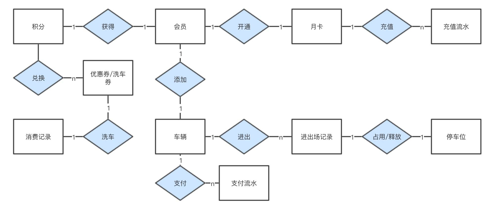
业务模块设计
据第一篇需求分析的情况，我们已经识别出关键流程、主要业务模块以及模块中主要的业务实体、实体相关的事件。本案例完全可以采用单实体的模式开发，但为了模拟微服务开发的场景，所以这里按照微服务的设计方式来进行。
根据关键业务实体联系与事件，将业务模块整合为七个子服务。
- 会员服务，包括会员信息、车辆信息、会员月卡
- 基础资源服务，包括车位、闸机，车辆停靠记录
- 计费服务，车辆出入场记录，计费规则
- 积分服务，积分兑换，会员积分，会员签到得积分
- 财务服务，支付流水，充值流水，财务统计
- 消息服务，记录通知内容
- 洗车服务，积分兑换的洗车券去场内洗车
服务的拆分粒度究竟多细，业界并没有统一的标准，必须依据公司团队情况、人员能力水平以及产品的使用情况来划分，不可过细，过粗也失去了微服务的意义。 每个微服务可交由二到三个开发人员维护，避免维护过多，分散精力，同时又可保证快速的响应维护升级。
存储设计
微服务架构风格的一个好处，是持久性的封装。我们可以根据每个服务的需要，去选择不同的持久化技术。根据每种数据类型的特点而去选择数据存储的方法，也就是混合持久化，结构化存储与非结构化存储混合使用。不同服务间使用不同的存储模型，单一服务中也可以使用混合存储。既然要采用微服务化结构，从独立开发、运行、部署和运维都是单独的小应用。每个小应用内部业务逻辑处理，到数据库访问，以及数据库都是独立的。
依据本案例的业务场景，我们拆分为七个子存储库，分别为：
- park_member——会员服务库
- park_resource——停车场资源服务库
- park_charging——计费服务库
- park_card——积分服务库
- park_finance——财务服务库
- park_message——消息服务库
- park-carwash——洗车服务库
实际中有些实施微服务的团队，将服务拆分，但存储库依旧仍是一份，现实中应该有为数不少的存在。不能说不对，只能说不符合微服务的建议。
结构化存储采用社区版 MySQL 5.7+版本，非结构存储主要涉及到缓存这块，采用 Redis 4.0 +版本。结构化存储中建议设计一些通用字段，主要用于跟踪数据记录，库表结构通用字段如下：
`create_by` varchar(32) DEFAULT NULL COMMENT '创建人',
`create_date` timestamp NOT NULL DEFAULT CURRENT_TIMESTAMP COMMENT '创建日期',
`update_by` varchar(32) DEFAULT NULL COMMENT '更新人',
`update_date` timestamp NOT NULL DEFAULT CURRENT_TIMESTAMP COMMENT '更新日期',
`remark` varchar(500) DEFAULT NULL COMMENT '备注',
`version` int(4) DEFAULT '0' COMMENT '版本',
`state` int(4) DEFAULT '1' COMMENT '状态'
每条数据记录的创建人、创建时间，后续的更改人、更改时间，非业务层面的备注、版本、状态，有利于数据维护人员识别，建议每个表中都加上。
建库脚本如下
CREATE DATABASE `park_member` CHARACTER SET utf8 COLLATE utf8_general_ci;
CREATE DATABASE `park_resource` CHARACTER SET utf8 COLLATE utf8_general_ci;
CREATE DATABASE `park_charging` CHARACTER SET utf8 COLLATE utf8_general_ci;
CREATE DATABASE `park_card` CHARACTER SET utf8 COLLATE utf8_general_ci;
CREATE DATABASE `park_finance` CHARACTER SET utf8 COLLATE utf8_general_ci;
CREATE DATABASE `park_message` CHARACTER SET utf8 COLLATE utf8_general_ci;
CREATE DATABASE `park_carwash` CHARACTER SET utf8 COLLATE utf8_general_ci;
park_member 库初始化表结构
-- ----------------------------
-- Table structure for member
-- ----------------------------
DROP TABLE IF EXISTS `member`;
CREATE TABLE `member` (
`id` varchar(32) NOT NULL DEFAULT '',
`phone` varchar(11) DEFAULT NULL COMMENT '手机号',
`birth` varchar(10) DEFAULT NULL COMMENT '生日',
`full_name` varchar(20) DEFAULT NULL COMMENT '姓名',
PRIMARY KEY (`id`) USING BTREE
) ENGINE=InnoDB DEFAULT CHARSET=utf8 COMMENT='会员信息';
-- ----------------------------
-- Table structure for month_card
-- ----------------------------
DROP TABLE IF EXISTS `month_card`;
CREATE TABLE `month_card` (
`id` varchar(32) NOT NULL DEFAULT '',
`card_no` varchar(20) DEFAULT NULL COMMENT '会员卡号',
`start` varchar(16) DEFAULT NULL COMMENT '有效期起始',
`ends` varchar(16) DEFAULT NULL COMMENT '有效期截止',
`member_id` varchar(32) DEFAULT NULL COMMENT '会员编号',
PRIMARY KEY (`id`) USING BTREE
) ENGINE=InnoDB DEFAULT CHARSET=utf8 COMMENT='会员月卡信息';
-- ----------------------------
-- Table structure for vehicle
-- ----------------------------
DROP TABLE IF EXISTS `vehicle`;
CREATE TABLE `vehicle` (
`id` varchar(32) NOT NULL DEFAULT '',
`member_id` varchar(32) DEFAULT NULL COMMENT '会员编号',
`plate_no` varchar(10) DEFAULT NULL COMMENT '车牌号',
`vehicle_inf` varchar(50) DEFAULT NULL COMMENT '车辆型号',
PRIMARY KEY (`id`) USING BTREE
) ENGINE=InnoDB DEFAULT CHARSET=utf8 COMMENT='会员车辆';
park_resource 库初始化表结构
-- ----------------------------
-- Table structure for brake
-- ----------------------------
DROP TABLE IF EXISTS `brake`;
CREATE TABLE `brake` (
`id` varchar(32) NOT NULL DEFAULT '',
`code` varchar(20) DEFAULT NULL COMMENT '编号',
`desc` varchar(50) DEFAULT NULL COMMENT '描述',
PRIMARY KEY (`id`) USING BTREE
) ENGINE=InnoDB DEFAULT CHARSET=utf8 COMMENT='停车场闸机';
-- ----------------------------
-- Table structure for stall
-- ----------------------------
DROP TABLE IF EXISTS `stall`;
CREATE TABLE `stall` (
`id` varchar(32) NOT NULL DEFAULT '',
`code` varchar(10) DEFAULT NULL COMMENT '编号',
`is_parked` int(2) DEFAULT NULL COMMENT '是否被占用',
PRIMARY KEY (`id`) USING BTREE
) ENGINE=InnoDB DEFAULT CHARSET=utf8 COMMENT='车位表';
-- ----------------------------
-- Table structure for stall_parked
-- ----------------------------
DROP TABLE IF EXISTS `stall_parked`;
CREATE TABLE `stall_parked` (
`id` varchar(32) NOT NULL DEFAULT '',
`stall_id` varchar(32) DEFAULT NULL COMMENT '车位编号',
`plate_no` varchar(30) DEFAULT NULL COMMENT '车牌',
`mtype` int(2) DEFAULT NULL COMMENT '0 入场，1 出场',
PRIMARY KEY (`id`) USING BTREE
) ENGINE=InnoDB DEFAULT CHARSET=utf8 COMMENT='车位停靠记录';
park_charging 库初始化表结构
-- ----------------------------
-- Table structure for charging_rule
-- ----------------------------
DROP TABLE IF EXISTS `charging_rule`;
CREATE TABLE `charging_rule` (
`id` varchar(32) NOT NULL DEFAULT '',
`start` int(4) DEFAULT NULL COMMENT '停车时间起始',
`end` int(4) DEFAULT NULL COMMENT '停车时间结束',
`fee` float DEFAULT NULL COMMENT '收费',
PRIMARY KEY (`id`) USING BTREE
) ENGINE=InnoDB DEFAULT CHARSET=utf8 COMMENT='计费规则';
-- ----------------------------
-- Table structure for entrance
-- ----------------------------
DROP TABLE IF EXISTS `entrance`;
CREATE TABLE `entrance` (
`id` varchar(32) NOT NULL DEFAULT '',
`member_id` varchar(32) DEFAULT NULL COMMENT '会员编号',
`plate_no` varchar(10) DEFAULT NULL COMMENT '车牌',
`brake_id` varchar(32) DEFAULT NULL COMMENT '闸机号',
PRIMARY KEY (`id`) USING BTREE,
KEY `no_idx` (`plate_no`),
KEY `member_idx` (`member_id`)
) ENGINE=InnoDB DEFAULT CHARSET=utf8 COMMENT='车辆入场';
-- ----------------------------
-- Table structure for vexists
-- ----------------------------
DROP TABLE IF EXISTS `vexists`;
CREATE TABLE `vexists` (
`id` varchar(32) NOT NULL DEFAULT '',
`member_id` varchar(32) DEFAULT NULL COMMENT '会员编号',
`brake_id` varchar(32) DEFAULT NULL COMMENT '闸机号',
`plate_no` varchar(32) DEFAULT NULL COMMENT '车牌号',
PRIMARY KEY (`id`) USING BTREE,
KEY `no_idx` (`plate_no`),
KEY `member_idx` (`member_id`)
) ENGINE=InnoDB DEFAULT CHARSET=utf8 COMMENT='车辆驶出';
park_card 库初始化表结构
-- ----------------------------
-- Table structure for exchange
-- ----------------------------
DROP TABLE IF EXISTS `exchange`;
CREATE TABLE `exchange` (
`id` varchar(32) NOT NULL DEFAULT '',
`member_id` varchar(32) DEFAULT NULL COMMENT '会员编号',
`card_qty` int(11) DEFAULT NULL COMMENT '积分数量',
`ctype` int(4) DEFAULT NULL COMMENT '0 优惠券，1 洗车券',
`code` varchar(30) DEFAULT NULL COMMENT '券编码',
PRIMARY KEY (`id`) USING BTREE
) ENGINE=InnoDB DEFAULT CHARSET=utf8 COMMENT='积分兑换';
-- ----------------------------
-- Table structure for member_card
-- ----------------------------
DROP TABLE IF EXISTS `member_card`;
CREATE TABLE `member_card` (
`id` varchar(32) NOT NULL DEFAULT '',
`member_id` varchar(32) DEFAULT NULL COMMENT '会员编号',
`cur_qty` varchar(20) DEFAULT NULL COMMENT '当前可用积分',
PRIMARY KEY (`id`) USING BTREE
) ENGINE=InnoDB DEFAULT CHARSET=utf8 COMMENT='会员积分';
-- ----------------------------
-- Table structure for member_sign
-- ----------------------------
DROP TABLE IF EXISTS `member_sign`;
CREATE TABLE `member_sign` (
`id` varchar(32) NOT NULL DEFAULT '',
`member_id` varchar(32) DEFAULT NULL COMMENT '会员编号',
`cnt` int(4) DEFAULT NULL COMMENT '积分数量',
`ctype` int(4) DEFAULT NULL COMMENT '0 签到，1 商场消费',
PRIMARY KEY (`id`) USING BTREE
) ENGINE=InnoDB DEFAULT CHARSET=utf8 COMMENT='会员签到';
park_finance 库初始化表结构
-- ----------------------------
-- Table structure for billing
-- ----------------------------
DROP TABLE IF EXISTS `billing`;
CREATE TABLE `billing` (
`id` varchar(32) NOT NULL DEFAULT '',
`member_id` varchar(32) DEFAULT NULL COMMENT '会员编号',
`fee` float DEFAULT '0' COMMENT '支付金额',
`plate_no` varchar(10) DEFAULT NULL COMMENT '车牌号',
`duration` float DEFAULT '0' COMMENT '停车时间',
PRIMARY KEY (`id`) USING BTREE,
KEY `no_idx` (`plate_no`)
) ENGINE=InnoDB DEFAULT CHARSET=utf8 COMMENT='车辆驶出支付流水';
-- ----------------------------
-- Table structure for month_card_recharge
-- ----------------------------
DROP TABLE IF EXISTS `month_card_recharge`;
CREATE TABLE `month_card_recharge` (
`id` varchar(32) NOT NULL DEFAULT '',
`card_no` varchar(20) DEFAULT NULL COMMENT '月卡号',
`member_id` varchar(32) DEFAULT NULL COMMENT '会员编号',
`amount` float DEFAULT NULL COMMENT '充值金额',
PRIMARY KEY (`id`) USING BTREE
) ENGINE=InnoDB DEFAULT CHARSET=utf8 COMMENT='会员月卡充值';
park_message 库初始化表结构
-- ----------------------------
-- Table structure for message
-- ----------------------------
DROP TABLE IF EXISTS `message`;
CREATE TABLE `message` (
`id` varchar(32) NOT NULL DEFAULT '',
`mtype` char(10) DEFAULT NULL COMMENT '消息类型，PAY 支付消息，BIND 绑定信息',
`mcontent` varchar(500) DEFAULT NULL COMMENT '消息内容',
`member_id` varchar(32) DEFAULT NULL COMMENT '会员',
PRIMARY KEY (`id`) USING BTREE
) ENGINE=InnoDB DEFAULT CHARSET=utf8 COMMENT='推送消息';
park_carwash 库表结构
-- ----------------------------
-- Table structure for car_wash
-- ----------------------------
DROP TABLE IF EXISTS `car_wash`;
CREATE TABLE `car_wash` (
`id` varchar(32) NOT NULL,
`member_id` varchar(32) DEFAULT NULL COMMENT '会员编号',
`plate_no` varchar(10) DEFAULT NULL COMMENT '车牌号',
`ticket_code` varchar(20) DEFAULT NULL COMMENT '洗车券编码',
PRIMARY KEY (`id`) USING BTREE
) ENGINE=InnoDB DEFAULT CHARSET=utf8;
完整的表结构脚本地址，点击下方链接：
https://github.com/backkoms/spring-cloud-alibaba-ParkingLot/tree/master/src/script
初始化数据
有了初步数据库的模型，需要初始化一部分数据进去，比如计费规则、闸机信息，车位信息。
闸机数据
INSERT INTO `brake` VALUES ('4edb0820241041e5a0f08d01992de4c0', 'ct1', '入场口', 'admin', '2019-12-27 11:37:22', NULL, '2019-12-27 11:37:22', NULL, 0, 1);
INSERT INTO `brake` VALUES ('989170c529a348b3b93bf2a4653e8ea9', 'ct2', '入场口', 'admin', '2019-12-27 11:37:45', NULL, '2019-12-27 11:37:45', NULL, 0, 1);
INSERT INTO `brake` VALUES ('e489029055654bccb3cd601f0be71c41', 'ct3', '出场口', 'admin', '2019-12-27 11:37:36', NULL, '2019-12-27 11:37:36', NULL, 0, 1);
INSERT INTO `brake` VALUES ('f726873ed17441ea8dfbf78381bcde78', 'ct4', '出场口', 'admin', '2019-12-27 11:37:41', NULL, '2019-12-27 11:37:41', NULL, 0, 1);
车位数据
INSERT INTO `stall` VALUES ('004ac347b94e42bb8f0f6febd3265e35', 'P336', 0, 'admin', '2019-12-27 11:42:03', NULL, '2019-12-27 11:42:03', NULL, 0, 1);
INSERT INTO `stall` VALUES ('008773e089664ce49607c86b89dd8c0f', 'P250', 0, 'admin', '2019-12-27 11:42:03', NULL, '2019-12-27 11:42:03', NULL, 0, 1);
INSERT INTO `stall` VALUES ('0110ef02554f46ce91a3eeec6ecf2f95', 'P224', 0, 'admin', '2019-12-27 11:42:03', NULL, '2019-12-27 11:42:03', NULL, 0, 1);
INSERT INTO `stall` VALUES ('014f1f2b972e4e0092d749a7437f824d', 'P577', 0, 'admin', '2019-12-27 11:42:04', NULL, '2019-12-27 11:42:04', NULL, 0, 1);
INSERT INTO `stall` VALUES ('019f4aa0c22849e1a5758aaa33b855df', 'P229', 0, 'admin', '2019-12-27 11:42:03', NULL, '2019-12-27 11:42:03', NULL, 0, 1);
计费规则
INSERT INTO `charging_rule` VALUES ('41ed927623cf4a0bb5354b10100da992', 0, 30, 0, 'admin', '2019-12-27 11:26:08', NULL, '2019-12-27 11:26:08', '30 分钟内免费', 0, 1);
INSERT INTO `charging_rule` VALUES ('41ed927623cf4a0bb5354b10100da993', 31, 120, 5, 'admin', '2019-12-27 11:26:12', NULL, '2019-12-27 11:26:12', '2 小时内，5 元', 0, 1);
INSERT INTO `charging_rule` VALUES ('4edb0820241041e5a0f08d01992de4c0', 121, 720, 10, 'admin', '2019-12-27 11:34:06', NULL, '2019-12-27 11:34:06', '2 小时以上 12 小时以内，10 元', 0, 1);
INSERT INTO `charging_rule` VALUES ('7616fb412e824dcda41ed9367feadfda', 721, 1440, 20, 'admin', '2019-12-27 13:35:37', NULL, '2019-12-27 13:35:37', '12 时至 24 时，20 元', 0, 1);
非结构化存储
主要使用 Redis 中间件来存储可用车位的实时性信息，计费规则信息等热数据。
架构设计
没有最优的架构，只有最合适的架构，一切系统设计原则都要以解决业务问题为最终目标，并随着业务的发展，不断进行迭代演进。经过上面业务模块、存储模型的划分，基本的代码架构已经清晰可见。综合业务模块、微服务架构特性，输出功能架构设计图。
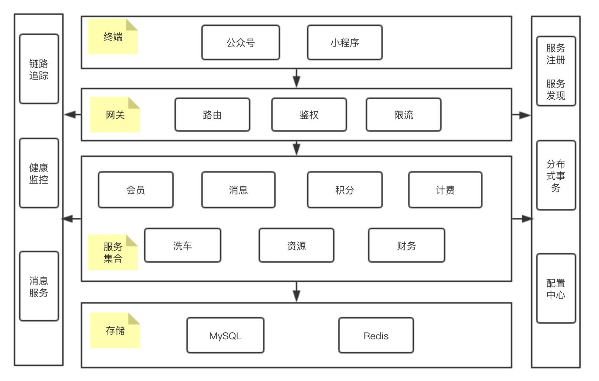
基于总体功能架构图，使用特定的功能组件即可实现相应的功能。前期也提到，Spring Cloud 全家桶中囊括了很多组件，开箱即用，这对快速上手微服务开发提供了极大的便利。同时，再融入时常开发实践一些常用的高效工具来提升编码效率如 Lombok，MBG 等。
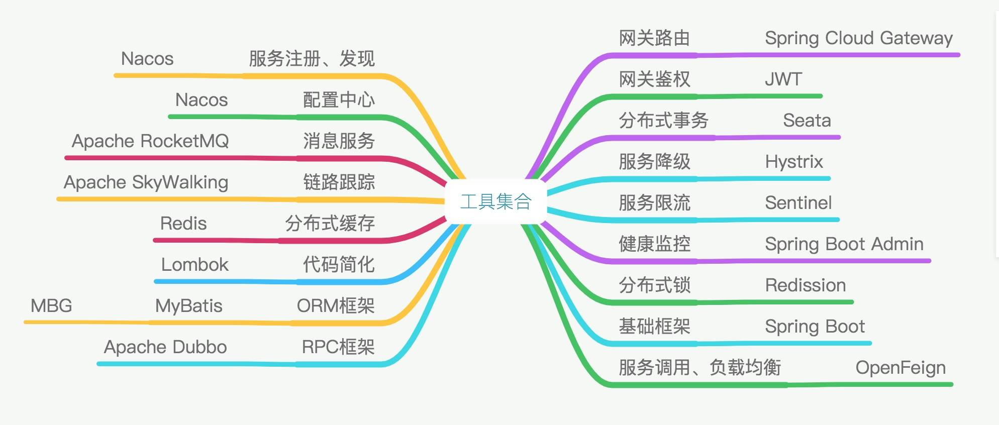
留个思考题
组件库有提成 Lombok，对简化代码开发很有帮助。你有什么好用的组件库，能够在项目开发中，高效发挥作用呢？
03 第一个 Spring Boot 子服务——会员服务
经过上两个章节的分析、设计工作，相信你已经对项目的整体结构有了更清晰的认识，剩下的工作就是依据设计，将项目骨架拉出来，往里面直充血肉。
搭建项目骨架
约定项目名称为 parking-project ，建立 Maven 项目，packaging 方式 为 pom，用于管理所有模块。在 parking-project 项目下依据功能模块依次建立 maven module 子项目。IDE 工具采用 Eclipse IDE Photon Release (4.8.0)。
一、以 Maven Project 形式创建父项目，用于管理子模块功能
二、在父项目下，以 Maven Module 创建子模块。
可以看到，子模块自动将 parent project 设置为 parking-project 父项目。由于是采用 Spring Boot 的方式构建子项目，此处选择 packaging 方式为 jar 。依此连续创建各种子模块即可，最终的结果如下：

简单介绍下各模块的功用：
- parking-base-serv，pom 项目，里面包含两个子模块：parking-admin，parking-gateway。
- parking-admin，监控子项目的运行情况。
- parking-gateway，网关子服务，配合 JWT 实现会话、验权等功用。
- parking-carwash，洗车子服务，连接 park-carwash 数据库。
- parking-card，积分子服务，连接 park-card 数据库。
- parking-charging，计费子服务，连接 parking-charging 存储库
- parking-finance，财务子服务，连接 parking-finance 存储库。
- parking-member，会员子服务，连接 park-member 存储库。
- parking-resource，资源子服务，连接 park-resource 存储库。
- parking-message，消息子服务，连接 park-message 存储库，连同 rocketmq 存储消息数据
- parking-common，存储通用的工具类，实体包等等。
这是一种手动的方式创建项目，里面依赖的组件都需要手工添加。这里再介绍一种方式，直接采用官方的 Spring Initializr 来初始化项目，分别生成子项目后，再将他们组装成一定的项目结构。
- 选择是 maven 项目，还是 gradle 项目。(两种不同的构建方式)
- 项目语言，是 Java、Kotlin 还是 Groovy ，三种基于 JVM 的语言
- Spring Boot 的版本选择
- 项目的 groupId、artifact
- 项目依赖 search，搜索后，直接点击后面的"+“即可依赖进去。
- 点击下文的按钮" Generate "即可生成 zip 文件，将项目引入 eclipse / idea 即可使用。
创建 Spring Boot 子服务
引入 spring-boot-starter-parent 依赖
每个子模块都是一个 Spring Boot 项目，如果在子模块中引入，会造成大量的重复工作，而且版本不宜统一维护，容易出现多版本的混乱局面，所以 Spring Boot 的版本需要全局统一维护。
每个子项目需要构建成 jar 文件运行，子项目中已经依赖父项目的配置，每个子项目 pom.xml 文件都有这样的依赖：
<parent>
<groupId>com.mall.parking.root</groupId>
<artifactId>parking-project</artifactId>
<version>0.0.1-SNAPSHOT</version>
</parent>
如果按照常见的方式，再用 parent 方式引入 spring-boot-starter-parent 依赖，显然违背单个 pom 文件中只有一个 parent 标签的标准，编译就会不通过。
<parent>
<groupId>org.springframework.boot</groupId>
<artifactId>spring-boot-starter-parent</artifactId>
<version>2.2.2.RELEASE</version>
<relativePath/> <!-- lookup parent from repository -->
</parent>
为解决这个问题，此处采用 parking-project 父项目中以 depencyMangement 方式引入 spring-boot-starter-parent，子项目依赖 parent 父配置即可。
<dependencyManagement>
<dependencies>
<dependency>
<groupId>org.springframework.boot</groupId>
<artifactId>spring-boot-dependencies</artifactId>
<version>${spring.boot.version}</version>
<type>pom</type>
<scope>import</scope>
</dependency>
</dependencies>
</dependencyManagement>
有小伙伴可能会提出直接在根项目的 pom 采用 parent 的方式引入，子模块直接通过 maven 依赖就可以，这种方式在独立运行 Spring Boot 项目时没问题。后续以同样的方式引入 Spring Cloud 或 Spring Cloud Alibaba ，一个 parent 标签显然不满足这个需求，用 dependencyManagement 的方式可以规避这个问题。
引入 MBG 插件
MBG 插件可以自动生成 mapper 接口、mapper xml 配置、相应实体类，主要作用在于快速开发，省去不必要的代码编写。详细介绍可参见文档：https://mybatis.org/generator/
在 pom 中配置依赖 MBG 的插件：
<build>
<finalName>parking-member-service</finalName>
<plugins>
<plugin>
<groupId>org.mybatis.generator</groupId>
<artifactId>mybatis-generator-maven-plugin</artifactId>
<version>1.4.0</version>
<configuration>
<!-- mybatis 用于生成代码的配置文件 -->
<configurationFile>src/test/resources/generatorConfig.xml</configurationFile>
<verbose>true</verbose>
<overwrite>true</overwrite>
</configuration>
</plugin>
</plugins>
</build>
在 src/test/resource 目录下写入 generatorConfig.xml 文件，配置 MBG 插件 所需的基本配置项。
<generatorConfiguration>
<!-- 本地 mysql 驱动位置 -->
<classPathEntry location="/Users/apple/.m2/repository/mysql/mysql-connector-java/5.1.42/mysql-connector-java-5.1.42.jar" />
<context id="mysqlTables" targetRuntime="MyBatis3">
<jdbcConnection driverClass="com.mysql.jdbc.Driver"
connectionURL="jdbc:mysql://localhost:3306/park-member?useUnicode=true" userId="root"
password="root">
<property name="useInformationSchema" value="true"/>
</jdbcConnection>
<javaTypeResolver >
<property name="forceBigDecimals" value="false" />
</javaTypeResolver>
<!-- 生成 model 实体类文件位置 -->
<javaModelGenerator targetPackage="com.mall.parking.member.entity" targetProject="src/test/java">
<property name="enableSubPackages" value="true" />
<property name="trimStrings" value="true" />
</javaModelGenerator>
<!-- 生成 mapper.xml 配置文件位置 -->
<sqlMapGenerator targetPackage="mybatis.mapper" targetProject="src/test/resources">
<property name="enableSubPackages" value="true" />
</sqlMapGenerator>
<!-- 生成 mapper 接口文件位置 -->
<javaClientGenerator type="XMLMAPPER" targetPackage="com.mall.parking.member.mapper" targetProject="src/test/java">
<property name="enableSubPackages" value="true" />
</javaClientGenerator>
<!-- 需要生成的实体类对应的表名，多个实体类复制多份该配置即可 -->
<table tableName="member" domainObjectName="Member">
<generatedKey column="tid" sqlStatement="SELECT REPLACE(UUID(), '-', '')"/>
</table>
<table tableName="vehicle" domainObjectName="Vehicle">
<generatedKey column="tid" sqlStatement="SELECT REPLACE(UUID(), '-', '')"/>
</table>
<table tableName="month_card" domainObjectName="MonthCard">
<generatedKey column="tid" sqlStatement="SELECT REPLACE(UUID(), '-', '')"/>
</table>
</context>
</generatorConfiguration>
配置完成后，在项目名称” parking-member “ 上右键，弹出菜单中选择" Run As " —>" Maven build… "，在 Goals 栏目中输入如下命令：
mybatis-generator:generate
命令执行成功后，在对应的目录下找到相应的文件，而后 copy 到 src/java 对应的目录下，再将 tes t 目录下生成的文件删除。
注：
- 1.4 版本之前的，MBG 插件生成的 xml 文件，是追加模式，而不是覆盖，容易形成重复的标签。
- MBG 并不会生成 controller/service 层相关的代码，需要自己手动完成。
引入 Lombok，简化代码
官方给出的定义：
Project Lombok is a java library that automatically plugs into your editor and build tools, spicing up your java. Never write another getter or equals method again, with one annotation your class has a fully featured builder, Automate your logging variables, and much more.
lombok 安装
lombok.jar 官方下载地址：https://projectlombok.org/download
由于编译阶段就要使用 lombok，所以需要在 IDE 中安装 lombok 插件，才能正常编译。
- eclipse 下安装 lombok
双击下载好的 lombok.jar，弹出选择框，选择" Specify location "，选择 eclipse 的安装目录，选中执行文件，执行 install/update 操作。安装完成后退出，可以看到 eclipse.ini 文件中多出一个配置行
-javaagent:${eclipse-home}\lombok.jar
- 重启 eclipse 即可。
- IDEA 中安装 lombok
选择" settings "，点击" plugins “选项，点击" Browse repositories "，查找" lombok "，选择筛选出来的" lombok plugin "，进行 install 操作。
安装完成后在 pom.xml 上引入对应的 jar。
sl4j 日志注解
如果不想每次都写
private final Logger logger = LoggerFactory.getLogger(当前类名.class);
可以用注解@Slf4j 来打印日志。
引入 MyBatis
更高效的引入 MyBatis，这里采用 starter 的方式引入，同样在根 pom.xml 文件中维护组件的版本。
<dependency>
<groupId>org.mybatis.spring.boot</groupId>
<artifactId>mybatis-spring-boot-starter</artifactId>
</dependency>
<dependency>
<groupId>mysql</groupId>
<artifactId>mysql-connector-java</artifactId>
</dependency>
在 application.properties 配置文件中设置数据库连接，Spring Boot 2.x 版本默认采用是 HikariCP 作为 JDBC 连接池。
mybatis.type-aliases-package=com.mall.parking.member.entity
#如果需要更换 Druid 连接池，需要增加如下的配置项：
#spring.datasource.type=com.alibaba.druid.pool.DruidDataSource
#use new driver replace deprecated driver:com.mysql.jdbc.Driver.
spring.datasource.driverClassName = com.mysql.cj.jdbc.Driver
spring.datasource.url = jdbc:mysql://localhost:3306/park_member?useUnicode=true&characterEncoding=utf-8
spring.datasource.username = root
spring.datasource.password = root
使 mapper 接口文件能够被系统扫描，在主类中通过 @mapperScan 注解，或直接在 mapper 接口文件上加 @mapper 注解。
编写一个简单的测试方法，检验框架能否运转良好。
@RestController
@RequestMapping("member")
@Slf4j
public class MemberController {
@Autowired
MemberService memberService;
@RequestMapping("/list")
public List<Member> list() {
List<Member> members = memberService.list();
log.debug("query member list = " + members);
return members;
}
}
MemberService 接口类
List<Member> list();
MemberServiceImpl 实现类
@Service
public class MemberServiceImpl implements MemberService {
@Autowired
MemberMapper memberMapper;
@Override
public List<Member> list() {
MemberExample example = new MemberExample();
List<Member> members = memberMapper.selectByExample(example);
return members;
}
}
启动项目，成功后显示成功日志：
2019-12-30 16:45:13.496 INFO 9784 --- [ main] c.mall.parking.member.MemberApplication : Started MemberApplication in 6.52 seconds (JVM running for 7.753)
打开 Postman 插件，测试刚才的方法是否正常，操作如下：
多环境配置
日常产品研发中必然涉及到多部署的问题，比如开发环境、测试环境、生产环境等，这就要求代码部署能够应对多环境的要求。通过人工修改的方式，不但容易出错，也会浪费人力成本，必须结合自动化构建来提高准确性。Spring Boot 提供了基于 profile 的多环境配置，可以在各微服务项目上增加多个配置文件，如
application.properties/yml 基础公共配置 application-dev.properties/yml 开发环境配置 application-test.properties/yml 测试环境配置 application-pro.properties/yml 生产环境配置
在公共配置文件 application.properties 中，通过配置 spring.profiles.active = dev 来决定启用哪个配置，或在启动构建包时，增加命令来激活不同的环境配置： java -jar parking-member.jar --spring.profiles.active=dev
至此，第一个简单的 Spring Boot 模块搭建完成，下一步将 park-member 模块的正常业务功能编码完成即可。为便于后续课程的顺利开展，可仿照本篇的框架配置，将剩余几个子模块的基本配置完善起来，达到正常使用的目标。
留一个思考题
往常情况下，构建出的 war 项目运行时可以受理 HTTP 请求，Spring Boot 项目构建出的 jar 运行时为什么也可以受理 HTTP 请求呢？它是如何做到的呢？
04 如何维护接口文档供外部调用——在线接口文档管理
上个章节初步将一个应用运行起来，由于服务不会单独存在，服务开发团队必然与其他服务团队进行服务调用，暴露出对外接口势在必行。早期做开发的时候，大家习惯于以 word 或 excel 的形式，但弊端显而易见，一旦接口发生变动，文档需要同步更新，遗憾的是很多接口已经更新，但文档都没有跟上，相信你也有过痛苦的经历。本文带领你认识几款接口文档管理工具，并实现本案例实践中用到的在线接口文档管理。
几款 API 工具介绍
我们迫切需要一个接口文档工具，能实时与系统接口保持同步，无须额外付出成本（资金成本、时间成本）最好。这里介绍几个开源的 API 工具，可以选择使用。
RAP2
官方地址：http://rap2.taobao.org/，早期称为 RAP ，阿里妈妈 MUX 团队出品，后面项目停止维护，转移至 RAP2 项目。
来自官网的介绍：RAP2 是时下流行的开发接口管理工具，通常用于前后端分离的开发模式中，共同约定接口，而 RAP2 可以根据约定的接口自动生成 Mock 数据、对后端接口进行校验，拥有较好的文档编写体验，支持复杂的 Mock 逻辑，为开发提供了便利。 RAP2 是参照 RAP1 第一代的基础上，使用 Node + React 重构了所有主要功能。
可以在线使用，也可以本地部署使用，本地部署有详细的步骤介绍，从部署手册来看，产品还是比较重的，环境依赖也比较多。部署后，同样存在要花时间保持与代码同步的问题，针对提供比较稳定接口的项目而言，是个不错的选择。
APIDOC
官方地址：https://apidocjs.com/，通过代码中的相当格式的注释来生成 API 接口文档，依赖 Node.js 环境。使用比较简单，弊端：接口发生变动时，需要花时间来同步文档。针对比较稳定的接口系统而言，可以做个备选。
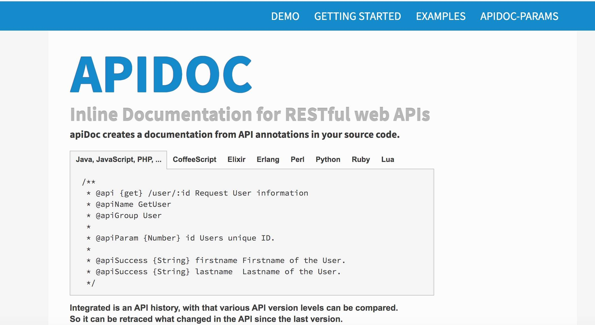
Spring REST Docs
Spring 全家桶中很多 API 文档，都是基于此组件生成，据官方提供的使用方法需要编写相应的代码片断，还有相应的语法规范，再通过项目构建的方式生成离线文档。操作起来比较繁琐，这里不推荐使用。生成的文档形如下面截图中所示：
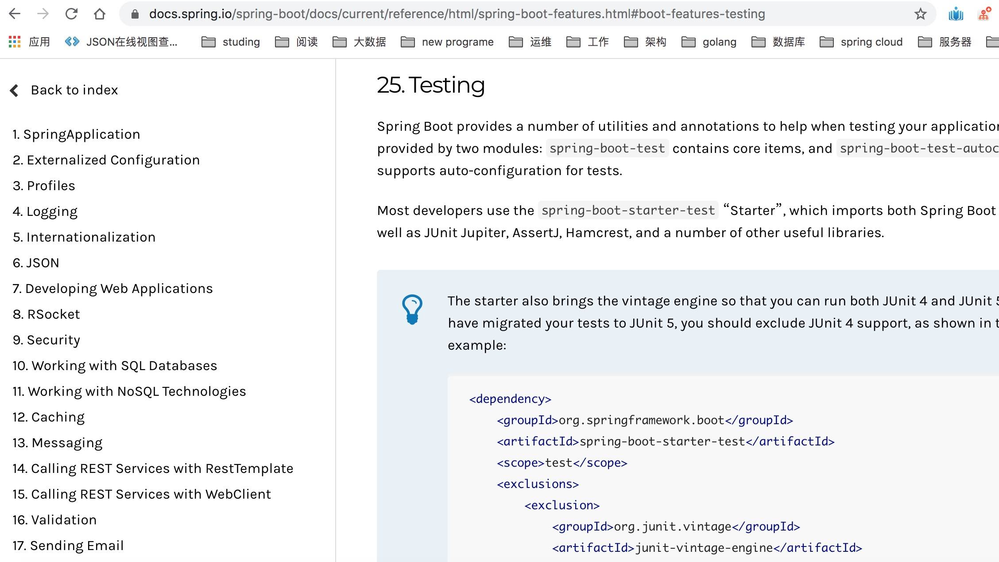
Swagger
官网地址：https://swagger.io ， 是一款 RESTFU L 接口的文档在线自动生成+功能测试功能软件，是一个规范和完整的框架，标准的，语言无关，用于生成、描述、调用和可视化 RESTful 风格的 Web 服务。总体目标是使客户端和文件系统作为服务器以同样的速度来更新。文件的方法，参数和模型紧密集成到服务器端的代码，允许 API 来始终保持同步。Swagger 让部署管理和使用功能强大的 API 从未如此简单。
本实战案例中采用 Swagger 来进行的 API 的管理。
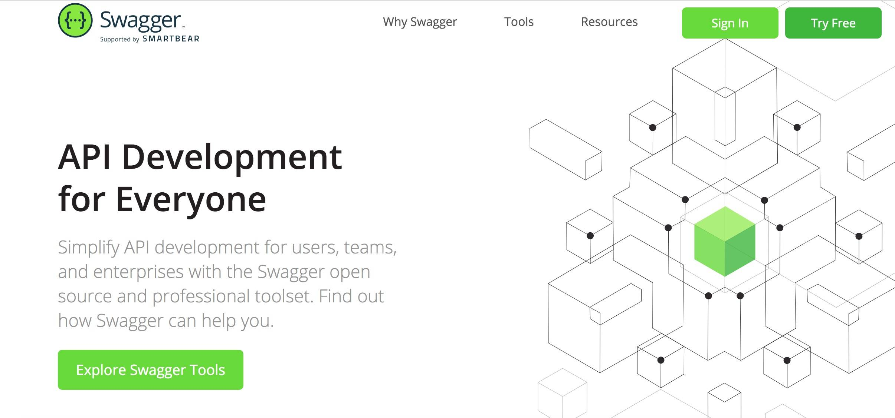
Spring Boot 整合 Swagger2
1、引入依赖
加入 Swagger 相关的 jar 依赖，由于各个子模块都有用到，这里将 Swagger 在根 pom.xml 中进行统一的版本管理
<properties>
<swagger.version>2.8.0</swagger.version>
</properties>
<!--swagger2 -->
<dependency>
<groupId>io.springfox</groupId>
<artifactId>springfox-swagger2</artifactId>
<version>${swagger.version}</version>
</dependency>
<dependency>
<groupId>io.springfox</groupId>
<artifactId>springfox-swagger-ui</artifactId>
<version>${swagger.version}</version>
</dependency>
子模块中无须配置 version，直接引入即可，如果需要变更 version，直接在根 pom.xml 中修改，所有依赖子模块的版本也会一同发生变更。
<!--swagger2 -->
<dependency>
<groupId>io.springfox</groupId>
<artifactId>springfox-swagger2</artifactId>
</dependency>
<dependency>
<groupId>io.springfox</groupId>
<artifactId>springfox-swagger-ui</artifactId>
</dependency>
2、Swagger2 配置
建立 config 包，新增 Swagger 配置类。通过 @EnableSwagger2 注解启用 Swagger2 ，然后配置一个 Docket Bean ，配置映射路径和要扫描的接口的位置，在 apiInfo 中，主要配置一下 Swagger2 文档网站的信息，例如网站的 title ，网站的描述，联系人的信息，使用的协议、接口的版本等等。
@EnableSwagger2
@Configuration
public class Swagger2Config {
@Bean
public Docket createRestApi() {
return new Docket(DocumentationType.SWAGGER_2).apiInfo(apiInfo()).select()
.apis(RequestHandlerSelectors.any()).paths(PathSelectors.any()).build();
}
private ApiInfo apiInfo() {
return new ApiInfoBuilder()
.title("Member 会员模块接口层（基于 SpringBoot2+Swagger2）.")
.contact(new Contact("growithus", "https://backkoms.github.io/", "andy.deqiang@gmail.com"))
.version("1.0")
.description("").build();
}
}
由于采用的是较高版本，相应的 Controller 类中无须再编写 Swagger 相应的代码注解，代码侵入性进一步降低。旧版本相关的注解，如 @Api、@ApiOperation、@ApiImplicitParams、@ApiImplicitParam、@ApiModel 等，如果是旧版本，必须要在相关代码中增加以上相应的注解，对代码有一定侵入性。
经过以上两个步骤，Swagger2 就算配置成功了，非常简捷。启动项目，输入 http://localhost:10060/swagger-ui.html，能够看到如下 UI，说明已经配置成功了。
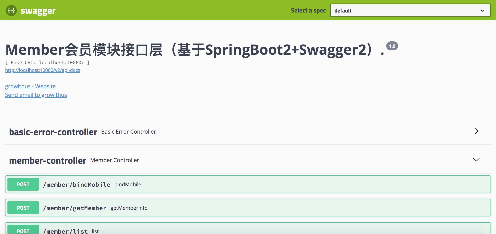
3、API 验证测试
编写测试类，启动项目
@RestController
@RequestMapping("test")
public class APITestController {
@PostMapping("/hello")//只支持 POST 请求
//@RequestMapping(name = "hello", method = { RequestMethod.POST })//同样只支持 POST 请求
public String hello(String name) {
return "hello " + name;
}
}
Request 方法有 8 种请求类型：POST \ GET \ OPTIONS \ HEAD \ PUT \ DELETE \ TRACE \ PATCH，为确保不必要的请求造成的潜在威胁，案例建议中直接采用 POST 方式一种，禁用其它请求方式。 @PostMapping("/hello") 功能等同于 @RequestMapping(name = "hello", method = { RequestMethod.POST })
1、直接使用 Shell 脚本进行请求测试：
appledeMacBook-Air:~ apple$ curl -X POST "http://localhost:10060/test?name=world" hello world
可以看到正常输出结果，再测试一下其它请求方式能否正常请求数据：
appledeMacBook-Air:~ apple$ curl -X GET "http://localhost:10060/test?name=world" {"timestamp":"2020-02-01T12:59:09.508+0000","status":405,"error":"Method Not Allowed","message":"Request method 'GET' not supported","path":"/test"}
响应输出方法不支持，只支持 POST 方式请求。
2、未使用 Swagger 时，可以采用 Postman 测试工具进行接口调试。

3、现在已经集成了 Swagger 功能，打开http://localhost:10060/swagger-ui.html，找到 api-test-controller 下对应的方法，点击" try it out "，输入参数，执行" Execute "功能。查看正常输出结果：
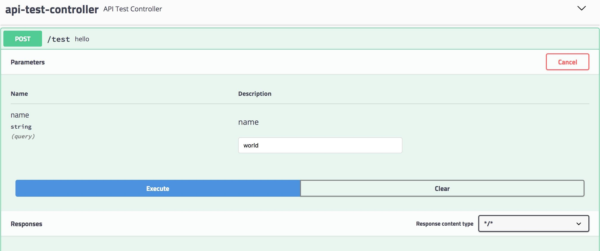

使用 Swagger 即可在直接在线感知接口变更，还能在 UI 上直接进行接口测试，不再依赖第三方组件。
如果参数中存在必输项，又当如何设置呢？此时，必须采用代码注解侵入的方式 @ApiImplicitParam
@ApiImplicitParam(required = true, name = "name", dataType = "String", value = "名字", defaultValue = "world",paramType="query")
/*name：参数名
value：参数的汉字说明、解释
required：参数是否必须传
paramType：参数放在哪个地方
· header --> 请求参数的获取：@RequestHeader
· query --> 请求参数的获取：@RequestParam
· path（用于 restful 接口）--> 请求参数的获取：@PathVariable
· body（不常用）
· form（不常用）
dataType：参数类型，默认 String，其它值 dataType="Integer"
defaultValue：参数的默认值
*/
常用的注解还如下几个，与旧版本的注解略有不同。
@Api //用在类上，说明该类的作用
@ApiOperation //用在方法上，增加方法说明
@ApiImplicitParams //用在方法上，包含一组参数说明
@ApiImplicitParam //用在 ApiImplicitParams 中，给方法入参增加说明
@ApiResponses //用于表示一组响应
@ApiResponse //用在@ApiResponses 中，用来表达一个错误的信息。【code：错误,message：信息,response:抛出异常类】
@ApiModel //用在实体类上，描述一个 model 的信息
@ApiModelProperty //用在实体类的参数上，描述一个参数的信息
加入以上注解后，测试类演变如下：
@RestController
@RequestMapping("test")
@Api("测试类")
public class APITestController {
@ApiOperation("问候")
@PostMapping("/hello")
@ApiImplicitParam(required = true, name = "name", dataType = "String", value = "名字", defaultValue = "world", paramType = "query")
public Hello hello(String name) {
Hello hello = new Hello();
hello.setName(name);
return hello;
}
}
@ApiModel
class Hello {
@ApiModelProperty("姓名")
private String name;
@ApiModelProperty("年龄")
private int age = 10;
public String getName() {
return name;
}
public void setName(String name) {
this.name = name;
}
public int getAge() {
return age;
}
public void setAge(int age) {
this.age = age;
}
}
重新打开http://localhost:10060/swagger-ui.html地址，发现参数已变成必输项，并且有默认值，输出响应值为 Hello 值对象的 JSON 数据格式。
4、生产环境屏蔽
使用 Swagger 大大提高接口的开发测试效率，如果不加以限制，暴露在生产环境中，那就是一个潜在的安全风险，所以在开发、测试环节正常使用，但要在生产环境中屏蔽 Swagger 的功能。上一篇中提及到多环境配置的问题，这里可以利用它来做文章。
实现方式很简单，在 Swagger 配置类增加注解 @Profile({ "dev", "test" }) ，标记只有在 dev 或 test 环境下才能正常使用 swagger 的接口调试功能，在生产环境下这个类是不会加载的，也就达到了生产环境下屏蔽的目标。启动后测试发现，swagger-ui.html 页面已不能正常加载接口进行测试。
@EnableSwagger2
@Configuration
@Profile({ "dev", "test" })
public class Swagger2Config {
}
注意：任何 @Componen t 或 @Configuration 注解的类都可以使用 @Profile 注解。
5、增加 token 统一参数
不少内部服务是需要用户登陆后才能正常使用的，比如用户签到领取积分，必须登陆后才正常使用，如果在每个接口中增加 token 参数，重复度太高，设计也不够优雅，一般情况下将 token 放到请求头中较为合适， Swagger 页面中如何显性增加输入 token 的位置就变成了我们的目标。
在 Swagger 配置类修改配置，完成后如下：
@EnableSwagger2
@Configuration
@Profile({ "dev", "test" })
public class Swagger2Config {
@Bean
public Docket createRestApi() {
ParameterBuilder parameterBuilder = new ParameterBuilder();
List<Parameter> parameters = new ArrayList<>();
parameterBuilder.modelRef(new ModelRef("String")).name("token").parameterType("header").description("token").defaultValue("").
//考虑到有些请求是不需要 token 的，此处不能置必填
required(false).build();
parameters.add(parameterBuilder.build());
return new Docket(DocumentationType.SWAGGER_2).apiInfo(apiInfo()).select()
.apis(RequestHandlerSelectors.any()).paths(PathSelectors.any()).build().globalOperationParameters(parameters).securitySchemes(getSecuritySchemes());
}
private ApiInfo apiInfo() {
return new ApiInfoBuilder()
.title("Member 会员模块接口层（基于 SpringBoot2+Swagger2）.")
.contact(new Contact("growithus", "https://backkoms.github.io/", "andy.deqiang@gmail.com"))
.version("1.0")
.description("").build();
}
private List<ApiKey> getSecuritySchemes() {
List<ApiKey> keys = new ArrayList<>();
ApiKey key = new ApiKey("token", "token", "header");
keys.add(key);
return keys;
}
}
启动项目后，打开 swagger-ui.html 页面，会发现多出一个 Authorize 的按钮，打开后输入有效 token 就实现登陆，其它接口直接使用即可，无须多次再输入 token （此时并未实现 token 验证，后续可通过 AOP 编程来验证 token 的有效性）。
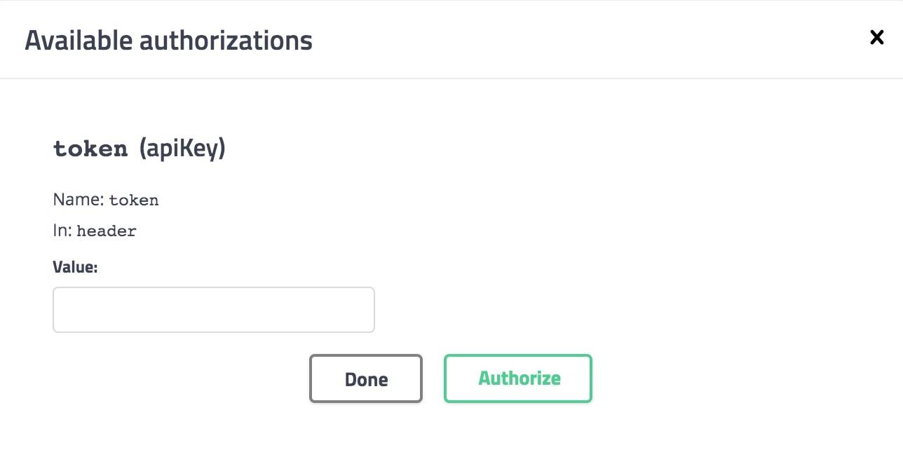

到此，Swagger 已经可以正常应用在项目中，后续直接 Copy 本示例的配置即可复用。
留下个思考题
每个子服务模块都会对外暴露接口，如果调用服务很多，将不得不面对接口页面来回切换的繁琐，有没有什么办法简化一下呢？
05 认识 Spring Cloud 与 Spring Cloud Alibaba 项目
前面我们已经粗略的将项目的骨架搭建完成，并初步引入一些基础支撑功能，为后续的开发打好基础。本篇将介绍 Spring Cloud 及 Spring Cloud Alibaba 两个项目，从理论角度作个整体性掌握，后续进入开发实战作好铺垫工作。 Spring Cloud Alibaba 是 Spring Cloud 的一个子项目，在介绍 Spring Cloud Alibaba 之前，先简单聊一聊 Spring Cloud 的情况。
Spring Cloud 介绍
Spring Cloud 官方文档地址：https://spring.io/projects/spring-cloud
它是由很多个组件共同组成的一套微服务技术体系解决方案，目前最新版本是 Hoxton，它的版本并不是我们常见的大版本、小版本的数字形式，Spring Cloud 的版本规划是按伦敦地铁站的名称先后顺序来规划的，目的是为了更好的管理每个 Spring Cloud 子项目的版本，避免自己的版本与子项目的版本号混淆，所以要特别注意两个项目的版本对应情况，以免实际应用中产生不必要的麻烦。
随着新版本的迭代更新，有些低版本的 Spring Cloud 的不建议再应用于生产，比如 Brixton 和 Angel 两个版本在 2017 年已经寿终正寝。  （ Spring Cloud 与 Spring Boot 的版本对应情况，来源于官网） 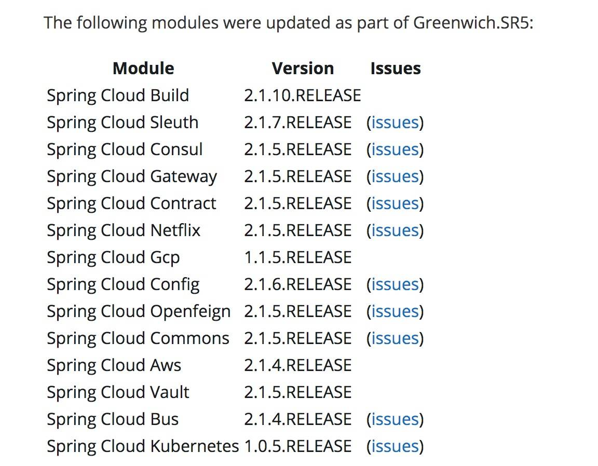 ( 某 Spring Cloud Greenwich 版本与子项目的版本对应情况 ) Spring Cloud 基于 Spring Boot 对外提供一整套的微服务架构体系的解决方案，包括配置管理、服务注册与服务发现、路由、端到端的调用、负载均衡、断路器、全局锁、分布式消息等，对于这些功能 Spring Cloud 提供了多种项目选择，可从官网的主要项目列表一窥端倪。 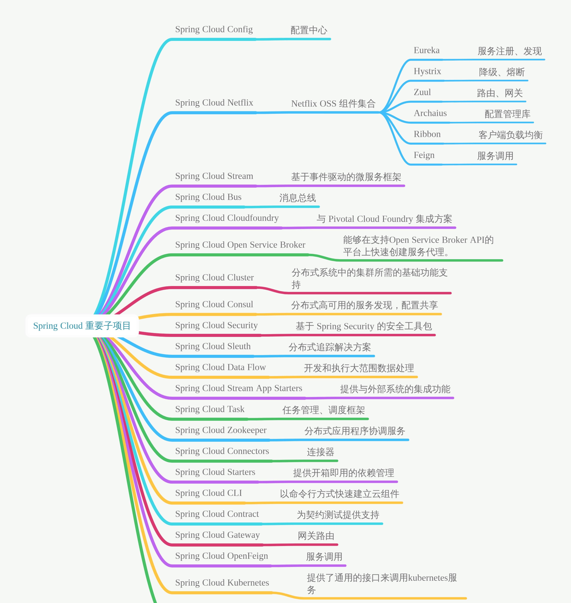 看上图有个比较突出的子项目： Spring Cloud netflix，由 Netflix 开发后来又并入 Spring Cloud 大家庭，它主要提供的模块包括：服务发现、断路器和监控、智能路由、客户端负载均衡等。但随着 Spring Cloud 的迭代，不少 Netflix 的组件进行了维护模式，最明显的莫过于 Spring Cloud Gateway 的推出来替代旧有的 Zuul 组件，有项目加入，也会有老旧项目退出舞台，这也是产品迭代的正常节奏。
（ Spring Cloud 与 Spring Boot 的版本对应情况，来源于官网） 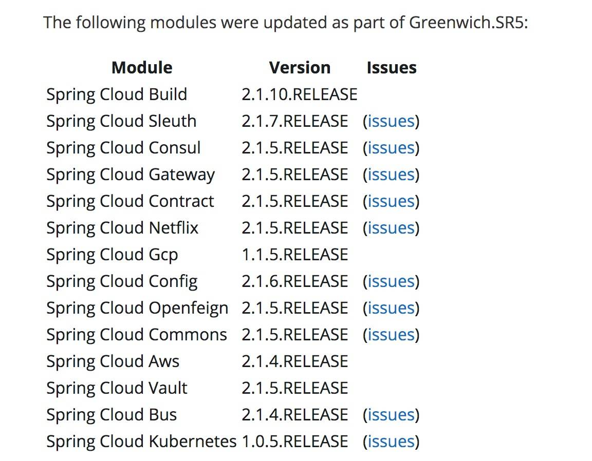 ( 某 Spring Cloud Greenwich 版本与子项目的版本对应情况 ) Spring Cloud 基于 Spring Boot 对外提供一整套的微服务架构体系的解决方案，包括配置管理、服务注册与服务发现、路由、端到端的调用、负载均衡、断路器、全局锁、分布式消息等，对于这些功能 Spring Cloud 提供了多种项目选择，可从官网的主要项目列表一窥端倪。 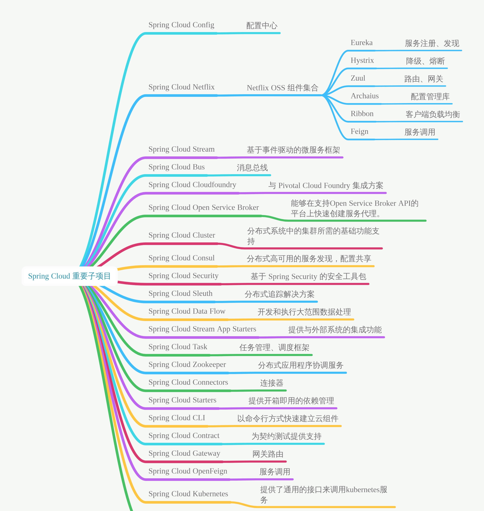 看上图有个比较突出的子项目： Spring Cloud netflix，由 Netflix 开发后来又并入 Spring Cloud 大家庭，它主要提供的模块包括：服务发现、断路器和监控、智能路由、客户端负载均衡等。但随着 Spring Cloud 的迭代，不少 Netflix 的组件进行了维护模式，最明显的莫过于 Spring Cloud Gateway 的推出来替代旧有的 Zuul 组件，有项目加入，也会有老旧项目退出舞台，这也是产品迭代的正常节奏。
这些子项目，极大的丰富了 Spring Cloud 在微服务领域中应用范围，几乎无需要借助外部组件，以一已之力打造全生态的微服务架构，并与外部基础运维组件更好的融合在一起。
下面再介绍一个近两年出现的一个新生项目 ： Spring Cloud Alibaba。
Spring Cloud Alibaba 介绍
官网地址：https://github.com/alibaba/spring-cloud-alibaba 它是 Spring Cloud 的一个子项目，致力于提供微服务开发的一站式解决方案，项目包含开发分布式应用服务的必需组件，方便开发者通过 Spring Cloud 编程模型轻松使用这些组件来开发分布式应用服务，只需要添加一些注解和少量配置，就可以将 Spring Cloud 应用接入阿里分布式应用解决方案，通过阿里中间件来迅速搭建分布式应用系统。 项目特性见下图：  包括一些关键组件：
包括一些关键组件：
- Sentinel：把流量作为切入点，从流量控制、熔断降级、系统负载保护等多个维度保护服务的稳定性。与 Netflix 的 Hystrix 组件类似，但实现方式上更为轻量。
- Nacos：一个更易于构建云原生应用的动态服务发现、配置管理和服务管理平台，同时具备了之前 Netflix Eureka 和 Spring Cloud Config 的功能，而且 UI 操作上更加人性化。
- RocketMQ：一款开源的分布式消息系统，基于高可用分布式集群技术，提供低延时的、高可靠的消息发布与订阅服务，目前已交由 Apache 组织维护。
- Dubbo：Apache Dubbo™ 是一款高性能 Java RPC 框架，自交由 Apache 组织孵化后，目前社区生态很活跃，产生形态越来越丰富。
- Seata：阿里巴巴开源产品，一个易于使用的高性能微服务分布式事务解决方案，由早期内部产品 Fescar 演变而来。
以上组件都是均是开源实现方案。下面提到的几个组件都是结合阿里云的产品形态完成的功能，后续的案例开发实战不引入商业产品，需要的小伙伴可以购买后拿到对应的 API 直接接入即可。
- Alibaba Cloud ACM：一款在分布式架构环境中对应用配置进行集中管理和推送的应用配置中心产品，与开源产品 Nacos 功能类似。
- Alibaba Cloud OSS: 阿里云对象存储服务（Object Storage Service，简称 OSS），是阿里云提供的海量、安全、低成本、高可靠的云存储服务。您可以在任何应用、任何时间、任何地点存储和访问任意类型的数据。
- Alibaba Cloud SchedulerX: 阿里中间件团队开发的一款分布式任务调度产品，提供秒级、精准、高可靠、高可用的定时（基于 Cron 表达式）任务调度服务。
- Alibaba Cloud SMS: 覆盖全球的短信服务，友好、高效、智能的互联化通讯能力，帮助企业迅速搭建客户触达通道。
在使用过程中，版本问题同样需要关注。 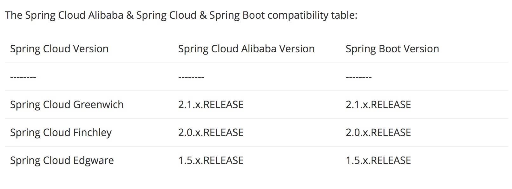（截图来源于 Spring 官网）
Spring Boot 介绍
不管是 Spring Cloud 还是 Spring Cloud Alibaba 项目，都是基于 Spring Boot ，所以先将 Spring Boot 掌握后，才能更好的应用这两个项目。提供的大量的 starter 组件，更是方便我们快速的应用相应的功能，由于其内置了应用容器( Tomcat ，Jetty ，Undertow )，无须再构建成 war 文件去部署，并遵从约定优于配置的原则，高效开发应用。
下面的链接是一份 Spring Boot 的全量参数配置，相信对你会有帮助。 https://docs.spring.io/spring-boot/docs/2.2.4.RELEASE/reference/html/appendix-application-properties.html
本篇介绍了课程中使用到的三个关键项目，这里只是做个简单的概念了解，后续将结合实际业务进入开发工作。采用 Spring Boot 构建项目，一般直接是 jar 的形式运行，但有些小伙伴还是有偏爱 war 包情况，哪用 Spring Boot 搭建的项目如何构建出 war 包呢？
06 服务多不易管理如何破——服务注册与发现
经过上一篇系统性的介绍 Spring Cloud 及 Spring Cloud Alibaba 项目，相信你已经对这两个项目有个整体直观的感受，本篇开始正式进入本课程的第二部分，一起进入业务的开发阶段。
服务调用问题
在分析业务需求时，其中有个简单的功能点：会员可以开通月卡，开通月卡的同时，需要增加相应的积分。开通月卡功能在会员服务模块维护，但增加积分功能在积分服务模块维护，这就涉及到两个模块间的服务调用问题。
单实例情况：可以采用点对点的 HTTP 直接调用，采用 IP + Port + 接口的形式进行。也可以对外暴露 WebService 服务供外部模块调用，但 WebService 的形式 显示比 HTTP的形式稍重一些，在实际的业务开发过程中，越来越的产品开发采用轻量级的 HTTP 协议进行数据交互。如果模块增多，将会形成蜘蛛网的形式，非常不利于开发维护。
多实例的情况：为应对服务的压力，采用多实例集群部署已成为简捷易用的解决方案。仅仅多实例部署后，直接面临一个问题，调用方如何知晓调用哪个实例，当实例运行失败后，如何转移到别的实例上去处理请求？如果采用了负载均衡，但往往是静态的，在服务不可用时，如果动态的更新负载均衡列表，保证调用者的正常调用呢？
面对以上两种情况，服务注册中心的需求迫在眉捷，将所有的服务统一的、动态的管理起来。
服务注册中心
服务注册中心作分布式服务框架的核心模块，可以看出要实现的功能是服务的注册、订阅，与之相应的功能是注销、通知这四个功能。
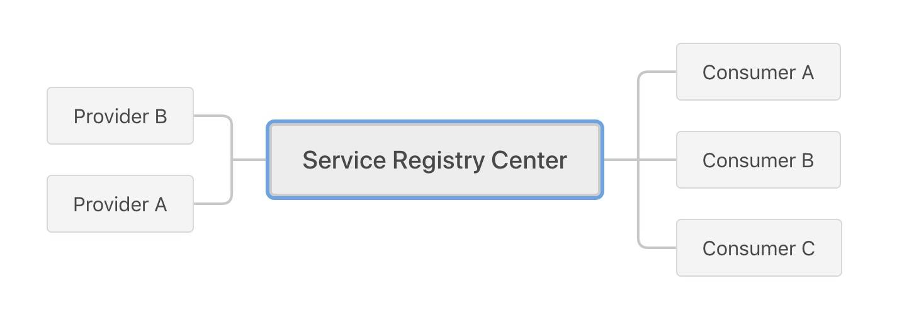
所有的服务都与注册中心发生连接，由注册中心统一配置管理，不再由实例自身直接调用。服务管理过程大致过程如下：
1、服务提供者启动时，将服务提供者的信息主动提交到服务注册中心进行服务注册。
2、服务调用者启动时，将服务提供者信息从注册中心下载到调用者本地，调用者从本地的服务提供者列表中，基于某种负载均衡策略选择一台服务实例发起远程调用，这是一个点到点调用的方式。
3、服务注册中心能够感知服务提供者某个实例下线，同时将该实例服务提供者信息从注册中心清除，并通知服务调用者集群中的每一个实例，告知服务调用者不再调用本实例，以免调用失败。
在开发过程中有很多服务注册中心的产品可供选择：
- Consul
- Zookeeper
- Etcd
- Eureka
- Nacos
比如 Dubbo 开发时经常配合 Zookeeper 使用，Spring Cloud 开发时会配合 Eureka 使用，社区都提供相当成熟的实施方案，本案例中服务注册中心采用 Nacos 来进行实战，其它注册中心的使用，有兴趣的朋友可以课下稍做研究，基本应用还是比较简单的。
Nacos 应用
官网地址：https://nacos.io/en-us/，由阿里开源，一个更易于构建云原生应用的动态服务发现、配置管理和服务管理平台，已经作为 Spring Cloud Alibaba 的一个子项目，更好与 Spring Cloud 融合在一起。在关 Nacos 的详细信息可打开官网进行了解，这里不做过多讲述。下面直接进入我们的应用一节。
安装 Nacos
本次采用 1.1.4 版本：nacos-server-1.1.4.tar.gz，（最新版本中已集成权限管理功能）本次测试将采用单机版部署，下载后解压，直接使用对应命令启动。
tar -xvf nacos-server-$version.tar.gz cd nacos/bin sh startup.sh -m standalone (standalone代表着单机模式运行，非集群模式)
启动日志如下：
appledeMacBook-Air:bin apple$ ./startup.sh -m standalone
/Library/Java/JavaVirtualMachines/jdk1.8.0_151.jdk/Contents/Home/bin/java -Xms512m -Xmx512m -Xmn256m -Dnacos.standalone=true -Djava.ext.dirs=/Library/Java/JavaVirtualMachines/jdk1.8.0_151.jdk/Contents/Home/jre/lib/ext:/Library/Java/JavaVirtualMachines/jdk1.8.0_151.jdk/Contents/Home/lib/ext:/Users/apple/software/nacos/plugins/cmdb:/Users/apple/software/nacos/plugins/mysql -Xloggc:/Users/apple/software/nacos/logs/nacos_gc.log -verbose:gc -XX:+PrintGCDetails -XX:+PrintGCDateStamps -XX:+PrintGCTimeStamps -XX:+UseGCLogFileRotation -XX:NumberOfGCLogFiles=10 -XX:GCLogFileSize=100M -Dnacos.home=/Users/apple/software/nacos -Dloader.path=/Users/apple/software/nacos/plugins/health -jar /Users/apple/software/nacos/target/nacos-server.jar --spring.config.location=classpath:/,classpath:/config/,file:./,file:./config/,file:/Users/apple/software/nacos/conf/ --logging.config=/Users/apple/software/nacos/conf/nacos-logback.xml --server.max-http-header-size=524288
nacos is starting with standalone
nacos is starting，you can check the /Users/apple/software/nacos/logs/start.out
日志末显示 "staring" 表示启动成功，打开http://127.0.0.1:8848/nacos，输入默认的用户名 nacos、密码 nacos，就可以看到如下界面。
可以看到 Nacos 的提供的主要功能已经在左侧菜单中标示出来，本次我们只用到服务管理功能，配置管理我们下个章节再讲。
关闭服务也很简单，执行提供的相应脚本即可。
Linux / Unix / Mac 平台下 sh shutdown.sh
Windows 平台下 cmd shutdown.cmd 或者双击 shutdown.cmd 运行文件。
到此，服务注册中心已经准备完毕，下面我们将服务注册到注册中心来。
服务中应用 Nacos
1、首先在父项目引入 Spring Cloud，Spring Cloud Alibaba jar 包的依赖，参考Spring Boot的引入方式。
考虑到三个项目之间的版本问题，本次采用 Greenwich.SR4 版本。
父项目 parking-project 的 pom.xml中增加如下配置：
<properties>
<spring-cloud.version>Greenwich.SR4</spring-cloud.version>
<spring-cloud-alibaba.version>2.1.0.RELEASE</spring-cloud-alibaba.version>
</properties>
<dependencyManagement>
<dependencies>
<dependency>
<groupId>org.springframework.cloud</groupId>
<artifactId>spring-cloud-dependencies</artifactId>
<version>${spring-cloud.version}</version>
<type>pom</type>
<scope>import</scope>
</dependency>
<dependency>
<groupId>com.alibaba.cloud</groupId>
<artifactId>spring-cloud-alibaba-dependencies</artifactId>
<version>${spring-cloud-alibaba.version}</version>
<type>pom</type>
<scope>import</scope>
</dependency>
</dependencies>
</dependencyManagement>
2、在子模块服务中引入 nacos jar 包，在子模块的 pom.xml 文件中增加如下配置
<dependency>
<groupId>org.springframework.cloud</groupId>
<artifactId>spring-cloud-starter-alibaba-nacos-discovery</artifactId>
<version>0.2.2.RELEASE</version>
</dependency>
<dependency>
<groupId>com.alibaba.nacos</groupId>
<artifactId>nacos-client</artifactId>
</dependency>
模块启动类中加入 @EnableDiscoveryClient 注解，这与使用 Eureka 时，采用注解配置是一致的，此注解基于 spring-cloud-commons ，是一种通用解决方案。
在对应的项目配置文件 application.properties 中增加配置项：
#必须填写application.name，否则服务无法注册到nacos
spring.application.name=card-service/member-service
spring.cloud.nacos.discovery.server-addr=127.0.0.1:8848
启动项目，通过nacos控制台检查服务是否注册到nacos，正常情况下能发现两个服务实例：
由于当前服务是由单机单实例的形式运行，图中标示出服务的集群数目为1、实例数为1、健康实例数为1，如果我们针对同一个服务，启动两实例，注册中心能即时的监控到，并展示出来。操作栏的"示例代码"链接，为我们提供了不同开发语言下的服务使用攻略，还是相当人性化的。在此也可以看出 Nacos 的未来肯定是跨语言的，不能局限在 Java 领域，这与微服务的语言无关性也是契合的。
这里做个测试，在 eclipse 项目 application.properties 配置文件中修改服务端口，保证同一个服务端口不冲突。
server.port=9090
启动3个实例，形成一个 card-service 服务的小集群，可以在控制台配置各个实例的权重，权重不同，在处理请求时响应的次数也会不同，实例的增多，大大提高了服务的响应效率。
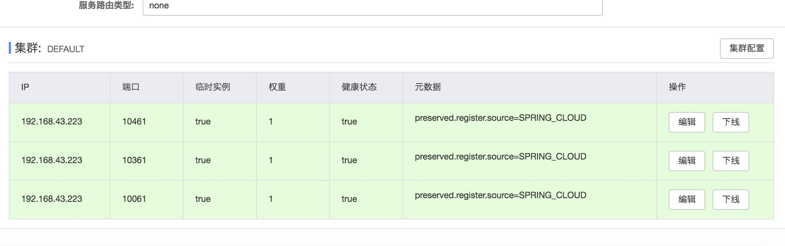
至此，我们已经可以将一个服务注册到服务注册中心来统一管理配置，后续的其它服务都可以参照此方式，做好基础配置，将服务统一注册到 Nacos 注册中心管理维护，为后续的服务间调用打下基础。
留个思考动手题
文中我们采用的是单机单实例部署 Nacos 服务，生产环境中肯定不能采用单机模式，会存在单点故障，你能搭建一个真实的多机器实例集群吗？
07 如何调用本业务模块外的服务——服务调用
上篇已经引入 Nacos 基础组件，完成了服务注册与发现机制，可以将所有服务统一的管理配置起来，方便服务间调用。本篇将结合需求点，进行服务间调用，完成功能开发。
几种服务调用方式
服务间调用常见的两种方式：RPC 与 HTTP，RPC 全称 Remote Produce Call 远程过程调用，速度快，效率高，早期的 WebService 接口，现在热门的 Dubbo、gRPC 、Thrift、Motan 等，都是 RPC 的典型代表，有兴趣的小伙伴可以查找相关的资料，深入了解下。
HTTP 协议（HyperText Transfer Protocol，超文本传输协议）是因特网上应用最为广泛的一种网络传输协议，所有的 WWW 文件都必须遵守这个标准。对服务的提供者和调用方没有任何语言限定，更符合微服务语言无关的理念。时下热门的 RESTful 形式的开发方式，也是通过 HTTP 协议来实现的。
本次案例更多的考虑到简捷性以及 Spring Cloud 的基础特性，决定采用 HTTP 的形式，进行接口交互，完成服务间的调用工作。Spring Cloud 体系下常用的调用方式有：RestTemplate 、 Ribbon 和 Feign 这三种。
RestTemplate，是 Spring 提供的用于访问 Rest 服务的客户端，RestTemplate 提供了多种便捷访问远程 Http 服务的方法，能够大大提高客户端的编写效率。
Ribbon，由 Netflix 出品，更为人熟知的作用是客户端的 Load Balance（负载均衡）。
Feign，同样由 Netflix 出品，是一个更加方便的 HTTP 客户端，用起来就像调用本地方法，完全感觉不到是调用的远程方法。内部也使用了 Ribbon 来做负载均衡功能。
由于 Ribbon 已经融合在 Feign 中，下面就只介绍 RestTemplate 和 Feign 的使用方法。
RestTemplate 的应用
功能需求：会员绑定手机号时，同时给其增加相应的积分。会员绑定手机号在会员服务中完成，增加会员积分在积分服务中完成。请求路径是客户端->会员服务->积分服务。
响应客户端请求的方法
@RequestMapping(value = "/bindMobileUseRestTemplate", method = RequestMethod.POST)
public CommonResult<Integer> bindMobileUseRestTemplate(String json) throws BusinessException{
CommonResult<Integer> result = new CommonResult<>();
log.info("bind mobile param = " + json);
int rtn = memberService.bindMobileUseRestTemplate(json);
result.setRespData(rtn);
return result;
}
做好 RestTemplate 的配置工作，否则无法正常使用。
@Configuration
public class RestTemplateConfig {
@Bean
public RestTemplate restTemplate(ClientHttpRequestFactory simpleClientHttpRequestFactory){
return new RestTemplate(simpleClientHttpRequestFactory);
}
@Bean
public ClientHttpRequestFactory simpleClientHttpRequestFactory(){
SimpleClientHttpRequestFactory factory = new SimpleClientHttpRequestFactory();
return factory;
}
}
在 MemberService 中处理请求，逻辑如下：
@Autowired
RestTemplate restTemplate;
@Override
public int bindMobileUseRestTemplate(String json) throws BusinessException {
Member member = JSONObject.parseObject(json, Member.class);
int rtn = memberMapper.insertSelective(member);
// invoke another service
if (rtn > 0) {
MemberCard card = new MemberCard();
card.setMemberId(member.getId());
card.setCurQty("50");
MultiValueMap<String, String> requestMap = new LinkedMultiValueMap<String, String>();
requestMap.add("json", JSONObject.toJSONString(card).toString());
HttpEntity<MultiValueMap<String, String>> requestEntity = new HttpEntity<MultiValueMap<String, String>>(
requestMap, null);
String jsonResult = restTemplate.postForObject("http://localhost:10461/card/addCard", requestEntity,
String.class);
log.info("creata member card suc!" + jsonResult);
}
return rtn;
}
采用 postForObject 形式请求积分服务中的生成积分记录的方法，并传递相应参数。积分子服务中方法比较简单，接受调用请求的方法：
@RequestMapping("card")
@RestController
@Slf4j
public class MemberCardController {
@Autowired
MemberCardService cardService;
@RequestMapping(value = "/addCard", method = RequestMethod.POST)
public CommonResult<Integer> addCard(String json) throws BusinessException {
log.info("eclise service example: begin add member card = " + json);
//log.info("jar service example: begin add member card = " + json);
CommonResult<Integer> result = new CommonResult<>();
int rtn = cardService.addMemberCard(json);
result.setRespData(rtn);
return result;
}
}
实际业务逻辑处理部分由 MemberCardService 接口中完成。
@Service
@Slf4j
public class MemberCardServiceImpl implements MemberCardService {
@Autowired
MemberCardMapper cardMapper;
@Override
public int addMemberCard(String json) throws BusinessException {
MemberCard card = JSONObject.parseObject(json,MemberCard.class);
log.info("add member card " +json);
return cardMapper.insertSelective(card);
}
}
分别启动会员服务、积分服务两个项目，通过 Swagger 接口 UI 作一个简单测试。
RestTemplate 默认依赖 JDK 提供 HTTP 连接的能力，针对 HTTP 请求，提供了不同的方法可供使用，相对于原生的 HTTP 请求是一个进步，但经过上面的代码使用，发现还是不够优雅。能不能像调用本地接口一样，调用第三方的服务呢？下面引入 Feign 的应用，绝对让你喜欢上 Feign 的调用方式。
Feign 的应用
Fegin 的调用最大的便利之处在于，屏蔽底层的连接逻辑，让你可以像调用本地接口一样调用第三方服务，代码量更少更优雅。当然，必须在服务注册中心的协调下才能正常完成服务调用，而 RestTemplate 并不关心服务注册心是否正常运行。
引入 Feign
Feign 是由 Netflix 开发出来的另外一种实现负载均衡的开源框架，它封装了 Ribbon 和 RestTemplate，实现了 WebService 的面向接口编程，进一步的减低了项目的耦合度，因为它封装了 Riboon 和 RestTemplate ，所以它具有这两种框架的功能。 在会员模块的 pom.xml 中添加 jar 引用
<dependency>
<groupId>org.springframework.cloud</groupId>
<artifactId>spring-cloud-starter-openfeign</artifactId>
</dependency>
在模块启动类中增加 @EnableFeignClients 注解，才能正常使用 Feign 相关功能，启动时开启对 ＠FeignClient 注解的包扫描，并且扫描到相关的接口客户端。
//#client 目录为 feign 接口所在目录
@EnableFeignClients(basePackages = "com.mall.parking.member.client")
前端请求响应方法
@RequestMapping(value = "/bindMobile", method = RequestMethod.POST)
public CommonResult<Integer> bindMobile(String json) throws BusinessException{
CommonResult<Integer> result = new CommonResult<>();
log.info("bind mobile param = " + json);
int rtn = memberService.bindMobile(json);
result.setRespData(rtn);
return result;
}
接口编写
编写 MemberCardClient，与积分服务调用时使用，其中的接口与积分服务中的相关方法实行一对一绑定。
@FeignClient(value = "card-service")
public interface MemberCardClient {
@RequestMapping(value = "/card/addCard", method = RequestMethod.POST)
public CommonResult<Integer> addCard(@RequestParam(value = "json") String json) throws BusinessException;
@RequestMapping(value = "/card/updateCard", method = RequestMethod.POST)
public CommonResult<Integer> updateCard(@RequestParam(value = "json") String json) throws BusinessException;
}
注意是 RequestParam 不是 PathVariable ， PathVariable 是从路径中取值，RequestParam 是从参数中取值，用法不一。
使用时，直接 @Autowired 像采用本地接口一样使用即可，至此完成代码的编写，下面再来验证逻辑的准确性。
- 保证 nacos-server 启动中
- 分别启动 parking-member，parking-card 子服务
- 通过 parking-member 的 swagger-ui 界面，调用会员绑定手机号接口(或采用 PostMan 工具)
正常情况下，park-member，park-card 两个库中数据表均有数据生成。
那么，fallback 何时起作用呢？很好验证，当积分服务关闭后，再重新调用积分服务中的生成积分方法，会发现直接调用的是 MemberCardServiceFallback 中的方法，直接响应给调用方，避免了调用超时时，长时间的等待。
负载均衡
前文已经提到 Feign 中已经默认集成了 Ribbon 功能，所以可以通过 Feign 直接实现负载均衡。启动两个 card-service 实例，打开 Nacos 控制台，发现实例已经注册成功。再通过 swagger-ui 或 PostMan 工具访问多访问几次 bindMobile 方法，通过控制台日志输出，可以发现请求在两个 card-service 实例中轮番执行。
如何改变默认的负载均衡策略呢？先弄清楚 Ribbon 提供了几种负载策略：随机、轮询、重试、响应时间权重和最空闲连接，分别对应如下
com.netflix.loadbalancer.RandomRule com.netflix.loadbalancer.RoundRobinRule com.netflix.loadbalancer.RetryRule com.netflix.loadbalancer.WeightedResponseTimeRule com.netflix.loadbalancer.BestAvailableRule
由于是客户端负载均衡，必须配置在服务调用者项目中增加如下配置来达到调整的目的。
card-service: ribbon: NFLoadBalancerRuleClassName: com.netflix.loadbalancer.RandomRule
也可以通过 Java 代码的形式调整，放置在项目启动类的下面
@Bean
public IRule ribbonRule() {
// 负载均衡规则，改为随机
return new RandomRule();
// return new BestAvailableRule();
// return new WeightedResponseTimeRule();
// return new RoundRobinRule();
// return new RetryRule();
}
至此，我们通过一个"会员绑定手机号，并增加会员相应积分"的功能，通过两种方式完成一个正常的服务调用，并测试了客户端负载均衡的配置及使用。
课外作业
掌握了服务间调用后，在不考虑非业务功能的情况下，基本可以将本案例中大部分业务逻辑代码编写完成，可参照自己拆解的用户故事，或者主要的业务流程图，现在就动手，把代码完善起来吧。
服务调用是微服务间频繁使用的功能，选定一个简捷的调用方式尤其重要。照例留下一道思考题吧：本文用到了客户端负载均衡技术，它与我们时常提到的负载均衡技术有什么不同吗？
08 服务响应慢或服务不可用怎么办——快速失败与服务降级
上个章节已经基于 OpenFeign 完成了微服务间的调用，并且在多实例集群的情况下，通过调整负载策略很好应对并发调用。网络产品开发时，网络有时可能是不可用的，服务亦有可能是不可用的，当调用服务响应慢或不可用时，大量的请求积压，会成为压倒系统骆驼的最后一根稻草。这种情况下，我们如何应对呢？本章节就带你走近 Hystrix 组件。
什么是 Hystrix
它是分布式系统提供的一个低时延容错机制的基础组件，提供限流、服务降级、系统熔断保护、快速失败等多个维度来保障微服务的稳定性。Hystrix 也是 Netflix 套件的一部分。
遗憾的是 1.5.18 版本之后进入了维护模式，官方提供了替代方案：resilience4j，本测试采用的 Hystrix 终极版，需要更高版本的话，建议还是采用 resilience4j ，这里不作过多介绍，后续将替换成另一个重要组件——Sentinel 来替代 Hystrix。
引入 Hystrix
采用 starter 的方式引入
<dependency>
<groupId>org.springframework.cloud</groupId>
<artifactId>spring-cloud-starter-netflix-hystrix</artifactId>
</dependency>
feignClient 中已经默认集成了断路器的功能，但是需要在配置文件中打开，才能开启。在 application.properties 中打开 hystrix 开关：
#hystrix enable
feign.hystrix.enabled=true
重新回到之前的 FeignClient 代码，在注解中增加 fallback 属性值，添加相应的 fallback 调用类。
@FeignClient(value = "card-service", fallback = MemberCardServiceFallback.class)
public interface MemberCardClient {
@RequestMapping(value = "/card/addCard", method = RequestMethod.POST)
public CommonResult<Integer> addCard(@RequestParam(value = "json") String json) throws BusinessException;
@RequestMapping(value = "/card/updateCard", method = RequestMethod.POST)
public CommonResult<Integer> updateCard(@RequestParam(value = "json") String json) throws BusinessException;
}
编写 MemberCardServiceFallback 方法，就是一个普通的服务实现类，增加了@Component 注解。
@Component
@Slf4j
public class MemberCardServiceFallback implements MemberCardClient {
@Override
public CommonResult<Integer> addCard(String json) throws BusinessException {
CommonResult<Integer> result = new CommonResult<>("parking-card service not available! ");
log.warn("parking-card service not available! ");
return result;
}
@Override
public CommonResult<Integer> updateCard(String json) throws BusinessException {
CommonResult<Integer> result = new CommonResult<>("parking-card service not available! ");
log.warn("parking-card service not available! ");
return result;
}
}
测试 Hystrix
上一章节中按正常流程已经将功能完成：会员开通后，积分生成，这里将不启动"积分子服务"，看看会是什么效果。(默认服务注册中心已经启动，这里及后续演示过程中不再专门提出)
- 只启动 parking-member 一个子服务
- 打开 parking-member 子服务的 swagger-ui 界面，调用会员绑定手机号接口(或采用 PostMan 工具)
正常情况下会直接调用 fallback 接口，快速失败，响应调用方。
此时将积分模块服务启动，再次发起调用，正确情况下已不再调用 fallback 方法，而是正常调用积分服务接口，如下图所示：
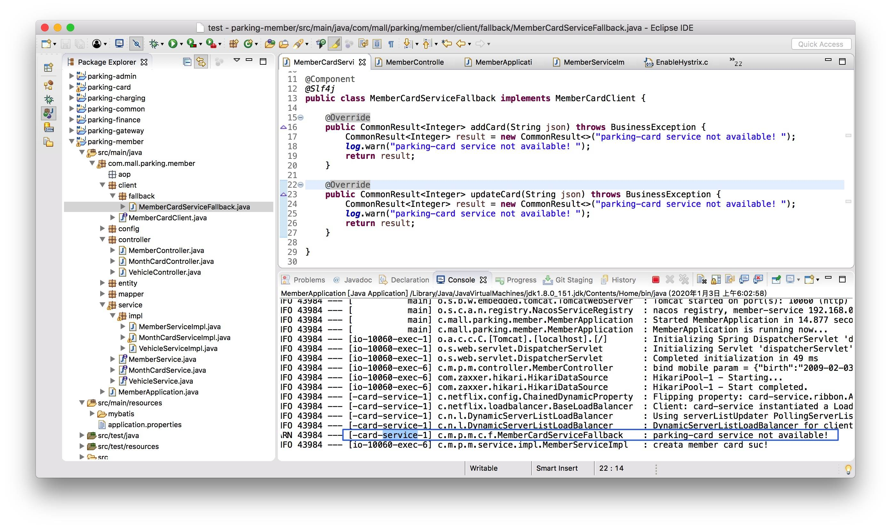

图形化监控 Hystrix
通过上面的应用，我们已经可以将 Hystrix 正常的集成到功能开发过程中，但究竟 Hystrix 实时运行状态是什么样的呢？有没有什么办法可以看到 Hystrix 的各项指标呢？这里我们引入 Hystrix Dashboard (仪表盘)，通过 UI 的方式，快速的查看运行状况。
新增仪盘表项目
我们在 parking-base-serv 项目下，新建一个名为 parking-hystrix-dashboard Spring Boot 子工程，专门来做 Hystrix 的仪表盘监控。修改 pom.xml 文件，添加相关依赖：
<dependency>
<groupId>org.springframework.cloud</groupId>
<artifactId>spring-cloud-starter-hystrix-dashboard</artifactId>
</dependency>
<dependency>
<groupId>org.springframework.boot</groupId>
<artifactId>spring-boot-starter-actuator</artifactId>
</dependency>
在项目启动类中增加 @EnableHystrixDashboard 注解，开启仪表盘功能
@SpringBootApplication
@EnableDiscoveryClient
@EnableHystrixDashboard
public class ParkingHystrixDashboardApplication {
public static void main(String[] args) {
SpringApplication.run(ParkingHystrixDashboardApplication.class, args);
}
}
启动项目，打开地址：http://localhost:10093/hystrix，出现如下界面表明正常运行。
调整被监控项目
会员服务中在调用积分服务接口的过程中，采用 Feign 的方式发起远程调用，同时实现了 fallback 服务降级、快速失败功能，本次要监控的主要目标就是此功能。
在 parking-member 项目 config 代码包下，增加 Hystrix 数据流的配置：
@Configuration
public class HystrixConfig {
@Bean
public ServletRegistrationBean<HystrixMetricsStreamServlet> getServlet() {
HystrixMetricsStreamServlet servlet = new HystrixMetricsStreamServlet();
ServletRegistrationBean<HystrixMetricsStreamServlet> bean = new ServletRegistrationBean<>(servlet);
bean.addUrlMappings("/hystrix.stream");
bean.setName("HystrixMetricsStreamServlet");
return bean;
}
}
启动后，打开本项目的 Hystrix 数据获取地址：http://localhost:10060/hystrix.stream，初始状态，页面会不停的输出 ping 空值的情况，只有采用 Hystrix 当相关功能被请求时，才能正常的输出数据 JSON 格式数据，如截图所示：
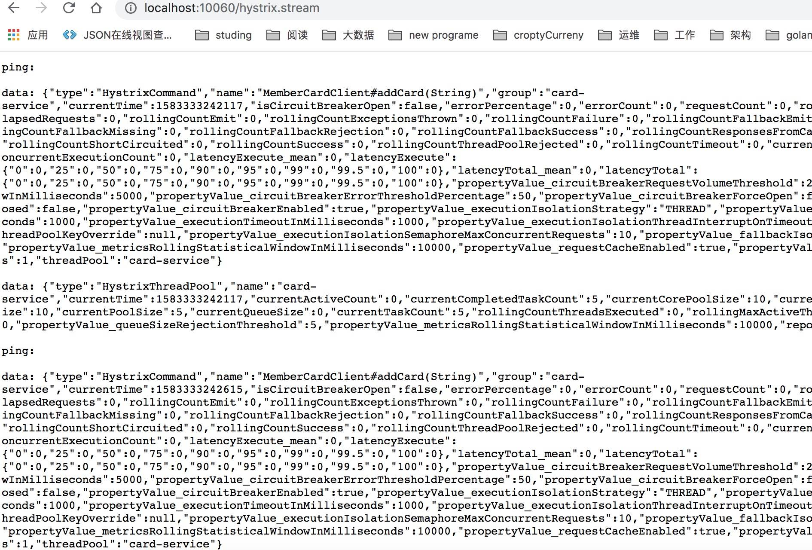
上图输出的结果不够友好，没有办法直观的分析 Hystrix 组件的应用情况，此时我们的仪表盘项目就派上用场。
仪表盘解读
将地址 http://localhost:10060/hystrix.stream 输入到 dashboard 页面中数据抓取地址栏中，Delay 项可采用默认值，Titile 项可以新取一个名字，便于我们能够识别。同样的，相关功能只有被执行过，仪表盘中才能正常的显示，下图所示是由于积分服务未启动，会员服务直接调用导致全部失败的情况。

关于图表简单解读下：
- 左上角的圆圈表示服务的健康程度，从绿色、黄色、橙色、红色递减
- 曲线用来记录 2 分钟内流量的相对变化，观察流量的上升和下降趋势。
- 左侧框中的数字与右上数字含义是一一对应
- Host 与 Cluster 记录的是服务请求频率
- 再下面的几个 *th 标签表示百分位的延迟情况
(恢复积分服务后，高频次重新调用功能，发现请求是正常的，圆圈也变大)
本案例中仅编写了一个 Hystrix 的应用情况，如果服务中多处使用的话，仪表盘的展现会更加丰富，从页面上可以清晰监控到服务的压力情况、运转情况等等，为运维工作提供重要的参照依据。
(图中参数展现略有不同，图片来源于https://github.com/Netflix-Skunkworks/hystrix-dashboard)
通过上文的学习实践，相信你对 Hystrix 断路器的应用有了初步的概念，以及如何应用到项目中去，为我们的服务提供保驾护航。
留一个思考题
文中仅展示了一个模块服务的断路器的应用，如果是多个服务需要监控怎么办？同时打开多个仪表盘页面吗？你有没有什么更好的办法？
09 热更新一样更新服务的参数配置——分布式配置中心
几乎每个项目中都涉及到配置参数或配置文件，如何避免硬编码，通过代码外的配置，来提高可变参数的安全性、时效性，弹性化配置显得尤其重要。本篇就带你一起聊聊软件项目的配置问题，特别是微服务架构风格下的配置问题。
参数配置的演变
早期软件开发时，当然也包括现在某些小伙伴开发时，存在硬编码的情况，将一些可变参数写死在代码中。弊端也显而易见，当参数变更时，必须重新构建编译代码，维护成本相当高。
后来，业界形成规则，将一些可变参数抽取出来，形成多种格式的配置文件，如 properties、yml、json、xml 等等，将这些参数集中管理起来，发生变更时，只需要更新配置文件即可，不再需要重新编码代码、构建发布代码块，明显比硬编码强大太。弊端也有：
- 关键信息暴露在配置文件中，安全性低。
- 配置文件变更后，服务也面临重启的问题
再接着出现了分布式配置，将配置参数从项目中解耦出来，项目使用时，及时向配置中心获取或配置中心变更时向项目中推送，优势很明显：
- 省去了关键信息暴露的问题
- 配置参数无须与代码模块耦合在一起，可以灵活的管理权限，安全性更高
- 配置可以做到实时生效，对一些规则复杂的代码场景很有帮助
- 面对多环境部署时，能够轻松应对
微服务场景下，我们也更倾向于采用分布式配置中心的模式，来管理配置，当服务实例增多时，完全不用担心配置变得复杂。
开源组件介绍
Spring Cloud Config 就是 Spring Cloud 项目下的分布式配置组件，当然其自身是没有办法完成配置功能的，需要借助 Git 或 MQ 等组件来共同完成，复杂度略高。
业内不少公司开源不少分布式配置组件，比如携程的 Apollo（阿波罗），淘宝的 Diamond，百度的 Disconf，360 的 QConf ，阿里的 Nacos 等等，也可以基于 Zookeeper 等组件进行开发完成，技术选型产品还是比较多的。
本案例中采用 Nacos 作为选型，为什么选 Nacos ？首先是 Spring Cloud Alibaba 项目下的一员，与生态贴合紧密 。其次，Nacos 作为服务注册中心，已经在项目使用，它兼有配置中心的功能，无须额外引入第三方组件，增加系统复杂度，一个组件完成 Spring Cloud Config 和 Eureka 两个组件的功能。
Nacos 在基础层面通过DataId和 Group来定位唯一的配置项，支持不同的配置格式，如 JSON , TEXT , YMAL 等等，不同的格式，遵从各自的语法规则即可。
Nacos 配置管理
拿用户手机号绑定系统的功能为例，商场做促销活动，当天用户绑定手机号，并开通月卡，积分赠送翻倍，还有机会抽取活动大礼包，活动结束，恢复成原样。这是经常见到的玩法吧。
在 parking-member 项目的 pom.xml 中增加 jar 引入，不过前期我们已经应用到了 nacos 的服务注册中心功能，已经被引入到项目中去。
<dependency>
<groupId>com.alibaba.cloud</groupId>
<artifactId>spring-cloud-starter-alibaba-nacos-config</artifactId>
</dependency>
下面就将将与 nacos 的连接配置进去，由于 Spring Boot 项目中存在两种配置文件，一种是 application 的配置，一种是 bootstrap 的配置，究竟配置在哪个文件中呢？我们先来看 bootstrap 与 application 有什么区别。
nacos 与 spring-cloud-config 配置上保持一致，必须将采用 bootstrap.yml/properties 文件，优先加载该配置，填写在 application.properties/yml 中无效。
bootstrap.properties
spring.cloud.nacos.config.server-addr=127.0.0.1:8848
spring.profiles.active=dev
spring.application.name=member-service
spring.cloud.nacos.config.shared-data-ids=${spring.application.name}-${spring.profiles.active}.properties
spring.cloud.nacos.config.refreshable-dataids=${spring.application.name}-${spring.profiles.active}.properties
此时采用 spring.application.name−spring.application.name−{spring.profiles.active}动态配置的原因，是为后期进行多环境构建做准备，当然也可以直接写死 nacos 配置文件，但这样更不利于扩展维护。refreshable-dataids 配置项为非选必须，但如果缺失，所有的 nacos 配置项将不会被自动刷新，必须采用另外的方式刷新配置项，才能正常应用到服务中。
代码中使用配置项
打开会员绑定手机号的方法处，定义一个内部变量，接受配置中心的参数值。可以直接采用 Spring 的 [@Value ]方式取值即可，在 Controller 层或是 Service 层都可以使用，类中必须采用 [@RefreshScope ]注解，才能将值实时同步过来。
在 nacos 中定义两个配置项 onoffbindmobile 和 onbindmobile_mulriple，分别代表一个开关和积分倍数。同时定义两个局部变量接受 nacos 中两个配置项的值。
即使参数外部化配置后，代码中也必须预留出位置，供代码逻辑进行切换，也就是事先这个逻辑是预置进去的，是否执行逻辑，逻辑中相关分支等等，完全看配置参数的值。 比如注册时，往往会夹杂一些送积分、注册送优惠券及多大面额的优惠券，注册有机会抽奖等，等一个活动结束自动切换到另一个活动，如果事先未预置进去，代码是没有办法执行这个逻辑的。
整体代码如下：
@Value("${onoff_bindmobile}")
private boolean onoffBindmobile;
@Value("${on_bindmobile_mulriple}")
private int onBindmobileMulriple;
@Override
public int bindMobile(String json) throws BusinessException{
Member member = JSONObject.parseObject(json, Member.class);
int rtn = memberMapper.insertSelective(member);
//invoke another service
if (rtn > 0) {
MemberCard card = new MemberCard();
card.setMemberId(member.getId());
//判定开关是否打开
if (onoffBindmobile) {
//special logic
card.setCurQty("" +50 * onBindmobileMulriple);
}else {
//normal logic
card.setCurQty("50");
}
memberCardClient.addCard(JSONObject.toJSONString(card));
log.info("creata member card suc!");
}
return rtn;
}
Nacos 中配置参数项
bootstrap 配置文件中已经做了约定：配置项的 Key 与 Value 值的格式为 properties 文件，打开 nacos 控制台，进行"配置管理"->"配置列表"页面，点击右上角"新增"。
输入上文的约定的两个配置项，配置项可以应对多环境配置要求，在其它环境，建立对应的配置即可，输入 Data ID， 比如 member-service-prd.properties 或者 member-service-uat.properties，Group 采用默认值即可，当然如果需要分组的话，需要定义 Group 值，保存即可。
配置项的 value 类型需要与代码中约定的一致，否则解析时会出错。
若要变更配置项的值，修改后，发布即可，可以看到配置项的值是立即生效的。主要是借助于上文中提到的 [@RefreshScope ]注解，与 bootstrap 配置文件中 spring.cloud.nacos.config.refreshable-dataids 配置来完成的。如果缺失其中的一个，配置项生效只有重启应用，这与我们打造程序的易维护性、健壮性是相违背的。
可以将相应的数据库连接、第三方应用接入的密钥、经常发生变更的参数项都填充到配置中心，借助配置中心自身的权限控制，可以确保敏感项不泄露，同时针对不同的部署环境也可以很好的做好配置隔离。
至此，基于 Nacos 的配置中心配置完成，依照此配置，可以正常的迁移到其它服务中去。留下个思考题，在项目中采用类似 properties 文件的外部化配置，还是比较常见的，如何确保当中的关键信息不被泄漏呢，比如数据库的用户名、密码，第三方核心的 Key 等等。
10 如何高效读取计费规则等热数据——分布式缓存
前几章节主要聚集于会员与积分模块的业务功能，引领大家尝试了服务维护、配置中心、断路器、服务调用等常见的功能点，本章节开始进入核心业务模块——停车计费，有两块数据曝光率特别高：进场前的可用车位数和计费规则，几乎每辆车都进出场都用到，这部分俗称为热数据：经常会用到。读关系库很明显不是最优解，引入缓存才是王道。
分布式缓存
这里仅讨论软件服务端的缓存，不涉及硬件部分。缓存作为互联网分布式开发两大杀器之一（另一个是消息队列），应用场景相当广泛，遇到高并发、高性能的案例，几乎都能看到缓存的身影。

从应用与缓存的结合角度来区分可以分为本地缓存和分布式缓存。
我们经常用 Tomcat 作为应用服务，用户的 session 会话存储，其实就是缓存，只不过是本地缓存，如果需要实现跨 Tomcat 的会话应用，还需要其它组件的配合。Java 中我们应经用到的 HashMap 或者 ConcurrentHashMap 两个对象存储，也是本地缓存的一种形式。Ehcache 和 Google Guava Cache 这两个组件也都能实现本地缓存。单体应用中应用的比较多，优势很明显，访问速度极快；劣势也很明显，不能跨实例，容量有限制。
分布式场景下，本地缓存的劣势表现的更为突出，与之对应的分布式缓存则更能胜任这个角色。软件应用与缓存分离，多个应用间可以共享缓存，容量扩充相对简便。有两个开源分布式缓存产品：memcached 和 Redis。简单介绍下这两个产品。
memcached 出现比较早的缓存产品，只支持基础的 key-value 键值存储，数据结构类型比较单一，不提供持久化功能，发生故障重启后无法恢复，它本身没有成功的分布式解决方案，需要借助于其它组件来完成。Redis 的出现，直接碾压 memcached ，市场占有率节节攀升。
Redis 在高效提供缓存的同时，也支持持久化，在故障恢复时数据得已保留恢复。支持的数据类型更为丰富，如 string , list , set , sorted set , hash 等，Redis 自身提供集群方案，也可以通过第三方组件实现，比如 Twemproxy 或者 Codis 等等，在实际的产品应用中占有很大的比重。另外 Redis 的客户端资源相当丰富，支持近 50 种开发语言。
本案例中的热数据采用 Redis 来进行存储，在更复杂的业务功能时，可以采用本地缓存与分布式缓存进行混合使用。
Redis 应用
Redis 安装配置
官网地址：https://redis.io/，当前最新版已到 5.0.7，Redis 提供了丰富了数据类型、功能特性，基本能够覆盖日常开发运维使用，简单的命令行使学习曲线极低，可以快速上手实践。提供了丰富语言客户端，供使用者快速的集成到项目中。
(图片来源于 redis 官网，https://redis.io/clients)
下面来介绍如何安装 redis：
- 下载编译过的二进制安装包，本案例中使用的版本是 4.0.11。
$ wget http://download.redis.io/releases/redis-4.0.11.tar.gz
$ tar xzf redis-4.0.11.tar.gz
$ cd redis-4.0.11
$ make
- 配置，默认情况下 redis 的的配置安全性较弱，无密码配置的，端口易扫描。若要修改默认配置，可修改 redis.conf 文件。
可以修改默认端口 6379
port 16479
redis 默认情况下不是以后台程序的形式运行，需要将开关打开
daemonize yes
打开需要密码开发，设置密码
requirepass zxcvbnm,./
- 启动 redis
启动时，加载配置文件
appledeMacBook-Air:redis-4.0.11 apple$ src/redis-server redis.conf 59464:C 07 Mar 10:38:15.284 # oO0OoO0OoO0Oo Redis is starting oO0OoO0OoO0Oo 59464:C 07 Mar 10:38:15.285 # Redis version=4.0.11, bits=64, commit=00000000, modified=0, pid=59464, just started 59464:C 07 Mar 10:38:15.285 # Configuration loaded
命令行测试
appledeMacBook-Air:redis-4.0.11 apple$ src/redis-cli -p 16479
必须执行 auth 命令，输入密码，否则无法正常使用命令
127.0.0.1:16479> auth zxcvbnm,./ OK 127.0.0.1:16479> dbsize (integer) 51 127.0.0.1:16479>
至此，redis 服务安装完成，下面就可以将缓存功能集成到项目中去。有小伙伴可能会说通过命令方式操作 redis 远不如图形化管理界面直观，活跃的同学们早已提供对应的工具供大家使用，比如 Redis Manager 等。
集成 Spring Data Redis
此次实践采用 Spring Data 项目家族中的 Spring Data Redis 组件与 Redis Server 进行交互通信，与 Spring Boot 项目集成时，采用 starter 的方式进行。
Spring Boot Data Redis 依赖于 Jedis 或 lettuce 客户端，基于 Spring Boot 提供一套与客户端无关的 API ，可以轻松将一个 redis 切换到另一个客户端，而不需要修改业务代码。
计费业务对应的项目模块是 parking-charging，在 pom.xml 文件中引入对应的 jar，这里为什么没有 version 呢，其实已经在 spring-boot-dependencies 配置中约定，此处无须再特殊配置。
<!-- 鼠标放置上面有弹出信息提示：The managed version is 2.1.11.RELEASE The artifact is managed in org.springframework.boot:spring-boot-dependencies:2.1.11.RELEASE -->
<dependency>
<groupId>org.springframework.boot</groupId>
<artifactId>spring-boot-starter-data-redis</artifactId>
</dependency>
可以通过编写 Java 代码，进行 @Configuration 注解配置，也可以使用配置文件进行。这里使用配置文件的方式。在 application.properties 中配置 redis 连接，这里特殊指定了 database ，Redis 默认有 16 个数据库，从 0 到 15 ，可以提供有效的数据隔离，防止相互污染。
#redis config
spring.redis.database=1
spring.redis.host=localhost
spring.redis.port=16479
#default redis password is empty
spring.redis.password=zxcvbnm,./
spring.redis.timeout=60000
spring.redis.pool.max-active=1000
spring.redis.pool.max-wait=-1
spring.redis.pool.max-idle=10
spring.redis.pool.min-idle=5
基于 Spring Boot 的约定优于配置的原则，按如下方式配置后，redis 已经可以正常的集成在项目中。
编写服务类 RedisServiceImpl.java ，基于 Spring Boot Data Redis 项目中封装的 RedisTemplate 就可以与 redis 进行通信交互，本示例仅以简单的基于 string 数据格式的 key-value 方式进行。
@Slf4j
@Service
public class RedisServiceImpl implements RedisService {
@Autowired
RedisTemplate<Object, Object> redisTemplate;
@Override
public boolean exist(String chargingrule) {
ValueOperations<Object, Object> valueOperations = redisTemplate.opsForValue();
return valueOperations.get(chargingrule) != null ? true : false;
}
@Override
public void cacheObject(String chargingrule, String jsonString) {
redisTemplate.opsForValue().set(chargingrule, jsonString);
log.info("chargingRule cached!");
}
}
redis 对比 memcached 支持的数据类型更为丰富，RedisTemplate 的 API 中同样提供了对应的操作方法，如下：
加载数据至缓存中
项目第一次启动，如何将数据库写入 cache 中去的呢？建议在项目启动时就加载缓存，待数据变更后再回刷缓存。项目启动后就加载，Spring Boot 提供了两种方式在项目启动时就加载的方式供大家使用：ApplicationRunner 与 CommandLineRunner，都是在 Spring 容器初始化完毕之后执行起 run 方法，两者最明显的区别就是入参不同。
本例子中采用 ApplicationRunner 方式
初始化计费规则 cache ：
@Component
@Order(value = 1)//order 是加载顺序，越小加载越早，若有依赖关于，建议按顺序排列即可
public class StartUpApplicationRunner implements ApplicationRunner {
@Autowired
RedisService redisService;
@Autowired
ChargingRuleService ruleService;
@Override
public void run(ApplicationArguments args) throws Exception {
List<ChargingRule> rules = ruleService.list();
//ParkingConstant 为项目中常量类
if (!redisService.exist(ParkingConstant.cache.chargingRule)) {
redisService.cacheObject(ParkingConstant.cache.chargingRule, JSONObject.toJSONString(rules));
}
}
}
项目启动后，用 redis 客户端查看缓存中是否有数据。
appledeMacBook-Air:redis-4.0.11 apple$ src/redis-cli -p 16479
127.0.0.1:16479> auth zxcvbnm,./
OK
127.0.0.1:16479> select 1
OK
127.0.0.1:16479[1]> keys *
1) "\xac\xed\x00\x05t\x00\aruleKey"
发现 Key 值前面有一堆类似乱码的东西 \xac\xed\x00\x05t\x00\a，这是 unicode 编码， 由于 redisTemplate 默认的序列化方式为 jdkSerializeable，存储时存储二进制字节码，但不影响数据。此处需要进行重新更改序列化方式，以便按正常方式读取。
@Component
public class RedisConfig {
@Bean
public RedisTemplate<Object, Object> redisTemplate(RedisConnectionFactory redisConnectionFactory) {
RedisTemplate<Object, Object> redisTemplate = new RedisTemplate<>();
redisTemplate.setConnectionFactory(redisConnectionFactory);
Jackson2JsonRedisSerializer<Object> jackson2JsonRedisSerializer = new Jackson2JsonRedisSerializer<Object>(Object.class);
ObjectMapper objectMapper = new ObjectMapper();
objectMapper.setVisibility(PropertyAccessor.ALL, JsonAutoDetect.Visibility.ANY);
objectMapper.enableDefaultTyping(ObjectMapper.DefaultTyping.NON_FINAL);
jackson2JsonRedisSerializer.setObjectMapper(objectMapper);
//重新设置值序列化方式
redisTemplate.setValueSerializer(jackson2JsonRedisSerializer);
//重新设置 key 序列化方式，StringRedisTemplate 的默认序列化方式就是 StringRedisSerializer
redisTemplate.setKeySerializer(new StringRedisSerializer());
redisTemplate.afterPropertiesSet();
return redisTemplate;
}
}
将计费规则清除，采用 flushdb（慎用，会清楚当前 db 下的所有数据，另一个 flush 命令会将所有库清空，更要慎用）重新启动项目，再次加载计费规则。
appledeMacBook-Air:redis-4.0.11 apple$ src/redis-cli -p 16479
127.0.0.1:16479> auth zxcvbnm,./
OK
127.0.0.1:16479> select 1
OK
127.0.0.1:16479[1]> keys *
1) "ruleKey"
127.0.0.1:16479[1]> get ruleKey
"\"[{\\\"createBy\\\":\\\"admin\\\",\\\"createDate\\\":1577467568000,\\\"end\\\":30,\\\"fee\\\":0.0,\\\"id\\\":\\\"41ed927623cf4a0bb5354b10100da992\\\",\\\"remark\\\":\\\"30\xe5\x88\x86\xe9\x92\x9f\xe5\x86\x85\xe5\x85\x8d\xe8\xb4\xb9\\\",\\\"start\\\":0,\\\"state\\\":1,\\\"updateDate\\\":1577467568000,\\\"version\\\":0},{\\\"createBy\\\":\\\"admin\\\",\\\"createDate\\\":1577467572000,\\\"end\\\":120,\\\"fee\\\":5.0,\\\"id\\\":\\\"41ed927623cf4a0bb5354b10100da993\\\",\\\"remark\\\":\\\"2\xe5\xb0\x8f\xe6\x97\xb6\xe5\x86\x85\xef\xbc\x8c5\xe5\x85\x83\\\",\\\"start\\\":31,\\\"state\\\":1,\\\"updateDate\\\":1577467572000,\\\"version\\\":0},{\\\"createBy\\\":\\\"admin\\\",\\\"createDate\\\":1577468046000,\\\"end\\\":720,\\\"fee\\\":10.0,\\\"id\\\":\\\"4edb0820241041e5a0f08d01992de4c0\\\",\\\"remark\\\":\\\"2\xe5\xb0\x8f\xe6\x97\xb6\xe4\xbb\xa5\xe4\xb8\x8a12\xe5\xb0\x8f\xe6\x97\xb6\xe4\xbb\xa5\xe5\x86\x85\xef\xbc\x8c10\xe5\x85\x83\\\",\\\"start\\\":121,\\\"state\\\":1,\\\"updateDate\\\":1577468046000,\\\"version\\\":0},{\\\"createBy\\\":\\\"admin\\\",\\\"createDate\\\":1577475337000,\\\"end\\\":1440,\\\"fee\\\":20.0,\\\"id\\\":\\\"7616fb412e824dcda41ed9367feadfda\\\",\\\"remark\\\":\\\"12\xe6\x97\xb6\xe8\x87\xb324\xe6\x97\xb6\xef\xbc\x8c20\xe5\x85\x83\\\",\\\"start\\\":721,\\\"state\\\":1,\\\"updateDate\\\":1577475337000,\\\"version\\\":0}]\""
此时 key 已正常显示，但 key 对应的 value 中显示依然有 unicode 编码，可在命令行中 增加 —raw 参数来查看中文。完全命令行：src/redis-cli -p 16479 —raw，中文就可以正常显示在客户端中。
使用缓存计费规则计算费用
在车辆出场时，要计算停靠时间，根据停车时间长久匹配具体的计费规则计算费用，然后写支付记录。
/**
* @param stayMintues
* @return
*/
private float caluateFee(long stayMintues) {
String ruleStr = (String) redisService.getkey(ParkingConstant.cache.chargingRule);
JSONArray array = JSONObject.parseArray(ruleStr);
List<ChargingRule> rules = JSONObject.parseArray(array.toJSONString(), ChargingRule.class);
float fee = 0;
for (ChargingRule chargingRule : rules) {
if (chargingRule.getStart() <= stayMintues && chargingRule.getEnd() > stayMintues) {
fee = chargingRule.getFee();
break;
}
}
return fee;
}
由于停车收费的交易压力并非很大，此处也仅作为案例应用，读库与读缓存的差距并不大。想象一下手机扣费的场景，如果还是读取关系库里的数据，再去计费，这个差距就有天壤之别了。
由于是分布式缓存，缓存已经与应用分离，任何一个项目，只有与 redis 取得合法连接，都可以任意取用缓存中的数据，当然 Redis 作为缓存是一个基本功能，其它也提供了很多操作，如数据分片、分布式锁、事务、内存优化、消息订阅/发布等，来应对不同业务场景下的需要。
留一个思考题
如何结合 Redis 来设计电商网站中常见的商品销榜单，如日热销榜，周热销榜，月热销榜，年热销榜等。
11 多实例下的定时任务如何避免重复执行——分布式定时任务
前面的章节，用户通过绑定手机号的注册为会员，并可以补充完个人信息，比如姓名、生日等信息，拿到用户的生日信息之后，就可以通过会员生日信息进行营销，此处就涉及到定时任务执行营销信息推送的问题。本篇就带你走入微服务下的定时任务的构建问题。
定时任务选型
常见的定时任务的解决方案有以下几种：
右半部分基于 Java 或 Spring 框架即可支持定时任务的开发运行，左侧部分需要引入第三方框架支持。针对不同方案，作个简单介绍
- XXL-JOB 是一个分布式任务调度平台，其核心设计目标是开发迅速、学习简单、轻量级、易扩展。任务调度与任务执行分离，功能很丰富，在多家公司商业产品中已有应用。官方地址：https://www.xuxueli.com/xxl-job/
- Elastic-Job 是一个分布式调度解决方案，由两个相互独立的子项目 Elastic-Job-Lite 和 Elastic-Job-Cloud 组成。Elastic-Job-Lite 定位为轻量级无中心化解决方案，依赖 Zookeeper ，使用 jar 包的形式提供分布式任务的协调服务，之前是当当网 Java 应用框架 ddframe 框架中的一部分，后分离出来独立发展。
- Quartz 算是定时任务领域的老牌框架了，出自 OpenSymphony 开源组织，完全由 Java 编写，提供内存作业存储和数据库作业存储两种方式。在分布式任务调度时，数据库作业存储在服务器关闭或重启时，任务信息都不会丢失，在集群环境有很好的可用性。
- 淘宝出品的 TBSchedule 是一个简洁的分布式任务调度引擎，基于 Zookeeper 纯 Java 实现，调度与执行同样是分离的，调度端可以控制、监控任务执行状态，可以让任务能够被动态的分配到多个主机的 JVM 中的不同线程组中并行执行，保证任务能够不重复、不遗漏的执行。
- Timer 和 TimerTask 是 Java 基础组件库的两个类，简单的任务尚可应用，但涉及到的复杂任务时，建议选择其它方案。
- ScheduledExecutorService 在 ExecutorService 提供的功能之上再增加了延迟和定期执行任务的功能。虽然有定时执行的功能，但往往大家不选择它作为定时任务的选型方案。
- @EnableScheduling 以注解的形式开启定时任务，依赖 Spring 框架，使用简单，无须 xml 配置。特别是使用 Spring Boot 框架时，更加方便。
引入第三方分布式框架会增加项目复杂度，Timer、TimerTask 比较简单无法符合复杂的分布式定时任务，本次选择基于 注解的 @EnableScheduling 来开启我们的定时任务之旅。
建立定时任务项目
在 parking-project 父项目中新增基于 Spring Boot 的定时任务项目，命名为 parking-schedule-job，将基本的项目配置完毕，如端口、项目名称等等。
新增项目启动类
@SpringBootApplication
@EnableScheduling
public class ParkingScheduleJobApplication {
public static void main(String[] args) {
SpringApplication.run(ParkingScheduleJobApplication.class, args);
}
}
新增任务执行类
@Component
@Slf4j
public class UserBirthdayBasedPushTask {
//每隔 5s 输出一次日志
@Scheduled(cron = " 0/5 * * * * ?")
public void scheduledTask() {
log.info("Task running at = " + LocalDateTime.now());
}
}
一个简单的定时任务项目就此完成，启动项目，日志每隔 5s 输出一次。单实例执行没有问题，但仔细想想似乎不符合我们的预期：微服务架构环境下，进行横向扩展部署多实例时，每隔 5s 每个实例都会执行一次，重复执行会导致数据的混乱或糟糕的用户体验，比如本次基于会员生日推送营销短信时，用户会被短信轰炸，这肯定不是我们想看到的。即使部署了多代码实例，任务在同一时刻应当也只有任务执行才是符合正常逻辑的，而不能因为实例的增多，导致执行次数增多。
分布式定时任务
保证任务在同一时刻只有执行，就需要每个实例执行前拿到一个令牌，谁拥有令牌谁有执行任务，其它没有令牌的不能执行任务，通过数据库记录就可以达到这个目的。

有小伙伴给出的是 A 方案，但有一个漏洞：当 select 指定记录后，再去 update 时，存在时间间隙，会导致多个实例同时执行任务，建议采用直接 update 的方案 B 更为可靠， update 更新到记录时会返回 1 ，否则是 0 。
这种方案还需要编写数据更新操作方法，如果这些代码都不想写，有没有什么好办法？当然有，总会有"懒"程序员帮你省事，介绍一个组件 ShedLock，可以使我们的定时任务在同一时刻，最多执行一次。
1、引入 ShedLock 相关的 jar ，这里依旧采用 MySQL 数据库的形式：
<dependency>
<groupId>net.javacrumbs.shedlock</groupId>
<artifactId>shedlock-core</artifactId>
<version>4.5.0</version>
</dependency>
<dependency>
<groupId>net.javacrumbs.shedlock</groupId>
<artifactId>shedlock-spring</artifactId>
<version>4.5.0</version>
</dependency>
<dependency>
<groupId>net.javacrumbs.shedlock</groupId>
<artifactId>shedlock-provider-jdbc-template</artifactId>
<version>4.5.0</version>
</dependency>
2、变更项目启动类，增加 @EnableSchedulerLock 注解，打开 ShedLock 获取锁的支持。
@SpringBootApplication
@EnableScheduling
@EnableSchedulerLock(defaultLockAtMostFor = "30s")
public class ParkingScheduleJobApplication {
public static void main(String[] args) {
SpringApplication.run(ParkingScheduleJobApplication.class, args);
}
@Bean
//基于 Jdbc 的方式提供的锁机制
public LockProvider lockProvider(DataSource dataSource) {
return new JdbcTemplateLockProvider(dataSource);
}
}
3、任务执行类的方法上，同样增加 @SchedulerLock 注解，并声明定时任务锁的名称，如果有多个定时任务，要确保名称的唯一性。
4、新增名为 shedlock 的数据库，并新建 shedlock 数据表，表结构如下：
CREATE TABLE shedlock(
`NAME` varchar(64) NOT NULL DEFAULT '' COMMENT '任务名',
`lock_until` timestamp(3) NULL DEFAULT NULL COMMENT '释放时间',
`locked_at` timestamp(3) NULL DEFAULT NULL COMMENT '锁定时间',
`locked_by` varchar(255) DEFAULT NULL COMMENT '锁定实例',
PRIMARY KEY (name)
)
5、修改 application.properties 中数据库连接
spring.datasource.driverClassName = com.mysql.cj.jdbc.Driver
spring.datasource.url = jdbc:mysql://localhost:3306/shedlock?useUnicode=true&characterEncoding=utf-8
spring.datasource.username = root
spring.datasource.password = root
6、完成以上步骤，基本配置已经完成，来测试一下，在多实例运行时，同一时刻是否只有一个实施在执行任务。
//实例 1 的日志输出
2020-03-07 21:20:45.007 INFO 67479 --- [ scheduling-1] c.m.p.s.j.t.UserBirthdayBasedPushTask : Task running at = 2020-03-07T21:20:45.007
2020-03-07 21:20:50.011 INFO 67479 --- [ scheduling-1] c.m.p.s.j.t.UserBirthdayBasedPushTask : Task running at = 2020-03-07T21:20:50.011
2020-03-07 21:21:15.009 INFO 67479 --- [ scheduling-1] c.m.p.s.j.t.UserBirthdayBasedPushTask : Task running at = 2020-03-07T21:21:15.009
2020-03-07 21:21:30.014 INFO 67479 --- [ scheduling-1] c.m.p.s.j.t.UserBirthdayBasedPushTask : Task running at = 2020-03-07T21:21:30.014
2020-03-07 21:21:40.008 INFO 67479 --- [ scheduling-1] c.m.p.s.j.t.UserBirthdayBasedPushTask : Task running at = 2020-03-07T21:21:40.008
//实例 2 的日志输出
2020-03-07 21:21:20.011 INFO 67476 --- [ scheduling-1] c.m.p.s.j.t.UserBirthdayBasedPushTask : Task running at = 2020-03-07T21:21:20.011
2020-03-07 21:21:25.008 INFO 67476 --- [ scheduling-1] c.m.p.s.j.t.UserBirthdayBasedPushTask : Task running at = 2020-03-07T21:21:25.008
2020-03-07 21:21:30.006 INFO 67476 --- [ scheduling-1] c.m.p.s.j.t.UserBirthdayBasedPushTask : Task running at = 2020-03-07T21:21:30.006
2020-03-07 21:21:35.006 INFO 67476 --- [ scheduling-1] c.m.p.s.j.t.UserBirthdayBasedPushTask : Task running at = 2020-03-07T21:21:35.006
2020-03-07 21:21:45.008 INFO 67476 --- [ scheduling-1] c.m.p.s.j.t.UserBirthdayBasedPushTask : Task running at = 2020-03-07T21:21:45.008
可以看出每 5s 执行一次，是分布在两个实例中，同一时刻只有一个任务在执行，这与我们的预期是一致。数据库表记录(有两个定时任务的情况下)：

定时发送营销短信
初步框架构建完成，现在填充据会员生日信息推送营销短信的功能。
有小伙伴一听说定时任务，一定要找服务压力小的时间段来处理，索性放到凌晨。但凌晨让用户收到营销短信，真的好吗？所以还是要考虑产品的用户体验，不能盲目定时。
前面服务调用章节我们已经学会了服务间的调用 ，这次是定时任务项目要调用会员服务里的方法，依旧采用 Feign 的方式进行。编写 MemberServiceClient 接口，与会员服务中的会员请求响应类保持一致
@FeignClient(value = "member-service", fallback = MemberServiceFallback.class)
public interface MemberServiceClient {
@RequestMapping(value = "/member/list", method = RequestMethod.POST)
public CommonResult<List<Member>> list() throws BusinessException;
@RequestMapping(value = "/member/getMember", method = RequestMethod.POST)
public CommonResult<Member> getMemberInfo(@RequestParam(value = "memberId") String memberId);
}
任务执行类编写业务逻辑，这里用到了 Member 实体，但这个实体是维护在会员服务中的，未对外公开。*对于一些公用类，可以抽取到一个公共项目中，供各项目间相互引用，而不是维护多份。*
@Component
@Slf4j
public class UserBirthdayBasedPushTask {
@Autowired
MemberServiceClient memberService;
@Scheduled(cron = " 0/5 * * * * ?")
@SchedulerLock(name = "scheduledTaskName")
public void scheduledTask() {
CommonResult<List<Member>> members;
try {
members = memberService.list();
List<Member> resp = members.getRespData();
DateTimeFormatter df = DateTimeFormatter.ofPattern("yyyy-MM-dd HH:mm:ss");
LocalDateTime time = LocalDateTime.now();
String curTime = df.format(time);
for (Member one : resp) {
//当天生日的推送营销短信
if (curTime.equals(one.getBirth())) {
log.info(" send sms to " + one.getPhone() );
}
}
} catch (BusinessException e) {
log.error("catch exception " + e.getMessage());
}
log.info("Task running at = " + LocalDateTime.now());
}
}
启动会员服务、定时任务两个项目，测试业务逻辑的是否运行正常。定时任务执行时，发现出现异常：
Caused by: org.springframework.http.converter.HttpMessageNotReadableException: JSON parse error: Cannot deserialize instance of `com.mall.parking.common.bean.CommonResult` out of START_ARRAY token; nested exception is com.fasterxml.jackson.databind.exc.MismatchedInputException: Cannot deserialize instance of `com.mall.parking.common.bean.CommonResult` out of START_ARRAY token at [Source: (PushbackInputStream); line: 1, column: 1]
定位原因： CommonResult 对象中含有 Member List 对象集合，JSON 对象解析时的结构应该为 {}，但返回值是[]，肯定会解析异常。需要将 Feign 接口变更为原始的 JSON 字符串形式。
//MemberServiceClient 接口方法变更为此
@RequestMapping(value = "/member/list", method = RequestMethod.POST)
public String list() throws BusinessException;
任务执行类变更操作方式，如下
@Scheduled(cron = " 0/5 * * * * ?")
@SchedulerLock(name = "scheduledTaskName")
public void scheduledTask() {
try {
String members = memberService.list();
List<Member> array = JSONArray.parseArray(members, Member.class);
DateTimeFormatter df = DateTimeFormatter.ofPattern("yyyy-MM-dd HH:mm:ss");
LocalDateTime time = LocalDateTime.now();
String curTime = df.format(time);
for (Member one : array) {
if (curTime.equals(one.getBirth())) {
log.info(" send sms to " + one.getPhone() );
}
}
} catch (BusinessException e) {
log.error("catch exception " + e.getMessage());
}
log.info("Task running at = " + LocalDateTime.now());
}
再重新启动两个项目，测试任务已经可以正常执行。如果你的项目中还需要更多的定时任务的话，参照这种方式编写相应代码即可。
本章节从定时任务入手，谈了几个定时任务的解决方案，接着引入分布式定时任务来完成我们的短信营销任务，完整的实施一次分布式定时任务。给你留下个动手题目吧：如果使用 elastic-job 组件，又当如何实现这个分布式定时任务呢？
12 同一套服务如何应对不同终端的需求——服务适配
经过前几个章节的实践，会员已可以绑定手机号，更新个人信息，绑定个人车辆信息，开通月卡，签到等功能，下面从客户端查看自己的数据入手，再聊聊服务调用的问题。
简单处理
我们已经将用户数据进行垂直拆分，分布在不同数据库中，当客户端数据展现时，就需要分别调用不同服务的 API，由前端将数据重新组装展现在用户端。
会员个人信息、车辆信息、月卡信息维护在会员库中，积分信息维护在积分库中。如果想一个页面同时展现这两块的数据，就必须由客户端发起两次接口调用，才能完整地将数据调用到，如下图所示：
这种方式相当将主动权交给前端，由前端完成数据整理，后端仅提供细粒度的服务。微服务架构在增加业务灵活性的同时，也让前端的调用变得复杂起来，有两个问题暴露得很突出：
- 前端发起多次接口请求，网络开销增大，极端情况下不利于用户体验
- 前端开发工作量增加
服务聚合
前面数据调用流程暴露出来的问题，在功能复杂、服务拆分较细时，问题就会被放大，影响产品的使用。这里就需要优化一下调用流程，我们在架构层面稍加调整，在客户端与微服务层中间增加一个适配层，目的也很简单，客户端仅发起一次请求，调用适配层服务，适配层服务中将多个子服务进行聚合，各子库里的数据按照业务规则重新组装成前端需要的数据，再返还给前端时，前端仅做展现。于是调用链就变成下图的模样：
原本客户端发起的两次请求（实际情况可能更多，据数据分散情况而定），就减少到一次请求。服务中也可以提供不同粒度的 API，极细粒度的 API，也在在细粒度 API 的基础上，提供初步的聚合接口。针对不同的数据，再在适配层在更高层面做一次数据聚合。
服务适配
服务聚会中已经初步将调用流程做了优化，但依旧有不足之处。移动互联网时代背景下，终端的形式越来越丰富，微信公众号、小程序、原生应用，再加上 Pad 端、桌面端等，面对不同的客户端，单一适配层在应对多个终端的不同需求时，难免顾此失彼，在同一个适配层协调难度极大。当终端的需求变更时，面对不同终端的 API 接口都需要做出变更，开发、测试、运维成本还是很高的。需要再进一步将结构作出变更，优化后如下图：
针对每个客户端，后端都构建一个适配层与之相对应，当一方需求变更时，仅需要对应的适配层修改即可，也无须变更更底层的后端服务。
如果客户端需要调用细粒度的服务，也可以直接调用底层微服务，并不是非要经过适配层服务，这不是绝对的。
BFF 架构
针对上面提供的服务聚合与服务适配的问题，业界早有种提法，称之为BFF 架构，全称为 Backend For Frontend，意为服务于前端的后端，本层中可以针对前端的不同需求，在不变更后端基础服务的基础上，进行服务的调整，具有语言无关性，可以采用 Java、Node.js、PHP 或者 Go 等其它语言来实现 BFF 层，至于这一层由前端开发人员维护还是后台开发人员维护，业界没有统一约定，但更倾向于由前端代码构建，因为 BFF 层与前端贴合更紧密。
项目实战
由于我们是基于 Java 平台进行开发，所以这个适配层，依然选择 Java，当然如果还有擅长的语言，如 Node.js 也可以使用。
新建两个适配层服务项目，parking-bff-minprogram-serv 和 parking-bff-native-serv 项目，分别应对小程序端和原生应用端。将这两个基本的功能添加完整，依照之前的项目配置，使其可以正常应用，比如提供接口管理界面、服务调用、断路器配置、服务注册与发现等等。
小程序与原生应用在获取会员信息时有个差别——小程序不需要车辆信息，而原生应用中需要展示车辆信息。
编写会员、积分的调用接口 feignClient 类：
@FeignClient(value = "member-service", fallback = MemberServiceFallback.class)
public interface MemberServiceClient {
@RequestMapping(value = "/member/getMember", method = RequestMethod.POST)
public CommonResult<Member> getMemberInfo(@RequestParam(value = "memberId") String memberId);
//parking-bff-minprogram-serv 适配层没有此接口
@RequestMapping(value = "/vehicle/get", method = RequestMethod.POST)
public CommonResult<Vehicle> getVehicle(@RequestParam(value = "memberId") String memberId);
}
@FeignClient(value = "card-service", fallback = MemberCardServiceFallback.class)
public interface MemberCardClient {
@RequestMapping(value = "/card/get", method = RequestMethod.POST)
public CommonResult<MemberCard> get(@RequestParam(value = "memberId") String memberId) throws BusinessException;
}
编写业务逻辑处理类：
@RestController
@RequestMapping("bff/nativeapp/member")
public class APIMemberController {
@Autowired
MemberServiceClient memberServiceClient;
@Autowired
MemberCardClient memberCardClient;
@PostMapping("/get")
public CommonResult<MemberInfoVO> getMemberInfo(String memberId) throws BusinessException {
CommonResult<MemberInfoVO> commonResult = new CommonResult<>();
// service aggregation
CommonResult<Member> member = memberServiceClient.getMemberInfo(memberId);
CommonResult<Vehicle> vehicle = memberServiceClient.getVehicle(memberId);
CommonResult<MemberCard> card = memberCardClient.get(memberId);
MemberInfoVO vo = new MemberInfoVO();
if (null != member && null != member.getRespData()) {
vo.setId(member.getRespData().getId());
vo.setPhone(member.getRespData().getPhone());
vo.setFullName(member.getRespData().getFullName());
vo.setBirth(member.getRespData().getBirth());
}
if (null != card && null != card.getRespData()) {
vo.setCurQty(card.getRespData().getCurQty());
}
//parking-bff-minprogram-serv 适配层没有此数据聚合
if (null != vehicle && null != vehicle.getRespData()) {
vo.setPlateNo(vehicle.getRespData().getPlateNo());
}
commonResult.setRespData(vo);
return commonResult;
}
}
从代码中可以看出，原先需要由客户端发起调用两次的接口，直接由适配层中完成调用，聚合后一次性返回给客户端，减少了一次交互。针对不同终端，数据响应也不一致，降低数据传输成本和部分数据敏感性暴露的可能。
至此，通过引入 BFF 适配层，又将我们的架构近一步优化，降低了前端调用的开发复杂度以及网络开销，除了服务聚合与服务适配之外，你还能想到 BFF 层有什么其它功能吗？
13 采用消息驱动方式处理扣费通知——集成消息中间件
缓存与队列，是应对互联网高并发高负载环境的常见策略，缓存极大地将数据读写，队列有效地将压力进行削峰平谷，降低系统的负载。实现队列较好的解决方案就是利用消息中间件，但消息中间件绝不止队列这一个特性，还可以应用于异步解耦、消息驱动开发等功能，本章节就带你走进微服务下的消息驱动开发。
消息中间件产品
消息中间件产品不可谓不多，常见的有 Apache ActiveMQ、RabbitMQ、ZeroMQ、Kafka、Apache RocketMQ 等等，还有很多，具体如何选型，网络中存在大量的文章介绍（这里有一篇官方的文档，与 ActiveMQ、Kafka 的比较，http://rocketmq.apache.org/docs/motivation/），这里不展开讨论。
Message-oriented middleware (MOM) is software or hardware infrastructure supporting sending and receiving messages between distributed systems.
上面是来源于 Wikipedia 对消息中间件的定义，场景很明确——分布式系统，可能是软件或者是硬件，通过发送、接受消息来进行异步解耦，通常情况下有三块组成：消息的生产者、中间服务和消息的消费者。
本案例主要基于 Spring Cloud Alibaba 项目展开，RocketMQ 作为项目集的一部分，在阿里产品线上优越的性能表现，使得越为越多的项目进行技术选型时选择它，本次消息中件间也是采用 RocketMQ，下面从弄清 RocketMQ 的基本原理开始吧。
RocketMQ 是什么
RocketMQ 是阿里开源的分布式消息中间件，纯 Java 实现；集群和 HA 实现相对简单；在发生宕机和其它故障时消息丢失率更低。阿里很多产品线都在使用，经受住了很多大压力下的稳定运行。目前交由 Apache 开源社区，社区活跃度更高。官网地址：http://rocketmq.apache.org/。
核心模块有以几个：
- Broker 是 RocketMQ 的核心模块，负责接收并存储消息
- NameServer 可以看作是 RocketMQ 的注册中心，它管理两部分数据：集群的 Topic-Queue 的路由配置；Broker 的实时配置信息。所以，必须保证 broker/nameServer 可用，再能进行消息的生产、消费与传递。
- Producer 与 product group 归属生产者部分，就是产生消息的一端。
- Consumer 与 consumer group 归属消费者部分，负责消费消息的一端。
- Topic/message/queue，主要用于承载消息内容。
（RocketMQ 架构图，来源于官网，图中所示均是以 Cluster 形态出现）
RocketMQ 配置安装
准备好编译后的二进制安装包，也即是常见的绿色解压版。
appledeMacBook-Air:bin apple$ wget http://mirror.bit.edu.cn/apache/rocketmq/4.6.0/rocketmq-all-4.6.0-bin-release.zip
appledeMacBook-Air:software apple$unzip rocketmq-all-4.6.0-bin-release.zip
appledeMacBook-Air:software apple$cd rocketmq-all-4.6.0-bin-release/bin
appledeMacBook-Air:bin apple$ nohup ./mqnamesrv &
appledeMacBook-Air:bin apple$ nohup ./mqbroker -n localhost:9876 &
另外，必须设置好 NAMESRV_ADDR 地址，否则无法正常使用，也可写入 profile 文件中，也可用直接采用命令行的方式：
export NAMESRV_ADDR=localhost:9876
关闭的话，先关闭 broker server，再关闭 namesrv。
sh bin/mqshutdown broker
The mqbroker(12465) is running...
Send shutdown request to mqbroker(12465) OK
sh bin/mqshutdown namesrv
The mqnamesrv(12456) is running...
Send shutdown request to mqnamesrv(12456) OK
测试是否安装成功
启动两个终端，消息生产端输入命令行：
#sh bin/tools.sh org.apache.rocketmq.example.quickstart.Producer
SendResult [sendStatus=SEND_OK, msgId= ...
#下方显示循环写入消息，待消费者消费
在另个终端，输入消费者命令行：
#sh bin/tools.sh org.apache.rocketmq.example.quickstart.Consumer
ConsumeMessageThread_%d Receive New Messages: [MessageExt...
#下文直接打印出生产端写入的消息
服务集成 RocketMQ
基于 Spring Cloud 项目集成 RocketMQ 时，需要用到 Spring Cloud Stream 子项目，使用时同样需要注意子项目与主项目的版本对应问题。项目中三个关键概念：
- Destination Binders：与外部组件集成的组件，这里的组件是指 Kafka 或 RabbitMQ等
- Destination Bindings：外部消息传递系统和应用程序之间的桥梁，在下图中的灰柱位置
- Message：消息实体，生产者或消费者基于这个数据实体与消息中间件进行交互通信
（图示来源于官方文档 spring-cloud-stream-overview-introducing）
下面通过实践来加深以上图的理解。
消费者端集成
parking-message 模块作为消息消费者端，在 pom.xml 中引入 jar（这里未配置 version 相信你已知道原因了）：
<dependency>
<groupId>com.alibaba.cloud</groupId>
<artifactId>spring-cloud-starter-stream-rocketmq</artifactId>
</dependency>
相应的配置文件 application.properties 中增加配置项：
#rocketmq config
spring.cloud.stream.rocketmq.binder.name-server=127.0.0.1:9876
#下面配置中的名字为 input 的 binding 要与代码中的 Sink 中的名称保持一致
spring.cloud.stream.bindings.input.destination=park-pay-topic
spring.cloud.stream.bindings.input.content-type=text/plain
spring.cloud.stream.bindings.input.group=park-pay-group
#是否同步消费消息模式，默认是 false
spring.cloud.stream.rocketmq.bindings.input.consumer.orderly=true
此处采用默认的消息消费通道 input。在启动类中增加注解@EnableBinding({Sink.class})，启动时连接到消息代理组件。什么是 Sink？项目内置的简单消息通道定义，Sink 代表消息的去向。生产者端会用到 Source，代表消息的来源。
编写消费类，增加 @StreamListener 注解，以使其接收流处理事件，源源不断的处理接受到的消息：
@Service
@Slf4j
public class ConsumerReceive {
@StreamListener(Sink.INPUT)
public void receiveInput(String json) throws BusinessException{
//仅做测试使用，正式应用可集成相应消息推送接口，比如极光、微信、短信等
log.info("Receive input msg = " +json +" by RocketMQ...");
}
}
生产者端集成
parking-charging 模块中，客户车辆出场时，不管是月卡用户支付或是非月卡用户支持，支付后需要发送消息给客户，提示扣费信息。在模块 pom.xml 文件中以 starter 方式引入 jar：
<!-- rocketmq -->
<dependency>
<groupId>com.alibaba.cloud</groupId>
<artifactId>spring-cloud-starter-stream-rocketmq</artifactId>
</dependency>
application.properties：
#rocketmq config
spring.cloud.stream.rocketmq.binder.name-server=127.0.0.1:9876
#下面配置中的名称为output的binding要与代码中的Source中的名称保持一致
spring.cloud.stream.rocketmq.bindings.output.producer.group=park-pay-group-user-ouput
spring.cloud.stream.rocketmq.bindings.output.producer.sync=true
spring.cloud.stream.bindings.output.destination=park-pay-topic
spring.cloud.stream.bindings.output.content-type=application/json
启动类增加 @EnableBinding({Source.class}) 注解，注意，此处绑定关键标识是 Source，与 消费端的 Sink 形成呼应。
为什么消费者是 Sink/input，而生产者是 Source/output，怎么看有点矛盾呢？我们这样来理解：生产者是源头，是消息输出；消费者接受外界输入，是 input。
编写消息发送方法：
@Autowired
Source source;
@PostMapping("/sendTestMsg")
public void sendTestMsg() {
Message message = new Message();
message.setMcontent("这是第一个消息测试.");
message.setMtype("支付消息");
source.output().send(MessageBuilder.withPayload(JSONObject.toJSONString(message)).build());
}
分别启动 parking-charging、parking-message 两个模块，调用发送消息测试方法，正常情况下输出日志：
2020-01-07 20:37:42.311 INFO 93602 --- [MessageThread_1] c.m.parking.message.mq.ConsumerReceive : Receive input msg = {"mcontent":"这是第一个消息测试.","mtype":"支付消息"} by RocketMQ...
2020-01-07 20:37:42.315 INFO 93602 --- [MessageThread_1] s.b.r.c.RocketMQListenerBindingContainer : consume C0A800696DA018B4AAC223534ED40000 cost: 35 ms
这里仅采用了默认的 Sink 和 Source 接口，当项目中使用的通道更多时，可以自定义自己的 Sink 和 Source 接口，只要保持 Sink 和 Source 的编写规则，在项目中替换掉默认的加载类就可以正常使用。
//自定义 Sink 通道
public interface MsgSink {
/**
* Input channel name.
*/
String INPUT1 = "input1";
/**
* @return input channel.订阅一个消息
*/
@Input(MsgSink.INPUT1)
SubscribableChannel myInput();
}
//自定义 Source 通道
public interface MsgSource {
/**
* Name of the output channel.
*/
String OUTPUT = "output1";
/**
* @return output channel
*/
@Output(MsgSource.OUTPUT)
MessageChannel output1();
}
Spring Cloud Stream 项目集成了很多消息系统组件，有兴趣的小伙伴可以尝试下其它的 消息系统，看与 RocketMQ 有多少区别。以上我们完成通过中间修的完成了消息驱动开发的一个示例，将系统异步解耦的同时，使系统更关注于自己的业务逻辑。比如 parking-message 项目集中精力处理与外界消息的推送，比如向不同终端推送微信消息、短信、邮件、App 推送等。
留个思考题：
微服务间的服务调用与本章节提到的消息驱动，哪一个将系统间的耦合性降得更低呢？实施起来哪个更方便呢？
14 Spring Cloud 与 Dubbo 冲突吗——强强联合
微服务开发选型，到底是基于 Dubbo 还是 Spring Cloud，相信不少开发的小伙伴都有拿这两个项目作过作比较的经历。本章节就带你走近这两个项目，二者究竟是竞争发展还是融合共赢。
项目发展简介
我们还是先来看看 Dubbo 的发展历史：
- 2012 年由阿里开源，在很短时间内，被许多互联网公司所采用。
- 由于公司策略发生变更，2014 年 10 月项目停止维护，版本静止于 dubbo-2.4.11。处于非维护期间，当当网基于分支重新开源了 DubboX 框架。
- 2017 年 9 月，阿里宣布重启 Dubbo 项目，重新发布新版本 dubbo-2.5.4，并将其作为社区开源产品长期推进下去，此后版本迭代开始重新发力。
- 2018 年 2 月，阿里将 Dubbo 捐献给 Apache 基金会孵化。
- 2019 年 5 月，Apache Dubbo 正式升级为顶级项目。
Dubbo 定位于高性能、轻量级的开源 Java RPC 框架，随着社区的不断丰富，Dubbo 生态越来越繁荣。
官方为快速开发者上手 Dubbo 应用，仿照 start.spring.io，推出快速生成基于 Spring Boot 的 Dubbo 项目的网站：http://start.dubbo.io/。更详细的文档，可到官网查看。
Spring Cloud 的历史很短，Spring Cloud 源于 Spring，来梳理下 Spring 的发展情况：
- 最早可以追溯到 2002 年，由 Rod Johnson 撰写一本名为"Expoert One-on-One J2EE "设计和开发的书。
- 2003 年 2 月左右，Rod，Juergen 和 Yann 于 开始合作开发项目，Yann 为新框架创造了“Spring”的名字。Yann Caroff 在早期离开了团队，Rod Johnson 在 2012 年离开，Juergen Hoeller 仍然是 Spring 开发团队的积极成员。
- 2007 年 11 月，在 Rod 领导下管理 Interface21 项目更名为 SpringSource。
- 2007 年，SpringSource 从基准资本获得了 A 轮融资（1000 万美元），SpringSource 在此期间收购了多家公司，如 Hyperic，G2One 等。
- 2009 年 8 月，SpringSource 以 4.2 亿美元被 VMWare 收购。
- 2012 年 7 月，Rod Johnson 离开了团队。
- 2013 年 4 月，VMware 和 EMC 通过 GE 投资创建了一家名为 Pivotal 的合资企业。所有的 Spring 应用项目都转移到了 Pivotal。
- 2014 年 Pivotal 发布了 Spring Boot。
- 2015 年，戴尔又并购了 EMC。
- 2015 年 Pivotal 发布了 Spring Cloud。
- 2018 年 Pivotal 公司在纽约上市。
从漫长的发展历史中，可见 Spring 的发展也是一波三折。事实上，做 Java 开发基本绕不开 Spring，Spring 社区对 Java 的发展有着极大的影响力，而 Spring Cloud 则是基于 Spring、 Spring Boot 生态提供了一整套开箱即用的全家桶式的解决方案，极大的方便了开发者快速上手微服务开发，背后的商业公司更是为其提供了强大的支撑，同时不少核心项目组件能看到 Netflix OSS 的身影，如 Eureka 等，均在 Netflix 线上的分布式生产环境中已经得到很好的技术验证，无形中增强了信用背书。
Dubbo 在国内有较大的市场影响力，但国际市场上 Spring Cloud 的占有率要比 Dubbo 大，毕竟原生的英文环境及 Spring 社区的庇荫都是生态繁荣的优势。随着 Dubbo 正式成为 Apache 顶级项目后，相信未来在国际市场上的采用度会越来越高。
技术选型困扰
二者的交集是发现在 2015 年左右，一方面 Dubbo 在国内应用广泛，以简单易上手、高性能著称，遗憾之处在于社区几乎停滞。而此时 Spring Cloud 以全新姿态面世，基于 Spring Boot 的约定优于配置的原则，在 Java 轻量级开发中迅速传播开来，但组件种类多、资料少、学习曲线高也是不争的事实。
早期大家做技术选型时，经常会将二者拿出来作比较，典型的可参照：《微服务架构的基础框架选择：Spring Cloud 还是 Dubbo？》一文。2016 年公司在做技术选型时，我同样也面临这个问题，鉴于当时的业务需求及团队的技术储备能力，最终还是选择了处在非维护期的 Dubbo，后期无法满足需求时再考虑重构。
Spring Cloud 早期的服务注册中心是基于 Eureka，Dubbo 采用的注册中心是 ZooKeeper，一套服务存在两个服务管理方案，复杂度相当高，又各自在各自的领域内，有各自的解决方案，要整合起来，也非易事。
近两年来 Spring Cloud Alibaba 的出现，这种二选一的局面得到了极大的改善。一方面，可以替代原项目中一些不再维护的项目功能。另一方面，可以将阿里技术生态与 Spring Cloud 生态融合起来。二者都可以采用 Nacos 作为服务注册中心，同时也完美替代 Spring Cloud Config 提供了更简洁直观的配置管理，降低了复杂度。另外，也为 Spring Cloud 生态中也引入了 RPC 解决方案——Dubbo，与 REST 方式形成互补。
二者融合实战
现在我们就通过一个业务功能——会员通过积分兑换来洗车券去洗车，将两个项目融合在一起。
新增 parking-carwash 父项目
此模块需要完成对外提供 RPC 接口的功能，代码结构如下
下属两个子项目模块，api 项目只是简单的 Java 项目，构建成 jar 包供外部项目依赖调用，serv 项目基于 Spring Boot 提供实际业务服务，以 jar 的形式独立运行。
parking-carwash-serv 服务提供者
在 api 模块中编写接口，同时将对应的实体放在这里，以便被依赖时正常使用。参照之前的方式配置基本的基础组件，再引入 Dubbo 相关的 jar，配置如下：
<!-- 必须包含 spring-boot-starter-actuator 包，不然启动会报错。 -->
<dependency>
<groupId>org.springframework.boot</groupId>
<artifactId>spring-boot-actuator</artifactId>
</dependency>
<!-- Dubbo Spring Cloud Starter -->
<dependency>
<groupId>com.alibaba.cloud</groupId>
<artifactId>spring-cloud-starter-dubbo</artifactId>
</dependency>
为体验下 yml 配置文件的应用情况，本项目中引入 bootstrap.yml 文件，完全可以采用一个 application 配置文件：
spring:
application:
name: carwash-service
main:
allow-bean-definition-overriding: true
cloud:
nacos:
discovery:
enabled: true
register-enabled: true
server-addr: 127.0.0.1:8848
application.properties 中配置 Dubbo：
# dubbo config
dubbo.protocols.dubbo.name=dubbo
dubbo.protocols.dubbo.port=-1
dubbo.scan.base-packages=com.mall.parking.carwash.serv.service
dubbo.registry.address=spring-cloud://127.0.0.1
dubbo.registry.register=true
dubbo.application.qos.enable=false
#此配置项为了防止 nacos 大量的 naming 日志输出而配置
logging.level.com.alibaba.nacos.client.naming=error
编写接口及实现类：
public interface WashService {
int wash(String json) throws BusinessException;
}
@Service(protocol = "dubbo")
@Slf4j
public class WashServiceImpl implements WashService {
@Autowired
CarWashMapper carWashMapper;
@Override
public int wash(String json) throws BusinessException {
CarWash carWash = JSONObject.parseObject(json, CarWash.class);
int rtn = carWashMapper.insertSelective(carWash);
log.info("car wash data = " + json + "> write suc...");
return rtn;
}
}
注意：@Service 注解不再使用 Spring 的，而是采用 Dubbo 提供的注解 org.apache.dubbo.config.annotation.Service，注释中同时提供了多种属性值，用于配置接口的多种特性，比如服务分组、服务版本、服务注册是否延迟、服务重试次数等等，依实际使用情况而定。
Application 启动类，与一般 Spring Cloud 的启动类无异。启动后，在 Nacos 的服务列表中可以看到本模块的服务已经注册成功。
parking-member 服务消费者
在前期构建完成的 parking-member 项目中引入 Dubbo 的 jar 和 api 接口 jar。
<!-- Dubbo Spring Cloud Starter -->
<dependency>
<groupId>com.alibaba.cloud</groupId>
<artifactId>spring-cloud-starter-dubbo</artifactId>
</dependency>
<dependency>
<groupId>com.mall.parking.root</groupId>
<artifactId>parking-carwash-api</artifactId>
<version>0.0.1-SNAPSHOT</version>
</dependency>
application.properties 配置：
#dubbo config
dubbo.registry.address=nacos://localhost:8848
dubbo.application.qos.enable=false
dubbo.cloud.subscribed-services=carwash-service
spring.main.allow-bean-definition-overriding=true
#不检测服务提供者是否在线，生产环境建议开启
dubbo.consumer.check=false
#more naming logs output,config this to avoid more log output
logging.level.com.alibaba.nacos.client.naming=error
编写服务调用类：
@Reference
WashService washService;//像调用本地 jar 一样，调用服务
/**
* {"plateNo":"湘 AG7890","ticketCode":"Ts0999"}
*
* @param json
* @return
* @throws BusinessException
*/
@PostMapping("/wash")
public CommonResult<Integer> wash(String json) throws BusinessException {
log.debug("add vehicle = " + json);
CommonResult<Integer> result = new CommonResult<>();
int rtn = washService.wash(json);
result.setRespData(rtn);
return result;
}
测试
服务提供者启动后，再启动会员模块服务，使用 Postman，访问 vehicle/wash 方法，可以看到服务正常调用，数据写入 park-carwash 数据库。
至此，我们将 Dubbo 与 Spring Cloud 两大项目完美整合到一个项目中，项目中既可以用到 RPC 框架的高效能，也可以享受到全家桶的便利性。
留下一题思考题：
- 有两种引入 Dubbo 的 starter 方式，spring-cloud-starter-dubbo 和 dubbo-spring-boot-starter，这两种方式有什么区别呢？
15 破解服务中共性问题的繁琐处理方式——接入 API 网关
由于服务粒度的不同以及数据包装因端而异的差异需求，我们在之前章节中引入了 BFF 层，调用端可以直接调用 BFF 层，由 BFF 层再将请求分发至不同微服务，进行数据组装。由于很多子服务都需要用户验证、权限验证、流量控制等，真的要在每个子服务中重复编写用户验证的逻辑吗？本章节就带你走近网关，在网关层统一处理这些共性需求。
为什么引入网关
如果没有网关的情况下，服务调用面临的几个直接问题：
- 每个服务都需要独立的认证，增加不必要的重复度
- 客户端直接与服务对接，后端服务一旦变动，前端也要跟着变动，独立性缺失
- 将后端服务直接暴露在外，服务的安全性保障是一个挑战
- 某些公共的操作，如日志记录等，需要在每个子服务都实现一次，造成不必要的重复劳动
现有系统的调用结构如下图所示：
直接由前端发起调用，服务间的调用可以 由服务注册中心调配，但前端调用起来就没这么简单了，特别是后端服务以多实例的形态出现时。由于各个子服务都有各自的服务名、端口号等，加之某些共性的东西（如鉴权、日志、服务控制等）重复在各子模块实现，造成不必要的成本浪费。此时，就亟需一个网关，将所有子服务包装后，对外统一提供服务，并在网关层针对所有共性的功能作统一处理，大大提高服务的可维护性、健壮性。
引入网关后，请求的调用结构演变成如下图：
可以看到明显的变化：由网关层进行统一的请求路由，将前端调用的选择权解放出来；后端服务隐藏起来，对外只能看到网关的地址，安全性大大提升；一些共性操作，直接由网关层实现，具体服务实现不再承担这部分工作，更加专心于业务实现。
本文带你将 spring-cloud-gateway 组件引入项目中，有同学会问，为什么不用 Zuul 呢？答案是由于组件发展的一些原因，Zuul 进入了维护期，为保证组件的完整性，Spring 官方团队开发出 Gateway 以替代 Zuul 来实现网关功能。
建立 Gateway 服务
引入 jar 时，注意 Spring Cloud Gateway 是基于 Netty 和 WebFlux 开发，所以不需要相关的 Web Server 依赖，如 Tomcat 等，WebFlux 与 spring-boot-starter-web 是冲突的，需要将这两项排除，否则无法启动。
<dependency>
<groupId>org.springframework.cloud</groupId>
<artifactId>spring-cloud-starter-gateway</artifactId>
</dependency>
<dependency>
<groupId>org.springframework.boot</groupId>
<artifactId>spring-boot-starter-actuator</artifactId>
</dependency>
<dependency>
<groupId>org.springframework.cloud</groupId>
<artifactId>spring-cloud-starter-alibaba-nacos-discovery</artifactId>
<version>0.2.2.RELEASE</version>
</dependency>
启动类与正常业务模块无异，在 application.yml 配置文件中进行初步配置：
server:
port: 10091
management:
endpoints:
web:
exposure:
include: '*'
#nacos config
spring:
application:
name: gateway-service
cloud:
nacos:
discovery:
register-enabled: true
server-addr: 127.0.0.1:8848
# config:
# server-addr: 127.0.0.1:8848
gateway:
discovery:
locator:
enabled: false #gateway 开启服务注册和发现的功能，并且自动根据服务发现为每一个服务创建了一个 router，这个 router 将以服务名开头的请求路径转发到对应的服务。
lowerCaseServiceId: true #是将请求路径上的服务名配置为小写
filters:
- StripPrefix=1
routes:
#一个服务中的 id、uri、predicates 是必输项
#member 子服务
- id: member-service
uri: lb://member-service
predicates:
- Path= /member/**
filters:
- StripPrefix=1
#card 子服务
- id: card-service
uri: lb://card-service
predicates:
- Path=/card/**
filters:
- StripPrefix=1
#resource 子服务
- id: resource-service
uri: lb://resource-service
predicates:
- Path=/resources/**
filters:
- StripPrefix=1
#计费子服务
- id: charging-service
uri: lb://charging-service
predicates:
- Path=/charging/**
filters:
- StripPrefix=1
#finance 子服务
- id: finance-service
uri: lb://finance-service
predicates:
- Path=/finance/**
filters:
- StripPrefix=1
routes 配置项是具体的服务路由规则配置，各服务以数组形式配置。id 用于服务间的区分，uri 则对应直接的调用服务，lb 表示以负载的形式访问服务，lb 后面配置的是 Nacos 中的服务名。predicates 用于匹配请求，无须再用服务的形式访问。
到此完成 Gateway 网关服务的简单路由功能已完成，前端直接访问网关调用对应服务，不必再关心子服务的服务名、服务端口等情况。
熔断降级
有服务调用章节，我们通过 Hystrix 实现了服务降级，在网关层面是不是可以做一个统一配置呢？答案是肯定的，下面我们在 Gateway 模块中引入 Hystrix 来进行服务设置，当服务超时或超过指定配置时，直接快速返回准备好的异常方法，快速失败，实现服务的熔断操作。
引入相关的 jar 包：
<dependency>
<groupId>org.springframework.cloud</groupId>
<artifactId>spring-cloud-starter-netflix-hystrix</artifactId>
</dependency>
配置文件中设置熔断超时时间设置：
#timeout time config，默认时间为 1000ms，
hystrix:
command:
default:
execution:
isolation:
thread:
timeoutInMilliseconds: 2000
编写异常响应类，此类需要配置在子服务的失败调用位置。
@RestController
@RequestMapping("error")
@Slf4j
public class FallbackController {
@RequestMapping("/fallback")
public CommonResult<String> fallback() {
CommonResult<String> errorResult = new CommonResult<>("Invoke failed.");
log.error("Invoke service failed...");
return errorResult;
}
}
#card 子服务
- id: card-service
uri: lb://card-service
predicates:
- Path=/card/**
filters:
- StripPrefix=1
#配置快速熔断失败调用
- name: Hystrix
args:
name: fallbackcmd
fallbackUri: forward:/error/fallback
若服务暂时不可用，发起重试后又能返回正常，可以通过设置重试次数，来确保服务的可用性。
#card 子服务
- id: card-service
uri: lb://card-service
predicates:
- Path=/card/**
filters:
- StripPrefix=1
- name: Hystrix
args:
name: fallbackcmd
fallbackUri: forward:/error/fallback
- name: Retry
args:
#重试 3 次，加上初次访问，正确执行应当是 4 次访问
retries: 3
statuses:
- OK
methods:
- GET
- POST
#异常配置，与代码中抛出的异常保持一致
exceptions:
- com.mall.parking.common.exception.BusinessException
如何测试呢？可以代码中增加异常抛出，来测试请求是否重试 3 次，前端调用时，通过网关访问此服务调用，可以发现被调用次数是 4 次。
/* 这里抛出异常是为了测试 spring-cloud-gateway 的 retry 机制是否正常运行
* if (StringUtils.isEmpty("")) {
throw new BusinessException("test retry function");
}*/
服务限流
为什么要限流，当服务调用压力突然增大时，对系统的冲击是很大的，为保证系统的可用性，做一些限流措施很有必要。
常见的限流算法有令牌桶、漏桶等，Gateway 组件内部默认实现了 Redis + Lua 进行限流，可以通过自定义的方式来指定是根据 IP、用户或是 URI 来进行限流，下面我们来一控究竟。
Spring Cloud Gateway 默认提供的 RedisRateLimter 的核心逻辑为判断是否取到令牌的实现，通过调用 META-INF/scripts/request_rate_limiter.lua 脚本实现基于令牌桶算法限流，我们来看看如何借助这个功能来达到我们的目的。
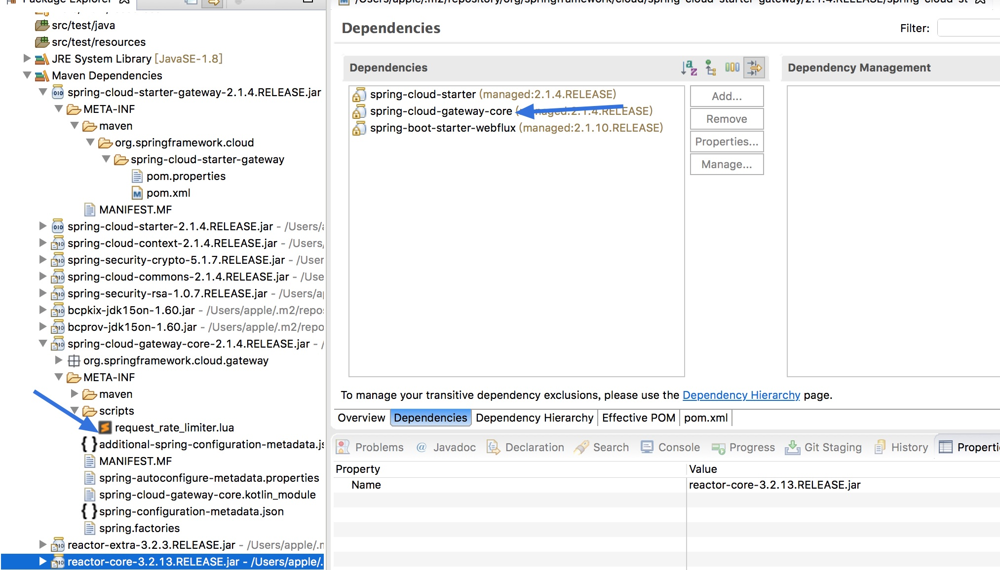
引入相应 jar 包的支持：
<!--基于 reactive stream 的 redis -->
<dependency>
<groupId>org.springframework.boot</groupId>
<artifactId>spring-boot-starter-data-redis-reactive</artifactId>
</dependency>
配置基于 IP 进行限流，比如在商场兑换优惠券时，在固定时间内，仅有固定数量的商场优惠券来应对突然间的大量请求，很容易出现高峰交易的情况，导致服务卡死不可用。
- name: RequestRateLimiter
args:
redis-rate-limiter.replenishRate: 3 #允许用户每秒处理多少个请求
redis-rate-limiter.burstCapacity: 5 #令牌桶的容量，允许在一秒钟内完成的最大请求数
key-resolver: "#{@remoteAddrKeyResolver}" #SPEL 表达式去的对应的 bean
上文的 KeyResolver 配置项是用来定义按什么规则来限流，比如本次采用 IP 进行限流，编写对应的实现类实现此接口：
public class AddrKeyResolver implements KeyResolver {
@Override
public Mono<String> resolve(ServerWebExchange exchange) {
return Mono.just(exchange.getRequest().getRemoteAddress().getAddress().getHostAddress());
}
}
在启动类进行 @Bean 定义：
@Bean
public AddrKeyResolver addrKeyResolver() {
return new AddrKeyResolver();
}
到此，配置完毕，下面来验证配置是否生效。
测评限流是否生效
前期我们采用了 PostMan 组件进行了不少接口测试工作，其实它可以提供并发测试功能，不少用过的小伙伴尚未发现这一功能，这里就带大家一起使用 PostMan 来发起并发测试，操作步骤如下。
1. 建立测试脚本目录
2. 将测试请求放入目录
3. 运行脚本
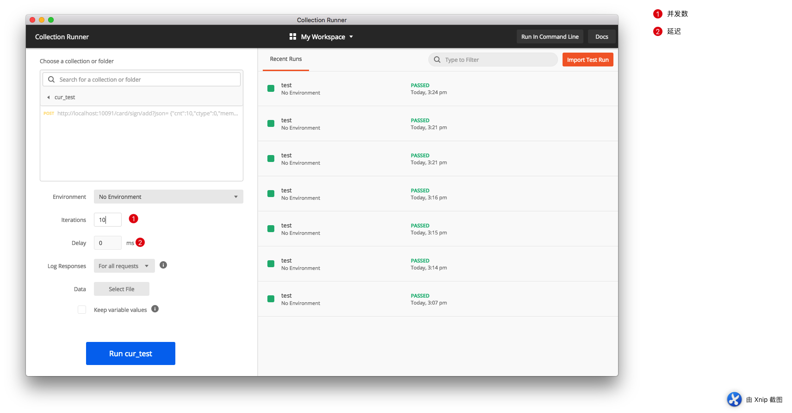
4. 打开终端，进入 Redis 对应的库，输入 monitor 命令，监控 Redis 命令的执行情况。点击上图“Run”按钮，查看 Redis 命令的执行情况。查看 Postman 控制台，可以看到有 3 次已经被忽略执行。
到此，通过原生限流组件可以正常使用，通过 IP 是简单的限流，往往还会有更多个性化的需求，这个时候就需要定制来完成高阶功能。
跨域支持
时下流行的系统部署架构基本是前、后端独立部署，由此而直接引发另一个问题——跨域请求。必须要在网关层支持跨域，不然无法将请求路由到正确的处理节点。这里提供两种方式，一种是代码编写，一种是能过配置文件配置，建议采用配置方式完成。
代码方式
@Configuration
public class CORSConfiguration {
@Bean
public CorsWebFilter corsWebFilter() {
CorsConfiguration config = new CorsConfiguration();
config.setAllowCredentials(Boolean.TRUE);
//config.addAllowedMethod("*");
config.addAllowedOrigin("*");
config.addAllowedHeader("*");
config.addExposedHeader("setToken");
UrlBasedCorsConfigurationSource source = new UrlBasedCorsConfigurationSource(new PathPatternParser());
source.registerCorsConfiguration("/**", config);
return new CorsWebFilter(source);
}
}
配置文件配置
spring:
cloud:
gateway:
discovery:
# 跨域
globalcors:
corsConfigurations:
'[/**]':
allowedHeaders: "*"
allowedOrigins: "*"
# 为保证请求的安全，项目中只支持 get 或 post 请求，其它请求全部屏蔽，以免导致多余的问题
allowedMethods:
- POST
本文到此，网关中路由配置、熔断失败、请求限流、请求跨域等常见的共性问题都得到初步的解决，相信随着使用的深入，还有更多高阶的功能等待大家去开发使用。
留一个思考题：
- 除了 Spring Cloud Gateway 之外，你还知道其它中间件可以实现网关功能吗？不妨去调研一番。
16 服务压力大系统响应慢如何破——网关流量控制
由于服务粒度的不同以及数据包装因端而异的差异需求，我们在之前章节中引入了 BFF 层，调用端可以直接调用 BFF 层，由 BFF 层再将请求分发至不同微服务，进行数据组装。由于很多子服务都需要用户验证、权限验证、流量控制等，真的要在每个子服务中重复编写用户验证的逻辑吗？本章节就带你走近网关，在网关层统一处理这些共性需求。
为什么要引入网关
如果没有网关的情况下，服务调用面临的几个直接问题：
- 每个服务都需要独立的认证，增加不必要的重复度
- 客户端直接与服务对接，后端服务一旦变动，前端也要跟着变动，独立性缺失
- 将后端服务直接暴露在外，服务的安全性保障是一个挑战
- 某些公共的操作，如日志记录等，需要在每个子服务都实现一次，造成不必要的重复劳动
现有系统的调用结构如下图所示：
直接由前端发起调用，服务间的调用可以由服务注册中心调配，但前端调用起来就没这么简单了，特别是后端服务以多实例的形态出现时。由于各个子服务都有各自的服务名、端口号等，加之某些共性的东西（如鉴权、日志、服务控制等）重复在各子模块实现，造成不必要的成本浪费。此时，就亟需一个网关，将所有子服务包装后，对外统一提供服务，并在网关层针对所有共性的功能作统一处理，大大提高服务的可维护性、健壮性。
引入网关后，请求的调用结构演变成如下图：
可以看到明显的变化：由网关层进行统一的请求路由，将前端调用的选择权解放出来；后端服务隐藏起来，对外只能看到网关的地址，安全性大大提升；一些共性操作，直接由网关层实现，具体服务实现不再承担这部分工作，更加专心于业务实现。
本文带你将 spring-cloud-gateway 组件引入项目中，有同学会问，为什么不用 Zuul 呢？答案是由于组件发展的一些原因，Zuul 进入了维护期，为保证组件的完整性，Spring 官方团队开发出 Gateway 以替代 Zuul 来实现网关功能。
新增网关服务
引入 jar 时，注意 Spring Cloud Gateway 是基于 Netty 和 WebFlux 开发，所以不需要相关的 Web Server 依赖，如 Tomcat 等，WebFlux 与 spring-boot-starter-web 是冲突的，需要将这两项排除，否则无法启动。
<dependency>
<groupId>org.springframework.cloud</groupId>
<artifactId>spring-cloud-starter-gateway</artifactId>
</dependency>
<dependency>
<groupId>org.springframework.boot</groupId>
<artifactId>spring-boot-starter-actuator</artifactId>
</dependency>
<dependency>
<groupId>org.springframework.cloud</groupId>
<artifactId>spring-cloud-starter-alibaba-nacos-discovery</artifactId>
<version>0.2.2.RELEASE</version>
</dependency>
启动类与正常业务模块无异，在 application.yml 配置文件中进行初步配置：
server:
port: 10091
management:
endpoints:
web:
exposure:
include: '*'
#nacos config
spring:
application:
name: gateway-service
cloud:
nacos:
discovery:
register-enabled: true
server-addr: 127.0.0.1:8848
# config:
# server-addr: 127.0.0.1:8848
gateway:
discovery:
locator:
enabled: false #gateway 开启服务注册和发现的功能，并且自动根据服务发现为每一个服务创建了一个 router，这个 router 将以服务名开头的请求路径转发到对应的服务。
lowerCaseServiceId: true #是将请求路径上的服务名配置为小写
filters:
- StripPrefix=1
routes:
#一个服务中的 id、uri、predicates 是必输项
#member 子服务
- id: member-service
uri: lb://member-service
predicates:
- Path= /member/**
filters:
- StripPrefix=1
#card 子服务
- id: card-service
uri: lb://card-service
predicates:
- Path=/card/**
filters:
- StripPrefix=1
#resource 子服务
- id: resource-service
uri: lb://resource-service
predicates:
- Path=/resources/**
filters:
- StripPrefix=1
#计费子服务
- id: charging-service
uri: lb://charging-service
predicates:
- Path=/charging/**
filters:
- StripPrefix=1
#finance 子服务
- id: finance-service
uri: lb://finance-service
predicates:
- Path=/finance/**
filters:
- StripPrefix=1
routes 配置项是具体的服务路由规则配置，各服务以数组形式配置。id 用于服务间的区分，uri 则对应直接的调用服务，lb 表示以负载的形式访问服务，lb 后面配置的是 Nacos 中的服务名。predicates 用于匹配请求，无须再用服务的形式访问。
到此完成 Gateway 网关服务的简单路由功能已完成，前端直接访问网关调用对应服务，不必再关心子服务的服务名、服务端口等情况。
实现熔断降级
有服务调用章节，我们通过 Hystrix 实现了服务降级，在网关层面是不是可以做一个统一配置呢？答案是肯定的，下面我们在 Gateway 模块中引入 Hystrix 来进行服务设置，当服务超时或超过指定配置时，直接快速返回准备好的异常方法，快速失败，实现服务的熔断操作。
引入相关的 jar 包：
<dependency>
<groupId>org.springframework.cloud</groupId>
<artifactId>spring-cloud-starter-netflix-hystrix</artifactId>
</dependency>
配置文件中设置熔断超时时间设置：
#timeout time config，默认时间为 1000ms，
hystrix:
command:
default:
execution:
isolation:
thread:
timeoutInMilliseconds: 2000
编写异常响应类，此类需要配置在子服务的失败调用位置。
@RestController
@RequestMapping("error")
@Slf4j
public class FallbackController {
@RequestMapping("/fallback")
public CommonResult<String> fallback() {
CommonResult<String> errorResult = new CommonResult<>("Invoke failed.");
log.error("Invoke service failed...");
return errorResult;
}
}
#card 子服务
- id: card-service
uri: lb://card-service
predicates:
- Path=/card/**
filters:
- StripPrefix=1
#配置快速熔断失败调用
- name: Hystrix
args:
name: fallbackcmd
fallbackUri: forward:/error/fallback
若服务暂时不可用，发起重试后又能返回正常，可以通过设置重试次数，来确保服务的可用性。
#card子服务
- id: card-service
uri: lb://card-service
predicates:
- Path=/card/**
filters:
- StripPrefix=1
- name: Hystrix
args:
name: fallbackcmd
fallbackUri: forward:/error/fallback
- name: Retry
args:
#重试 3 次，加上初次访问，正确执行应当是 4 次访问
retries: 3
statuses:
- OK
methods:
- GET
- POST
#异常配置，与代码中抛出的异常保持一致
exceptions:
- com.mall.parking.common.exception.BusinessException
如何测试呢？可以代码中增加异常抛出，来测试请求是否重试 3 次，前端调用时，通过网关访问此服务调用，可以发现被调用次数是 4 次。
/* 这里抛出异常是为了测试spring-cloud-gateway的retry机制是否正常运行
* if (StringUtils.isEmpty("")) {
throw new BusinessException("test retry function");
}*/
实现服务限流
为什么要限流，当服务调用压力突然增大时，对系统的冲击是很大的，为保证系统的可用性，做一些限流措施很有必要。
常见的限流算法有：令牌桶、漏桶等，Gateway 组件内部默认实现了 Redis+Lua 进行限流，可以通过自定义的方式来指定是根据 IP、用户或是 URI 来进行限流，下面我们来一控究竟。
Spring Cloud Gateway 默认提供的 RedisRateLimter 的核心逻辑为判断是否取到令牌的实现，通过调用 META-INF/scripts/requestratelimiter.lua 脚本实现基于令牌桶算法限流，我们来看看如何借助这个功能来达到我们的目的。
引入相应 jar 包的支持：
<!--基于 reactive stream 的redis -->
<dependency>
<groupId>org.springframework.boot</groupId>
<artifactId>spring-boot-starter-data-redis-reactive</artifactId>
</dependency>
配置基于 IP 进行限流，比如在商场兑换优惠券时，在固定时间内，仅有固定数量的商场优惠券来应对突然间的大量请求，很容易出现高峰交易的情况，导致服务卡死不可用。
- name: RequestRateLimiter
args:
redis-rate-limiter.replenishRate: 3 #允许用户每秒处理多少个请求
redis-rate-limiter.burstCapacity: 5 #令牌桶的容量，允许在一秒钟内完成的最大请求数
key-resolver: "#{@remoteAddrKeyResolver}" #SPEL 表达式去的对应的 bean
上文的 KeyResolver 配置项是用来定义按什么规则来限流，比如本次采用 IP 进行限流，编写对应的实现类实现此接口：
public class AddrKeyResolver implements KeyResolver {
@Override
public Mono<String> resolve(ServerWebExchange exchange) {
return Mono.just(exchange.getRequest().getRemoteAddress().getAddress().getHostAddress());
}
}
在启动类进行 @Bean 定义：
@Bean
public AddrKeyResolver addrKeyResolver() {
return new AddrKeyResolver();
}
到此，配置完毕，下面来验证配置是否生效。
测试限流是否生效
前期我们采用了 Postman 组件进行了不少接口测试工作，其实它可以提供模拟并发测试功能（如果要真实现真正的并发测试，建议采用 Apache JMeter 工具），不少用过的小伙伴尚未发现这一功能，这里就带大家一起使用 Postman 来发起模拟并发测试，操作步骤如下。
1. 建立测试脚本目录
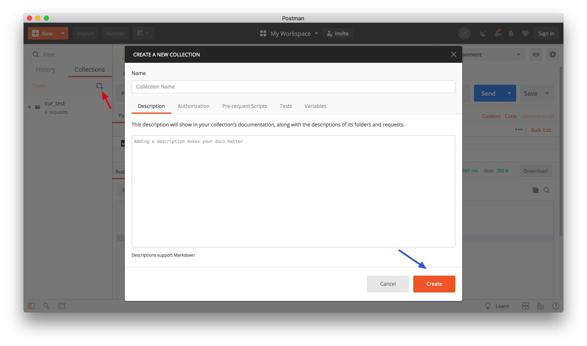
2. 将测试请求放入目录
3. 运行脚本
4. 打开终端，进入 Redis 对应的库，输入 monitor 命令，监控 Redis 命令的执行情况。
点击上图“Run”按钮，查看 Redis 命令的执行情况。查看 PostMan 控制台，可以看到有 3 次已经被忽略执行。
到此，通过原生限流组件可以正常使用，通过 IP 是简单的限流，往往还会有更多个性化的需求，这个时候就需要定制来完成高阶功能。
实现跨域支持
时下流行的系统部署架构基本是前、后端独立部署，由此而直接引发另一个问题：跨域请求。必须要在网关层支持跨域，不然无法将请求路由到正确的处理节点。这里提供两种方式，一种是代码编写，一种是能过配置文件配置，建议采用配置方式完成。
代码方式
@Configuration
public class CORSConfiguration {
@Bean
public CorsWebFilter corsWebFilter() {
CorsConfiguration config = new CorsConfiguration();
config.setAllowCredentials(Boolean.TRUE);
//config.addAllowedMethod("*");
config.addAllowedOrigin("*");
config.addAllowedHeader("*");
config.addExposedHeader("setToken");
UrlBasedCorsConfigurationSource source = new UrlBasedCorsConfigurationSource(new PathPatternParser());
source.registerCorsConfiguration("/**", config);
return new CorsWebFilter(source);
}
}
配置文件配置
spring:
cloud:
gateway:
discovery:
# 跨域
globalcors:
corsConfigurations:
'[/**]':
allowedHeaders: "*"
allowedOrigins: "*"
# 为保证请求的安全，项目中只支持 get 或 post 请求，其它请求全部屏蔽，以免导致多余的问题
allowedMethods:
- POST
本文到此，网关中路由配置、熔断失败、请求限流、请求跨域等常见的共性问题都得到初步的解决，相信随着使用的深入，还有更多高阶的功能等待大家去开发使用。留一个思考题：除了 Spring Cloud Gateway 之外，你还知道其它中间件可以实现网关功能吗？不妨去调研一番。
17 集成网关后怎么做安全验证——统一鉴权
商场停车场景中，除了极少数功能不需要用户登陆外（如可用车位数），其余都是需要用户在会话状态下才能正常使用的功能。上个章节中提到，要在网关层实现统一的认证操作，本篇就直接带你在网关层增加一个公共鉴权功能，来实现简单的认证，采用轻量级解决方案 JWT 的方式来完成。
为什么选 JWT
JSON Web Token（缩写 JWT）是比较流行的轻量级跨域认证解决方案，Tomcat 的 Session 方式不太适应分布式环境中，多实例多应用的场景。JWT 按一定规则生成并解析，无须存储，仅这一点要完爆 Session 的存储方式，更何况 Session 在多实例环境还需要考虑同步问题，复杂度无形中又增大不少。
由于 JWT 的这种特性，导致 JWT 生成后，只要不过期就可以正常使用，在业务场景中就会存在漏洞，比如会话退出时，但 token 依旧可以使用（token 一旦生成，无法更改），此时就需要借助第三方的手段，来配置 token 的验证，防止被别有用意的人利用。
服务只有处于无状态条件下，才能更好的扩展，否则就需要维护状态，增加额外的开销，反而不利于维护扩展，而 JWT 恰恰帮助服务端实例做到了无状态化。
JWT 应用的两个特殊场景
- 会话主动退出。必须结合第三方来完成，如 Redis 方案：会话主动退出时，将 token 写入缓存中，后期所有请求在网关层验证时，先判定缓存中是否存在，若存在则证明 token 无效，提示去登陆。
- 用户一直在使用系统，但 JWT 失效。假如 JWT 有效期是 30 分钟，如果用户一直在使用，表明处于活跃状态，不能直接在 30 分钟后用用户踢出去登陆，用户体验很糟糕。依照 Session 方式下的解雇方案，只要用户在活跃，有效期就要延长。但 JWT 本身又无法更改，这时就需要刷新 JWT 来保证体验的流畅性。方案如下：当检测到即将过期或已经过期时，但用户依旧在活跃（如果判定在活跃？可以将用户的每次请求写入缓存，通过时间间隔判定），则生成新 token 返回给前端，使用新的 token 发起请求，直到主动退出或失效退出。
使用 JWT
在网关层引入 jar 包：
<!-- https://mvnrepository.com/artifact/io.jsonwebtoken/jjwt -->
<dependency>
<groupId>io.jsonwebtoken</groupId>
<artifactId>jjwt</artifactId>
<version>0.9.1</version>
</dependency>
编写 JWT 工具类
工具类功能集中于生成 token 与验证 token：
@Slf4j
public class JWTUtils {
/**
* 由字符串生成加密 key，此处的 key 并没有代码中写死，可以灵活配置
*
* @return
*/
public static SecretKey generalKey(String stringKey) {
byte[] encodedKey = Base64.decodeBase64(stringKey);
SecretKey key = new SecretKeySpec(encodedKey, 0, encodedKey.length, "AES");
return key;
}
/**
* createJWT: 创建 jwt<br/>
*
* @author guooo
* @param id 唯一 id，uuid 即可
* @param subject json 形式字符串或字符串，增加用户非敏感信息存储，如 user tid，与 token 解析后进行对比，防止乱用
* @param ttlMillis 有效期
* @param stringKey
* @return jwt token
* @throws Exception
* @since JDK 1.6
*/
public static String createJWT(String id, String subject, long ttlMillis, String stringKey) throws Exception {
SignatureAlgorithm signatureAlgorithm = SignatureAlgorithm.HS256;
long nowMillis = System.currentTimeMillis();
Date now = new Date(nowMillis);
SecretKey key = generalKey(stringKey);
JwtBuilder builder = Jwts.builder().setIssuer("").setId(id).setIssuedAt(now).setSubject(subject)
.signWith(signatureAlgorithm, key);
if (ttlMillis >= 0) {
long expMillis = nowMillis + ttlMillis;
Date exp = new Date(expMillis);
builder.setExpiration(exp);
}
return builder.compact();
}
/**
* parseJWT: 解密 jwt <br/>
*
* @author guooo
* @param jwt
* @param stringKey
* @return
* @throws ExpiredJwtException
* @throws UnsupportedJwtException
* @throws MalformedJwtException
* @throws SignatureException
* @throws IllegalArgumentException
* @since JDK 1.6
*/
public static Claims parseJWT(String jwt, String stringKey) throws ExpiredJwtException, UnsupportedJwtException,
MalformedJwtException, SignatureException, IllegalArgumentException {
SecretKey key = generalKey(stringKey);
Claims claims = Jwts.parser().setSigningKey(key).parseClaimsJws(jwt).getBody();
return claims;
}
public static boolean isTokenExpire(String jwt, String stringKey) {
Claims aClaims = parseJWT(jwt, stringKey);
// 当前时间与 token 失效时间比较
if (LocalDateTime.now().isAfter(LocalDateTime.now()
.with(aClaims.getExpiration().toInstant().atOffset(ZoneOffset.ofHours(8)).toLocalDateTime()))) {
log.info("token is valide");
return true;
} else {
return false;
}
}
public static void main(String[] args) {
try {
String key = "eyJqdGkiOiI1NGEzNmQ5MjhjYzE0MTY2YTk0MmQ5NTg4NGM2Y2JjMSIsImlhdCI6MTU3OTE2MDkwMiwic3ViIjoiMTIxMiIsImV4cCI6MTU3OTE2MDkyMn0";
String token = createJWT(UUID.randomUUID().toString().replace("-", ""), "1212", 2000, key);
System.out.println(token);
parseJWT(token, key);
// Thread.sleep(2500);
Claims aClaims = parseJWT(token, key);
System.out.println(aClaims.getExpiration());
if (isTokenExpire(token, key)) {
System.out.println("过期了");
} else {
System.out.println("normal");
}
System.out.println(aClaims.getSubject().substring(0, 2));
} catch (ExpiredJwtException e) {
System.out.println("又过期了");
} catch (Exception e) {
e.printStackTrace();
}
}
}
校验 token
需要要结合 Spring Cloud Gateway 的网关过滤器来验证 token 的可用性，编写过滤器：
@Component
@Slf4j
public class JWTFilter implements GlobalFilter, Ordered {
@Autowired
JWTData jwtData;
private ObjectMapper objectMapper = new ObjectMapper();
@Override
public Mono<Void> filter(ServerWebExchange exchange, GatewayFilterChain chain) {
String url = exchange.getRequest().getURI().getPath();
// 跳过不需要验证的路径
if (null != jwtData.getSkipUrls() && Arrays.asList(jwtData.getSkipUrls()).contains(url)) {
return chain.filter(exchange);
}
// 获取 token
String token = exchange.getRequest().getHeaders().getFirst("token");
ServerHttpResponse resp = exchange.getResponse();
if (StringUtils.isEmpty(token)) {
// 没有 token
return authError(resp, "请先登陆!");
} else {
// 有 token
try {
JWTUtils.parseJWT(token, jwtData.getTokenKey());
log.info("验证通过");
return chain.filter(exchange);
} catch (ExpiredJwtException e) {
log.error(e.getMessage(), e);
return authError(resp, "token过期");
} catch (Exception e) {
log.error(e.getMessage(), e);
return authError(resp, "认证失败");
}
}
}
/**
* 认证错误输出
*
* @param resp 响应对象
* @param message 错误信息
* @return
*/
private Mono<Void> authError(ServerHttpResponse resp, String message) {
resp.setStatusCode(HttpStatus.UNAUTHORIZED);
resp.getHeaders().add("Content-Type", "application/json;charset=UTF-8");
CommonResult<String> returnData = new CommonResult<>(org.apache.http.HttpStatus.SC_UNAUTHORIZED + "");
returnData.setRespMsg(message);
String returnStr = "";
try {
returnStr = objectMapper.writeValueAsString(returnData.getRespMsg());
} catch (JsonProcessingException e) {
log.error(e.getMessage(), e);
}
DataBuffer buffer = resp.bufferFactory().wrap(returnStr.getBytes(StandardCharsets.UTF_8));
return resp.writeWith(Flux.just(buffer));
}
@Override
public int getOrder() {
return -200;
}
}
上文提到 key 是 JWT 在生成或验证 token 时一个关键参数，就像生成密钥种子一样。此值可以配置在 application.properties 配置文件中，也可以写入 Nacos 中。过滤器中使用到的 JWTData 类，主要用于存储不需要鉴权的请求地址与 JWT 种子 key 的值。
jwt:
token-key: eyJqdGkiOiI1NGEzNmQ5MjhjYzE0MTY2YTk0MmQ5NTg4NGM2Y2JjMSIsImlhdCI6MTU3OTE2MDkwMiwic3ViIjoiMTIxMiIsImV4cCI6MTU3OTE2MDkyMn0
skip-urls:
- /member-service/member/bindMobile
- /member-service/member/logout
@Component
@Data
@ConfigurationProperties(prefix = "jwt")
public class JWTData {
public String tokenKey;
private String[] skipUrls;
}
至此，基本的配置与相关功能代码已经完备，下一步进入测试。
测试可用性
本次主要来验证特定下，是否会对 token 进行验证，由于 filter 是基于网关的 GlobalFilter，会拦截所有的路由请求，当是无须验权的请求时，则直接转发路由。
先用 JWTUtils 工具，输出一个正常的 token，采用 Postman 工具进行“商场用户日常签到功能请求”验证，发现请求成功。
稍等数秒钟，待 token 自动失效后，再重新发起请求，结果如下图所示，请求直接在网关层被拦截返回，提示：“token 过期”，不再向后端服务转发。
做另外一个测试：伪造一个错误的 token，进行请求，验证结果如下图所示，请求直接在网关层拦截返回，同样不再向后端服务转发。
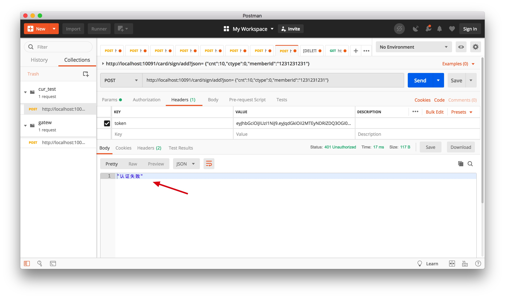
至此，一个轻量级的网关鉴权方案完成，虽简单但很实用。在应对复杂场景时，还需要配合其它组件或功能来加固服务，保证服务的安全性。比如鉴权通过后，哪些功能有权操作，哪有没有，还需要基于角色权限配置来完成。这在管理系统中很常见，本案例中未体现此块功能，你可以在本案例中尝试增加这块的功能来验证一下，加深对 JWT 的理解。
18 多模块下的接口 API 如何统一管理——聚合 API
在《第一个 Spring Boot 子服务——会员服务》章节中已经实现了集成 Swagger2，通过 UI 进行接口的展现、测试功能，当单体项目或者对外只提供一个 API 接口文档时，采用 Swagger 的方式访问 API 还算简单，但当微服务项目增多，外部端接入 API 时，就要面对众多的 Swagger 界面——服务端口、接口路径各异，调用难度增大不少，这时迫切需要做一个整合，将所有 API 展现在一个页面中统一对外。
两种实现思路
因之前的每个子模块中都已经集成了 Swagger，可以通过指定的路径访问到各自的 API，有两种方式可以将所有的 API 管理起来。
\1. 自行制作单页，将子模块的 swagger-ui 页面全部装进去，页面中通过 iframe 的形式访问接口。此方式简单粗暴，弊端也显而易见：
- 子模块接口暴露在外，易引起安全风险，需要网关统一处理的功能，如鉴权等，在子模块中缺失。
- 不经网关，访问每个子模块的端口不一，编码易出错。
- 如果模块有变动，单页需要保持更新。
\2. 将各模块的 swagger-ui 集成在网关层，上述三个弊端均不是问题。
本实例中将通过 Gateway 服务层集成所有 swagger-ui 页面，统一对外暴露。
Gateway 层集成 Swagger
首先我们来看看访问 swagger-ui.html 时，都加载了哪些内容。以积分服务为例，如果使用的是 chrome 浏览器，右键打开“检查”功能，切换到 network 页签，刷新页面后，按“Type”列排序，默认调用 4 个异步方法：
http://localhost:10061/swagger-resources/configuration/ui
http://localhost:10061/swagger-resources/configuration/security
http://localhost:10061/swagger-resources
http://localhost:10061/v2/api-docs
还有关键的 springfox.js 文件，如上图所示，界面中显示的数据最终数据源是 /v2/api-docs 方法获取到的，是由 swagger-resources 方法请求后再二次调用。swagger-resources 的请求响应结果为：
[{"name":"default","url":"/v2/api-docs","swaggerVersion":"2.0","location":"/v2/api-docs"}]
在 UI 初始化过程中，加载 URL 地址 /v2/api-docs，获取所有接口配置数据。如下所示，把数据格式化后可以结构清晰的看到接口定义的 JSON 数据：
所以，核心的关键所在，在于将各个子模块的 /v2/api-docs 集合起来，置入同一个 UI 界面中，就能达成所有 API 聚合的目标，下面就行动起来。
引入 Swagger 相关 jar
与前面子服务中引入 Swagger 的方式是一致的，在 pom.xml 文件中增加配置项：
<!--swagger2 -->
<dependency>
<groupId>io.springfox</groupId>
<artifactId>springfox-swagger2</artifactId>
</dependency>
<dependency>
<groupId>io.springfox</groupId>
<artifactId>springfox-swagger-ui</artifactId>
</dependency>
Swagger 配置
从 Swagger2 的实现原理上看，API 接口资源关键在于核心接口类 SwaggerResourcesProvider，唯一的实现类 InMemorySwaggerResourcesProvider，每个子模块的 Swagger2 工作时，都经由此类处理后返回给前端。
//核心方法
@Override
public List<SwaggerResource> get() {
List<SwaggerResource> resources = new ArrayList<SwaggerResource>();
for (Map.Entry<String, Documentation> entry : documentationCache.all().entrySet()) {
String swaggerGroup = entry.getKey();
if (swagger1Available) {
SwaggerResource swaggerResource = resource(swaggerGroup, swagger1Url);
swaggerResource.setSwaggerVersion("1.2");
resources.add(swaggerResource);
}
if (swagger2Available) {
SwaggerResource swaggerResource = resource(swaggerGroup, swagger2Url);
swaggerResource.setSwaggerVersion("2.0");
resources.add(swaggerResource);
}
}
Collections.sort(resources);
return resources;
}
private SwaggerResource resource(String swaggerGroup, String baseUrl) {
SwaggerResource swaggerResource = new SwaggerResource();
swaggerResource.setName(swaggerGroup);
swaggerResource.setUrl(swaggerLocation(baseUrl, swaggerGroup));
return swaggerResource;
}
网关集成时，需要重写此方法，将所有路由的子模块 SwaggerResource 加入进来，形成数据集合，再在 UI 上选择对应的服务模块，去调用不同的 /v2/api-docs 方法并展现出来。
@Component
public class ParkingSwaggerResourcesProvider implements SwaggerResourcesProvider {
/**
* swagger2 的特定资源地址
*/
private static final String SWAGGER2URL = "/v2/api-docs";
/**
* 网关路由器
*/
private final RouteLocator routeLocator;
/**
* 本应用名称，下文需要将自己排除掉
*/
@Value("${spring.application.name}")
private String curApplicationName;
public ParkingSwaggerResourcesProvider(RouteLocator routeLocator) {
this.routeLocator = routeLocator;
}
@Override
public List<SwaggerResource> get() {
List<SwaggerResource> resources = new ArrayList<>();
List<String> routeHosts = new ArrayList<>();
// 从网关配置中拿到所有应用的 serviceId
routeLocator.getRoutes().filter(route -> route.getUri().getHost() != null)
.filter(route -> !curApplicationName.equals(route.getUri().getHost()))
.subscribe(route -> routeHosts.add(route.getUri().getHost()));
Set<String> allUrls = new HashSet<>();
routeHosts.forEach(instance -> {
// /serviceId/v2/api-info，当网关调用这个接口时，会自动寻找对应的服务实例
String url = "/" + instance + SWAGGER2URL;
if (!allUrls.contains(url)) {
allUrls.add(url);
SwaggerResource swaggerResource = new SwaggerResource();
swaggerResource.setUrl(url);
//swaggerResource.setLocation(url);location 已过期，直接采用 url 代替
swaggerResource.setName(instance);
resources.add(swaggerResource);
}
});
return resources;
}
}
重写 SwaggerResourceController 类，替换掉 springfox.js 文件中默认加载的三个方法，如下：
- swagger-resources/configuration/ui
- swagger-resources/configuration/security
- swagger-resources
@RestController
@RequestMapping("/swagger-resources")
public class SwaggerResourceController {
private ParkingSwaggerResourcesProvider swaggerResourceProvider;
@Autowired
public SwaggerResourceController(ParkingSwaggerResourcesProvider swaggerResourceProvider) {
this.swaggerResourceProvider = swaggerResourceProvider;
}
@RequestMapping(value = "/configuration/security")
public ResponseEntity<SecurityConfiguration> securityConfiguration() {
return new ResponseEntity<>(SecurityConfigurationBuilder.builder().build(), HttpStatus.OK);
}
@RequestMapping(value = "/configuration/ui")
public ResponseEntity<UiConfiguration> uiConfiguration() {
return new ResponseEntity<>(UiConfigurationBuilder.builder().build(), HttpStatus.OK);
}
@RequestMapping
public ResponseEntity<List<SwaggerResource>> swaggerResources() {
return new ResponseEntity<>(swaggerResourceProvider.get(), HttpStatus.OK);
}
}
启动 gateway 网关层，访问 http://localhost:10091/swagger-ui.html，与访问单个子模块的 swagger-ui 是一样的，看到如下界面，基本配置成功，右上角下拉框显示出子服务名称，但接口数据未显示，异常信息：请先登陆。
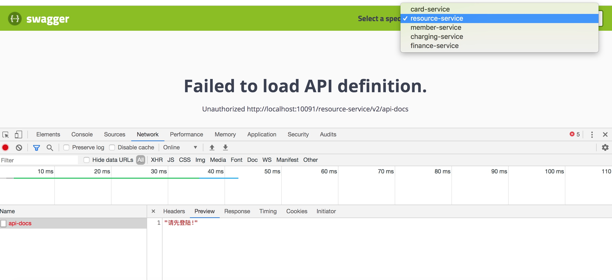
联想到之前的网关鉴权过滤器 JWTFilter 过滤器，针对所有请求做了 token 校验，此处的异常是从校验中抛出。这里就需要刨除了一些无须验权的路径，将 swagger-ui 相关的请求添加到白名单中不做 token 校验，才能正常显示。
修改 application.yml 配置项，将相关后端服务从鉴权中剔除：
jwt:
skip-urls:
- /member-service/member/bindMobile
- /member-service/member/logout
- /member-service/test/hello
- /card-service/v2/api-docs
- /resource-service/v2/api-docs
- /member-service/v2/api-docs
- /charging-service/v2/api-docs
- /finance-service/v2/api-docs
再重新启动 gateway 项目，验证网关层的 swagger-ui.html 是否正常，如下截图，可以正常获取到各个服务模块的接口请求。
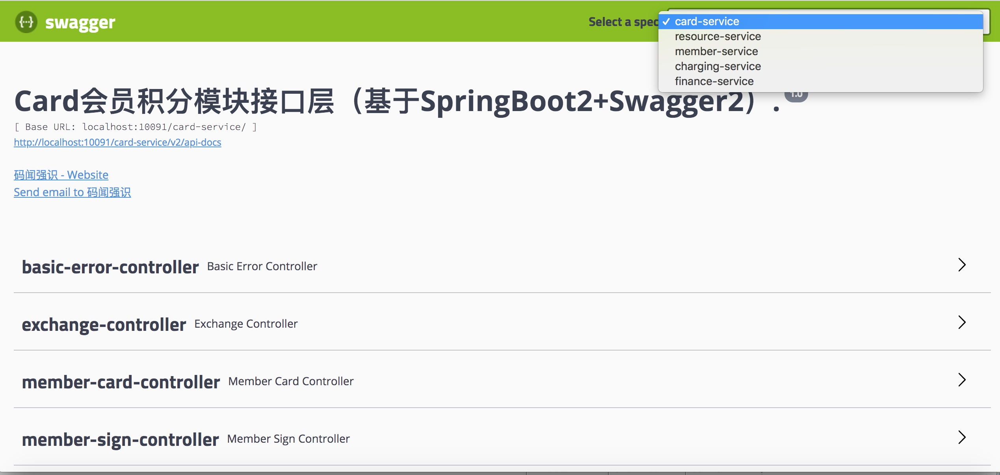
测试接口
我们找到 member 服务模块测试接口 hello 方法，校验 hello 方法是否可以正常请求。
可以清晰地看到，请求路径已经变更为网关的地址和端口，后端子模块的端口已经隐藏，对外统一采用网关层的 swagger-ui 供外部应用调用。
可以看出 Gateway 的方案与第一种简单粗暴的方法有相似之处，都是将资源地址罗列，选择后重新加载数据到指定区域展现出来。只不过第二种网关的方式，无须额外维护页面，交由 Swagger 自己来更新。
本篇将所有微服务的 API 进行聚合，大大降低了前端调用的复杂度，在开发体验上也是一大进步。
留下个思考题：
- 如果针对不同的端，需要开放不同的 API 集合，怎么做才能满足需求呢？
19 数据分库后如何确保数据完整性——分布式事务
如果你已经在学习本课程的过程中，将前面所有业务代码填充完整后，会发现某些涉及多服务调用过程中多个数据库写入操作，是存在漏洞的。
通过 @Transactional 注解进行事务控制，服务内尚未保证数据的完整性，跨服务后数据的完整性无法得到保护。这里就涉及到分布式事务的问题，本篇我们一起使用 Seata 组件来进行来确保跨服务场景下的数据完整性问题。
问题场景
先拿一个关键场景来铺垫下主题。车辆交费离场后，主要业务逻辑如下：
- 计费服务自向，写入离场信息
- 调用财务服务，写入收费信息
- 调用消息服务，写入消息记录
涉及到三个服务间协作，数据分别写入三个存储库，是一个典型的分布式事务数据一致性问题。来看下正常场景的代码逻辑：
@Service
@Slf4j
public class ExistsServiceImpl implements ExistsService {
@Autowired
ExistsMapper ExistsMapper;
@Autowired
EntranceMapper entranceMapper;
@Autowired
RedisService redisService;
@Autowired
BillFeignClient billFeignClient;
@Autowired
MessageClient messageClient;
@Autowired
Source source;
@Override
@Transactional(rollbackFor = Exception.class)
public int createExsits(String json) throws BusinessException {
log.info("Exists data = " + json);
Exists exists = JSONObject.parseObject(json, Exists.class);
int rtn = ExistsMapper.insertSelective(exists);
log.info("insert into park_charge.Exists data suc !");
//计算停车费用
EntranceExample entranceExample = new EntranceExample();
entranceExample.setOrderByClause("create_date desc limit 0,1");
entranceExample.createCriteria().andPlateNoEqualTo(exists.getPlateNo());
List<Entrance> entrances = entranceMapper.selectByExample(entranceExample);
Entrance lastEntrance = null;
if (CollectionUtils.isNotEmpty(entrances)) {
lastEntrance = entrances.get(0);
}
if (null == lastEntrance) {
throw new BusinessException("异常车辆，未找到入场数据!");
}
Instant entryTime = lastEntrance.getCreateDate().toInstant();
Duration duration = Duration.between(LocalDateTime.ofInstant(entryTime, ZoneId.systemDefault()),
LocalDateTime.now());
long mintues = duration.toMinutes();
float fee = caluateFee(mintues);
log.info("calu parking fee = " + fee);
//调用 第三方支付服务，支付停车费，这里略去。直接进行支付记录写入操作
Billing billing = new Billing();
billing.setFee(fee);
billing.setDuration(Float.valueOf(mintues));
billing.setPlateNo(exists.getPlateNo());
CommonResult<Integer> createRtn = billFeignClient.create(JSONObject.toJSONString(billing));
if (createRtn.getRespCode() > 0) {
log.info("insert into billing suc!");
}else {
throw new BusinessException("invoke finance service fallback...");
}
//更新场外屏幕，刷新可用车位数量
redisService.increase(ParkingConstant.cache.currentAviableStallAmt);
log.info("update parkingLot aviable stall amt = " +redisService.getkey(ParkingConstant.cache.currentAviableStallAmt));
//发送支付消息
Message message = new Message();
message.setMcontent("this is simple pay message.");
message.setMtype("pay");
source.output().send(MessageBuilder.withPayload(JSONObject.toJSONString(message)).build());
log.info("produce msg to apache rocketmq , parking-messge to consume the msg as a consumer...");
//写入支付消息记录
CommonResult<Integer> msgRtn = messageClient.sendNotice(JSONObject.toJSONString(message));
if (msgRtn.getRespCode() > 0) {
log.info("insert into park_message.message data suc!");
}else {
throw new BusinessException("invoke message service fallback ...");
}
return rtn;
}
/**
* @param stayMintues
* @return
*/
private float caluateFee(long stayMintues) {
String ruleStr = (String) redisService.getkey(ParkingConstant.cache.chargingRule);
JSONArray array = JSONObject.parseArray(ruleStr);
List<ChargingRule> rules = JSONObject.parseArray(array.toJSONString(), ChargingRule.class);
float fee = 0;
for (ChargingRule chargingRule : rules) {
if (chargingRule.getStart() <= stayMintues && chargingRule.getEnd() > stayMintues) {
fee = chargingRule.getFee();
break;
}
}
return fee;
}
}
正常情况下，不会出现问题，一旦子服务出现写入异常逻辑，就会出现数据不一致的情况。比如车辆离场记录写入成功，但支付记录写入失败的情况，代码不能及时回滚错误数据，造成业务数据的不完整，事后追溯困难。
分布式事务问题
什么是事务，事务是由一组操作构成的可靠的独立的工作单位，要么全部成功，要么全部失败，不能出现部分成功部分失败的情况。在单体架构下，更多的是本地事务，比如采用 Spring 框架的话，基本上是由 Spring 来管理着事务，保证事务的正常逻辑。但本地事务仅限于当前应用，其它应用的事务就鞭长莫及了。
什么是分布式事务，一次大的业务操作中涉及众多小操作，各个小操作分散在不同的应用中，要保证业务数据的完整可靠。同样也是要么全成功，要么全失败。事务管理的范围由单一应用演变成分布式系统的范围。
网络中针对分布式事务的讨论很多，成熟方案也存在，这里不引入过多讨论，由兴趣的小伙伴可以先补充下这块的知识，再来回看本篇内容。
在数据强一致要求不高的情况下，业界普遍主张采用最终一致性，来保证分布式事务涉及到的数据完整性。本文即将重点介绍的 Seata 方案属于此类。
Seata 是什么
Seata 是一款开源的分布式事务解决方案，致力于在微服务架构下提供高性能和简单易用的分布式事务服务。支持 Dubbo、Spring Cloud、grpc 等 RPC 框架，本次引入也正是与 Spring Cloud 体系融合比较好的原因。更多详细内容可参照其官网：
Seata 中有三个重要概念：
- TC——事务协调者：维护全局和分支事务的状态，驱动全局事务提交或回滚，独立于各应用之外。
- TM——事务管理器：定义全局事务的范围：开始全局事务、提交或回滚全局事务，也就是事务的发起方。
- RM——资源管理器：管理分支事务处理的资源，与 TC 交谈以注册分支事务和报告分支事务的状态，并驱动分支事务提交或回滚，RM 自当是维护在各个微服务中。
（图片来源于 https://github.com/seata/seata）
Seata Server 安装
本案例基于 AT 模块展开，需要结合 MySQL、Nacos 共同完成。
下载完成后，进入 seata 目录：
drwxr-xr-x 3 apple staff 96 10 16 15:38 META-INF/
-rw-r--r-- 1 apple staff 1439 10 16 15:38 db_store.sql
-rw-r--r--@ 1 apple staff 829 12 18 11:40 db_undo_log.sql
-rw-r--r-- 1 apple staff 3484 12 19 09:41 file.conf
-rw-r--r-- 1 apple staff 2144 10 16 15:38 logback.xml
-rw-r--r-- 1 apple staff 892 10 16 15:38 nacos-config.py
-rw-r--r-- 1 apple staff 678 10 16 15:38 nacos-config.sh
-rw-r--r-- 1 apple staff 2275 10 16 15:38 nacos-config.txt
-rw-r--r-- 1 apple staff 1359 12 19 09:41 registry.conf
事务注册支持 file、nacos、eureka、redis、zk、consul、etcd3、sofa 多种模式，配置也支持 file、nacos、apollo、zk、consul、etcd3 等多种模式，本次使用 nacos 模式，修改 registry.conf 后如下。
appledeMacBook-Air:conf apple$ cat registry.conf
registry {
# file、nacos、eureka、redis、zk、consul、etcd3、sofa
type = "nacos"
nacos {
serverAddr = "localhost:8848"
namespace = ""
cluster = "default"
}
}
config {
# file、nacos、apollo、zk、consul、etcd3
type = "nacos"
nacos {
serverAddr = "localhost"
namespace = ""
cluster = "default"
}
}
事务注册选用 nacos 后，就需要用到 nacos-config.txt 配置文件，打开文件修改关键配置项——事务组及存储配置项：
service.vgroup_mapping.${your-service-gruop}=default
中间的 ${your-service-gruop} 为自己定义的服务组名称，服务中的 application.properties 文件里配置服务组名称。有多少个子服务中涉及全局事务控制，就要配置多少个。
service.vgroup_mapping.message-service-group=default
service.vgroup_mapping.finance-service-group=default
service.vgroup_mapping.charging-service-group=default
...
store.mode=db
store.db.url=jdbc:mysql://127.0.0.1:3306/seata-server?useUnicode=true
store.db.user=root
store.db.password=root
初始化 seata-server 数据库，涉及三张表：branch_table、global_table 和 lock_table，用于存储全局事务、分支事务及锁定表相关数据，脚本位于 conf 目录下 db_store.sql 文件中。
SET NAMES utf8mb4;
SET FOREIGN_KEY_CHECKS = 0;
-- ----------------------------
-- Table structure for branch_table
-- ----------------------------
DROP TABLE IF EXISTS `branch_table`;
CREATE TABLE `branch_table` (
`branch_id` bigint(20) NOT NULL,
`xid` varchar(128) NOT NULL,
`transaction_id` bigint(20) DEFAULT NULL,
`resource_group_id` varchar(32) DEFAULT NULL,
`resource_id` varchar(256) DEFAULT NULL,
`lock_key` varchar(128) DEFAULT NULL,
`branch_type` varchar(8) DEFAULT NULL,
`status` tinyint(4) DEFAULT NULL,
`client_id` varchar(64) DEFAULT NULL,
`application_data` varchar(2000) DEFAULT NULL,
`gmt_create` datetime DEFAULT NULL,
`gmt_modified` datetime DEFAULT NULL,
PRIMARY KEY (`branch_id`),
KEY `idx_xid` (`xid`)
) ENGINE=InnoDB DEFAULT CHARSET=utf8;
-- ----------------------------
-- Table structure for global_table
-- ----------------------------
DROP TABLE IF EXISTS `global_table`;
CREATE TABLE `global_table` (
`xid` varchar(128) NOT NULL,
`transaction_id` bigint(20) DEFAULT NULL,
`status` tinyint(4) NOT NULL,
`application_id` varchar(32) DEFAULT NULL,
`transaction_service_group` varchar(32) DEFAULT NULL,
`transaction_name` varchar(128) DEFAULT NULL,
`timeout` int(11) DEFAULT NULL,
`begin_time` bigint(20) DEFAULT NULL,
`application_data` varchar(2000) DEFAULT NULL,
`gmt_create` datetime DEFAULT NULL,
`gmt_modified` datetime DEFAULT NULL,
PRIMARY KEY (`xid`),
KEY `idx_gmt_modified_status` (`gmt_modified`,`status`),
KEY `idx_transaction_id` (`transaction_id`)
) ENGINE=InnoDB DEFAULT CHARSET=utf8;
-- ----------------------------
-- Table structure for lock_table
-- ----------------------------
DROP TABLE IF EXISTS `lock_table`;
CREATE TABLE `lock_table` (
`row_key` varchar(128) NOT NULL,
`xid` varchar(96) DEFAULT NULL,
`transaction_id` mediumtext,
`branch_id` mediumtext,
`resource_id` varchar(256) DEFAULT NULL,
`table_name` varchar(32) DEFAULT NULL,
`pk` varchar(36) DEFAULT NULL,
`gmt_create` datetime DEFAULT NULL,
`gmt_modified` datetime DEFAULT NULL,
PRIMARY KEY (`row_key`)
) ENGINE=InnoDB DEFAULT CHARSET=utf8;
SET FOREIGN_KEY_CHECKS = 1;
表结构初始化完成后，就可以启动 seata-server：
#192.168.31.101 为本机局域网 ip
# 初始化 seata 的 nacos 配置
cd seata/conf
sh nacos-config.sh 192.168.31.101
# 启动 seata-server，为必须端口冲突，此处调整为 8091
cd seata/bin
nohup sh seata-server.sh -h 192.168.31.101 -p 8091 -m db &
服务中 Seata 配置
每个独立的业务库，都需要 undo_log 数据表的支持，以便发生异常时回滚。分别在会员库，财务库和消息库三个库中分别执行如下脚本，写入 un_log 表。
CREATE TABLE `undo_log`
(
`id` BIGINT(20) NOT NULL AUTO_INCREMENT,
`branch_id` BIGINT(20) NOT NULL,
`xid` VARCHAR(100) NOT NULL,
`context` VARCHAR(128) NOT NULL,
`rollback_info` LONGBLOB NOT NULL,
`log_status` INT(11) NOT NULL,
`log_created` DATETIME NOT NULL,
`log_modified` DATETIME NOT NULL,
`ext` VARCHAR(100) DEFAULT NULL,
PRIMARY KEY (`id`),
UNIQUE KEY `ux_undo_log` (`xid`, `branch_id`)
) ENGINE = InnoDB
AUTO_INCREMENT = 1
DEFAULT CHARSET = utf8;
在各模块服务的 pom.xml 文件中增加 seata 相关 jar 支持：
<!-- seata-->
<dependency>
<groupId>com.alibaba.cloud</groupId>
<artifactId>spring-cloud-alibaba-seata</artifactId>
</dependency>
<dependency>
<groupId>io.seata</groupId>
<artifactId>seata-all</artifactId>
</dependency>
jar 包引入后，对应模块服务的 application.properties 中增加 seata 相关的配置项：
# 要与服务端 nacos-config.txt 配置文件中 service.vgroup_mapping 的后缀对应
spring.cloud.alibaba.seata.tx-service-group=message-service-group
#spring.cloud.alibaba.seata.tx-service-group=finance-service-group
#spring.cloud.alibaba.seata.tx-service-group=charging-service-group
logging.level.io.seata = debug
#macbook pro 的配置较低，server 时应适当减少时间配置
#hystrix 超过指定时间后，会自动进行 fallback 处理
hystrix.command.default.execution.isolation.thread.timeoutInMilliseconds=20000
feign.client.config.defalut.connectTimeout=5000
#feign 是通过 ribbon 完成客户端负载均衡，这里要配置 ribbon 的连接超时时间，若超时自动 fallback
ribbon.ConnectTimeout=6000
application.properties 同级目录下，依据 Spring Boot 约定优于配置的原则，增加 registry.conf 文件，应用启动时会默认加载此文件，代码中已写有默认文件名，如下图：
数据源代理配置
若要全局事务生效，针对每个微服务对应的存储库，必须由 Seata 进行数据源代理，以便统一管理，配置代码如下，将下列代码文件写入所有相关的微服务模块中，服务启动时自动配置。
@Configuration
public class DataSourceProxyConfig {
@Value("${mybatis.mapper-locations}")
private String mapperLocations;
@Bean
@ConfigurationProperties(prefix = "spring.datasource")
public DataSource hikariDataSource(){
//spring boot 默认集成的是 Hikari 数据源，如果想更改成 driud 的方式，可以在 spring.datasource.type 中指定
return new HikariDataSource();
}
@Bean
public DataSourceProxy dataSourceProxy(DataSource dataSource) {
return new DataSourceProxy(dataSource);
}
@Bean
public SqlSessionFactory sqlSessionFactoryBean(DataSourceProxy dataSourceProxy) throws Exception {
SqlSessionFactoryBean sqlSessionFactoryBean = new SqlSessionFactoryBean();
sqlSessionFactoryBean.setDataSource(dataSourceProxy);
sqlSessionFactoryBean.setMapperLocations(new PathMatchingResourcePatternResolver()
.getResources(mapperLocations));
sqlSessionFactoryBean.setTransactionFactory(new SpringManagedTransactionFactory());
return sqlSessionFactoryBean.getObject();
}
}
还记得本章节文首的主要业务逻辑代码吗？方法除局部事务注解 @Transactional 外，还需要增加 Seata 全局事务配置注解：
@Transactional(rollbackFor = Exception.class)
@GlobalTransactional
public int createExsits(String json) throws BusinessException { }
至此，Seata Server、全局事务配置、事务回滚配置、数据源代理、代码支持等均已完成，下面我们来启动应用，看看有什么不同：
2020-01-09 09:22:19.179 INFO 16457 --- [ main] com.zaxxer.hikari.HikariDataSource : HikariPool-1 - Starting...
2020-01-09 09:22:19.970 INFO 16457 --- [ main] com.zaxxer.hikari.HikariDataSource : HikariPool-1 - Start completed.
2020-01-09 09:22:20.053 INFO 16457 --- [ main] io.seata.core.rpc.netty.RmRpcClient : register to RM resourceId:jdbc:mysql://localhost:3306/park_charge
2020-01-09 09:22:20.053 INFO 16457 --- [ main] io.seata.core.rpc.netty.RmRpcClient : register resource, resourceId:jdbc:mysql://localhost:3306/park_charge
2020-01-09 09:22:20.060 DEBUG 16457 --- [lector_RMROLE_1] i.s.core.rpc.netty.AbstractRpcRemoting : io.seata.core.rpc.netty.RmRpcClient@7b75b3eb msgId:2, future :io.seata.core.protocol.MessageFuture@31e599fe, body:version=0.9.0,extraData=null,identified=true,resultCode=null,msg=null
从第 3 行日志开始，可以看到相应的应用已将自己交由全局事务管控。
哪到底这个分布式事务到底有没有真正有用呢？下面我们一起做个测试，看数据的完整性能否得到保证。
分布式事务测试
异常情况测试
只启动 parking-charge 计费服务，其它两个服务（财务子服务和消息子服务）不启动，当调用 finance-service 时，服务不可用，hystrix 会直接快速失败，抛出异常，此时全局事务失败，刚才成功写入的出场记录被回滚清除，看以下关键日志输出的截图：
正常情况测试
将三个微服务实例全部启动，可以在 nacos 控制台看到三个正常的服务实例，通过 swagger-ui 或 PostMan 发起请求调用，特别关注下三个子服务的控制台输出情况：
parkging-charging 计费服务实例，作为业务发起方，开启全局事务，此时显示全局事务编号是 192.168.31.101:8091:2032205087，被调用方事务编号应该当是一样的。
parking-finance 财务子服务控制台日志输出，可以看到服务正常执行，全局事务编号为 192.168.31.101:8091:2032205087。
parking-message 消息子服务的控制台日志输出情况，全局事务编号与上两个服务保持一致。
经过上面两个一正一反的测试，可以看到分布式事务配置已然正常运行。
细心的朋友发现了，seata 的支持表中都没有数据存在，这是怎么回事呢？什么时候会有数据呢，大家思考一下，算是给大家留的下一个思考题目。
20 优惠券如何避免超兑——引入分布式锁
会员办理月卡或签到累积的积分，可以在指定时间段内兑换商场优惠券，由于数量有限，时间有限，兑换操作相当集中，如果按正常流程处理的话，肯定会出现超兑的情况。比如只有 5000 张券，结果兑换出 8000 张，这对商场来说是一笔经济损失。
为防止超兑，自然做法是按总量一个接一个兑换，至到兑换完，但多并发的情况下如何保证还一个一个兑换呢？自然而然就会想到锁上面来。提及锁，你脑海是不是出现了一堆关于锁的场景：死锁、互斥锁、乐观锁、悲观锁等等，本节介绍分布式锁，它主要应用于分布式系统下面，单体应用基本不会涉及。
两种实现机制介绍
常见的实现方法分布式锁可以基于数据库、Redis、Zookeeper 等第三方工具来实现，各种不同实现方式需要引入第三方，截止目前 MySQL 及 Redis 已经引入到实战中，为降低系统复杂度，我们想办法基于这两个机制进行分布式锁实现。
- 采用数据库实现分布式锁，还记得前面《分布式定时任务》章节吗？里面就用到分布式锁。为保证指定时刻下多实例定时任务的执行，优先通过 ShedLock 的方式获取锁，锁产生在公共存储库中，生成一条新记录来告诉其它集群中其它实例，我正在执行，其它实例获取到这个状态后，自动跳过不再执行，来保证同一时刻只有一个任务在执行。
- 采用 Redis 实现分布式锁。Redis 提供了 setnx 指令，保证同一时刻内只有一个请求针对同一 key 进行 setnx 操作，鉴于 Redis 是单线程模式，依旧是先到先得，晚到不得，通过这个操作可以实现排它性的操作。
但此做法存在漏洞，操作 key 后，指令发起方挂掉的话，这个 key 就永远不能被操作了。稍做改进，给 key 设置失效时间，这样就可以到期自动释放，供其它操作。但依旧有漏洞，在 setnx 后，发起 expire 前服务挂了，这种方式依旧与第一处方式类似。
细查 Redis 官方指令后，发现 set 指令后还跟有 [EX seconds|PX milliseconds] [NX|XX] [KEEPTTL] 等选项，可以针对第二种方式用此方式进一步改进。在单实例 Redis 的情况下，在实例可用的情况下，取锁、释放锁操作已经基本可用。
Redis 另外提供了一种 Redlock 算法来实现分面式锁，有兴趣的朋友可看原文（中文版本），在单实例无法保证可用的情况下，通过集群中多实例来有效防止单点故障导致锁不可用。大致意思是同某一时刻，向所有实例发起加锁请求，如果获取到 N/2+1 个锁表示成功，否则失败并自动解锁所有实例，到达锁失效期后同样去解锁所有实例。
如果是自己去实现这一套算法的话，想必还是比较复杂的，庆幸的是有非常好的成品，已经帮我们完成了。这就是本篇要提到的 Redission 客户端，里面有 Redlock 分布式锁的完整实现。
什么是 Redisson
Redis 的三大 Java 客户端之一，其它两个是：Jedis 和 Lettuce（SpringBoot 2.x 之后就将默认集成的 Jedis 客户端替换成 Lettuce）。不仅提供了一系列的分布式的 Java 常用对象，还提供了许多分布式服务。Redisson 的宗旨是促进使用者对 Redis 的关注分离（Separation of Concern），从而让使用者能够将精力更集中地放在处理业务逻辑上。
更多介绍参见官网：redisson。
引入 Redisson
由于我们使用的框架是 Spring Boot 搭建的，这里同样采用 starter 的方式引入（不再需要 spring-data-redis 模块）：
<dependency>
<groupId>org.redisson</groupId>
<artifactId>redisson-spring-boot-starter</artifactId>
<version>3.11.6</version>
</dependency>
配置文件采用 redis 的默认配置方式，可以兼容：
#redis config
spring.redis.database=2
spring.redis.host=localhost
spring.redis.port=16479
#default redis password is empty
spring.redis.password=zxcvbnm,./
spring.redis.timeout=60000
spring.redis.pool.max-active=1000
spring.redis.pool.max-wait=-1
spring.redis.pool.max-idle=10
spring.redis.pool.min-idle=5
代码编写、测试
这里编写了一个启动类，将本次兑换优惠券总可兑换数量写入缓存，每次采用原子操作进行减少。
@Component
@Order(0)
public class StartupApplicatonRunner implements ApplicationRunner {
@Autowired
Redisson redisson;
@Override
public void run(ApplicationArguments args) throws Exception {
RAtomicLong atomicLong = redisson.getAtomicLong(ParkingConstant.cache.grouponCodeAmtKey);
atomicLong.set(ParkingConstant.cache.grouponCodeAmt);
}
}
在兑换逻辑中，判断优惠券可用数量，兑换结束后数量减 1：
@Autowired
Redisson redisson;
@Override
public int createExchange(String json) throws BusinessException {
Exchange exchange = JSONObject.parseObject(json, Exchange.class);
int rtn = 0;
// 兑换类型有两部分，0 是商场优惠券，1 是洗车券，这是作了简单区分
if (exchange.getCtype() == 0) {
RAtomicLong atomicLong = redisson.getAtomicLong(ParkingConstant.cache.grouponCodeAmtKey);
// 获取锁
RLock rLock = redisson.getLock(ParkingConstant.lock.exchangeCouponLock);
// 锁定，默认 10s 不主动解锁的话，自动解锁，防止出现死锁的情况。正常情况下可基于 redisson 获取 redLock 处理，更加安全，本测试基于单机 redis 测试。
rLock.lock(1000, TimeUnit.SECONDS);
log.info("lock it when release ...");
// 判定可兑换数量，如果有就兑换，兑换结束数量减一
if (atomicLong.get() > 0) {
rtn = exchangeMapper.insertSelective(exchange);
atomicLong.decrementAndGet();
}
// 释放锁
rLock.unlock();
log.info("exchage coupon ended ...");
} else {
rtn = exchangeMapper.insertSelective(exchange);
}
log.debug("create exchage ok = " + exchange.getId());
return rtn;
}
简单测试，将 lock 时间设置个较长时间，利用断点来测试（也可以采用前面介绍到的 Postman 的方式进行并发测试）。
- 准备两个实例，一个实例构建成 jar 运行，一个实例在 IDE 中运行。
- 在 if 判定处打断点，在 IDE 中启动第一个实例，请求 lock 后，不向下运行。
- 启动 jar 实例，发起第二个请求，可以看到日志并未输出
_lock it when release …_，而是一直在等待。 - 将 IDE 中的断点跳过，执行结束，自动释放锁。回头看 jar 实例的日志输出，可以看到两个日志正常输出。
这样就达到分布锁的目标，实际应用中锁定时间肯定比较短，否则服务会被拖垮，很类似秒杀的场景，但杀场景更复杂，还需要其它辅助手段，不能如此简单处理。文中只提到 Redission 的这一种锁的用法，文后留个小作业吧，你再研究下 Redission 还有没有其它场景下的用法。
21 如何查看各服务的健康状况——系统应用监控
各个微服务模块基本已经就位，但系统运行的情况是怎么样，有没有办法查看的到呢？本篇就带你一起看看如何查看系统运行时的一些信息。
Actuator 插件
细心的小伙伴发现了，每个微服务的 pom 文件配置中都有如下的 jar 引用，这是 Spring Boot 提供的一系列额外特性组件以帮助你监控管理运行中的系统应用。
<dependency>
<groupId>org.springframework.boot</groupId>
<artifactId>spring-boot-starter-actuator</artifactId>
</dependency>
除了需要引入对应 jar 包外，还需要指定的配置。由于默认只开放了 health、info 两个 API，其它 API 要正常使用，需将 exposure 配置项置为 *，才能正常使用 Actuator 暴露出来的接口。
management.endpoints.web.exposure.include=*
下图是 Actuator 提供的所有对外接口，左上角四个是 Web 应用独有的。
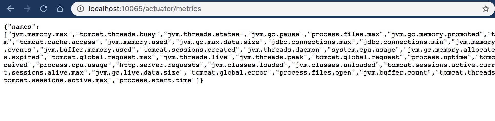
启动任意一个应用后，在浏览器中输入网址 http://localhost:10065/actuator/ 就可以查看所有接口地址，响应信息均是以 JSON 形式输出。举例，访问 http://localhost:10065/actuator/metrics，浏览器响应信息如下：
通过访问不同的地址，就可以获取关于服务的相关信息，更多 Actuator 组件相关的文档介绍可参见 Spring Boot Actuator官方文档介绍。但插件返回的信息全部是文本信息，不够直观明了，对监控者而言需要花费不少精力才能解读背后的信息。
Spring Boot Admin
这里引入 Spring Boot Admin，它是一个 Web 应用，官网地址：
它是基于 Actutor，在其上做了 UI 美化，对使用者而言可用性大大提高，下面我们来直观地体验一下。
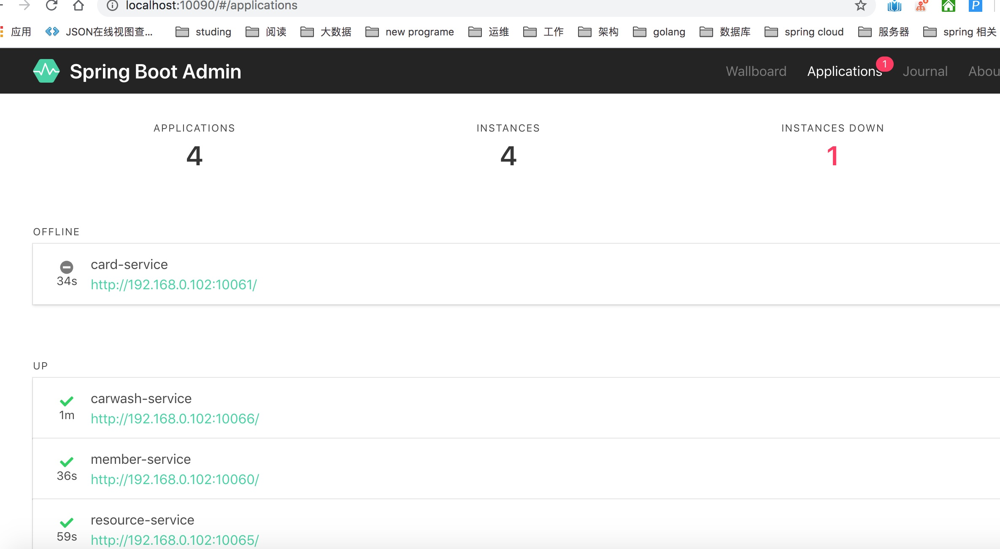
新建监控服务端
基于 Spring Boot 快速建立 parking-admin 子模块，pom.xml 中加入依赖：
<properties>
<spring.boot.admin.version>2.1.2</spring.boot.admin.version>
</properties>
<dependencies>
<dependency>
<groupId>de.codecentric</groupId>
<artifactId>spring-boot-admin-starter-server</artifactId>
<version>${spring.boot.admin.version}</version>
</dependency>
<dependency>
<groupId>org.springframework.boot</groupId>
<artifactId>spring-boot-starter-web</artifactId>
</dependency>
</dependencies>
application.yml 配置文件：
server:
port: 10090
management:
endpoints:
web:
exposure:
include: \\*
security:
enabled: false
endpoint:
health:
show-details: ALWAYS
spring:
application:
name: parking-admin
应用主类也很简单，增加 @EnableAdminServer 注解即可：
@EnableAdminServer
@SpringBootApplication
public class BootAdminApplication {
public static void main(String[] args) {
SpringApplication.run(BootAdminApplication.class, args);
}
}
启动应用后，服务端就算完工了，浏览器打开 localhost:8081 查看 Spring Boot Admin 主页面：
页面一直处于 Loading 状态，直接到有被监控端应用加入进来。
添加监控端应用
直接在相应的需要监控的模块中，引入相应的 client jar 即可。（版本建议与 spring-boot-admin-starter-server 保持一致）
<dependency>
<groupId>de.codecentric</groupId>
<artifactId>spring-boot-admin-starter-client</artifactId>
</dependency>
相应的 application.properties 中增加配置：
#必须暴露出来，不然admin-server无法获取health数据
management.endpoints.web.exposure.include=*
management.security.enabled=false
management.endpoint.health.show-details=ALWAYS
#admin server address
spring.boot.admin.client.url=http://localhost:10090
就这么两步，其它无须做过多更改，启动主程序类，我们为资源服务为例，返回监控页面，会发现资源服务实例已经被监控到，并罗列在界面中：
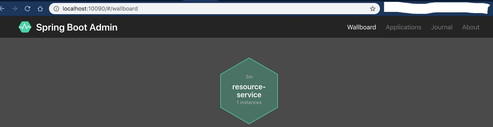
点击应用实例，进入更详细的信息查看，至此通过 Spring Boot Admin 实现的应用监控已可以正常使用。
监控虽然已经跨出代码开发行列，但时下 DevOps、SRE 概念的盛行，开发与运维的界线越为越模糊，合作越来越紧密，了解一些监控知识是很必要的。另外，监控微服务是任何一个微服务架构中都不可或缺的一环。但 Spring Boot Admin 仅仅只能监控应用本身的信息，应用所属的宿主机信息无法监控到，你知道有什么方法可以监控吗？
22 如何确定一次完整的请求过程——服务链路跟踪
微服务体系下，一个请求会调用多个服务，整个请求就会形成一个调用链，普通的日志输出是无法将整个体系串联起来，调用过程中某一个节点出现异常，定位排查难度系数增高，这种情况下就需要一个组件，来分析系统性能、展现调用链路，以便出现故障时快速定位并解决问题，由此 APM 工具闪亮登场。
APM 是什么
全称是 Application Performance Management，关注于系统内部执行、系统间调用的性能瓶颈分析，与传统监控软件（比如 Zabbix）只提供一些零散的监控点和指标相比，即便告警也不知道问题是出在哪里。
抛开商业工具先不谈，开源产品就有许多，Pinpoint、Zipkin、CAT、SkyWalking 等，产品间比较，网络中有相当多的资料来解读，本篇案例实战中采用 SkyWalking 来监控系统，来看看 APM 的功效。
为什么采用 SkyWalking 呢？国内优秀开源项目，更符合国人的开发使用习惯，对国内生态兼容的更好，目前已经捐献给 Apache 组织，影响力进一步扩大、社区活跃度也很高。另外，它透过字节码注入这种无侵入的方式来监控系统，大大降低第三方工具对系统的代码污染。
安装 SkyWalking
下载地址（国内镜像）：
解压后目录如下：
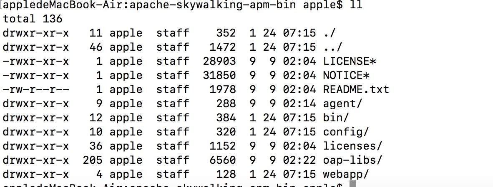
进入 config 文件夹，打开主配置文件 application.yml，可以发现 SkyWalking 有几种支持集群配置方式：ZooKeeper、Nacos、Etcd、Consul、Kubernates，本示例以单机版演示。SkyWalking 支持三种存储方式，H2、MySQL、ElasticSearch 三种，H2 默认将数据存储在内存中，重启后数据丢失。官方推荐 ElasticSearch，结果不言而喻，ElasticSearch 存储更快更多。
安装 ElasticSearch
下载 ElasticSearch（官方下载需要梯子）：
我下载的是 Mac 版本，注意版本兼容问题，本处采用 6.8.x，如果采用 ES 7+ 版本，在与 SkyWalking 融合时，会出现数据无法写入的情况。
解压目录如下：
启动 ElasticSearch：（-d 为后台运行方式）
访问 http://127.0.0.1:9200/，注意正常情况下输出页面，表明 ElasticSearch 安装成功。
配置 SkyWalking
打开主配置文件，修改配置相应：
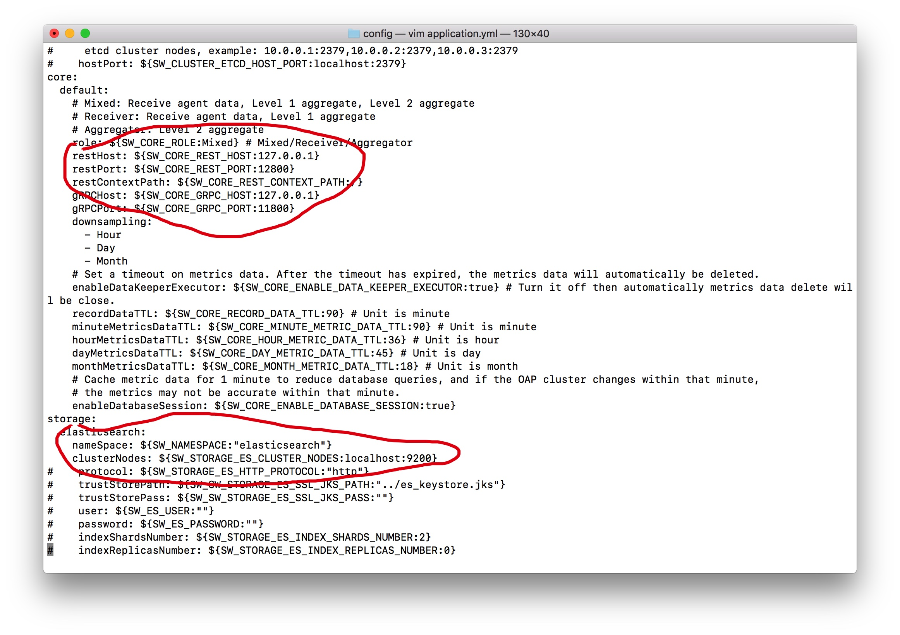
变更存储方式为 ElasticSearch，采用默认配置，同时注释掉原来的 h2 配置。
安装监控台
配置 webapp 目录下的 webapp.yml 文件，变更默认超时时间 10000，变更 server.por t= 13800，（原有的 8080 端口与默认的 sentinel-dashboard 端口冲突）如果超时，适当调大一些。
以上配置结束后，启动 SkyWalking，访问 SkyWalking 的 UI，http://127.0.0.1:8080，正常如下：
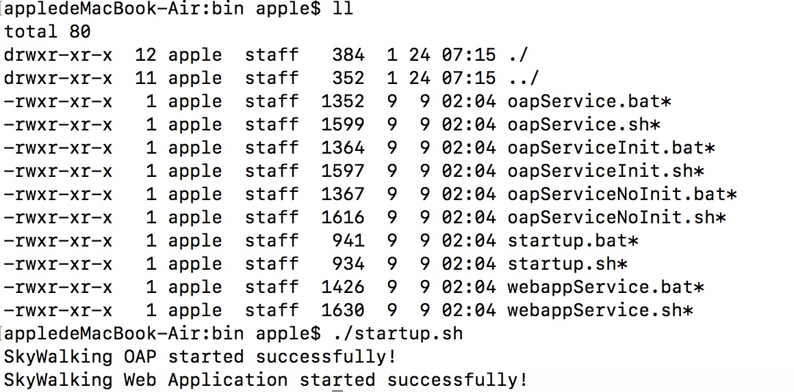
日志显示启动成功，管理平台页面 默认端口 8080，登录信息 admin/admin，打开浏览器地址显示如下：
安装客户端
agent 俗称探针，以无侵入的方式来收集和发送数据到归集器。本案例以 Java 的方式加载探针，即 java -jar 的方式。在测试前，首先要构建出 jar 包。在 Eclipse 的根项目中执行 "maven install" 命令，构建输出 jar 包。
我的 SkyWalking agent 所在目录：
/Users/apple/software/apache-skywalking-apm-bin/agent/skywalking-agent.jar
构建 jar 过程中出现一个小插曲，启动后显示异常：
appledeMacBook-Air:target apple$ java -jar parking-member.jar
parking-member.jar 中没有主清单属性
虽然 pom 配置中引用了 spring-boot-maven-plugin 插件，但构建出的jar依然无法找到主清单启动服务，由于我们的 parent 标签为自定义，无法按照标准的 spring-boot-starter-parent 方式构建可执行 jar，这里要特殊处理一下，增加如下配置项，才能达到与 spring-boot-starter-parent 一样的效果，在每个子模块的 pom 中增加此配置，重新测试可以正常启动。
<executions>
<execution>
<goals>
<goal>repackage</goal>
</goals>
</execution>
</executions>
先拿 member 启动一个 agent，看数据能否正常写入 Elasticsearch 库中去，在终端窗口中执行如下命令：
java -javaagent:/Users/apple/software/apache-skywalking-apm-bin/agent/skywalking-agent.jar -Dskywalking.agent.service_name=parking-member-service -Dskywalking.collector.backend_service=127.0.0.1:11800 -jar parking-member-service.jar
查看 agent 目录的日志文件 skywalking-api.log，可以看到客户端正常运行：
DEBUG 2020-02-05 11:45:06:003 SkywalkingAgent-5-ServiceAndEndpointRegisterClient-0 ServiceAndEndpointRegisterClient : ServiceAndEndpointRegisterClient running, status:CONNECTED.
按以上方式，多启动几个应用，并执行几个业务逻辑功能，比如会员绑定用户手机号、开通月卡、付费离场等等，来看下 SkyWalking 的数据收集、展现情况。
注意后面的 jar 执行包路径，如下命令是基于当前目录下执行的操作。
java -javaagent:/Users/apple/software/apache-skywalking-apm-bin/agent/skywalking-agent.jar -Dskywalking.agent.service_name=parking-card-service -Dskywalking.collector.backend_service=127.0.0.1:11800 -jar parking-card-service.jar
java -javaagent:/Users/apple/software/apache-skywalking-apm-bin/agent/skywalking-agent.jar -Dskywalking.agent.service_name=parking-admin-server -Dskywalking.collector.backend_service=127.0.0.1:11800 -jar parking-admin-server.jar
java -javaagent:/Users/apple/software/apache-skywalking-apm-bin/agent/skywalking-agent.jar -Dskywalking.agent.service_name=parking-gateway-service -Dskywalking.collector.backend_service=127.0.0.1:11800 -jar parking-gateway.jar
java -javaagent:/Users/apple/software/apache-skywalking-apm-bin/agent/skywalking-agent.jar -Dskywalking.agent.service_name=parking-resource-service -Dskywalking.collector.backend_service=127.0.0.1:11800 -jar parking-resource.jar
java -javaagent:/Users/apple/software/apache-skywalking-apm-bin/agent/skywalking-agent.jar -Dskywalking.agent.service_name=parking-message-service -Dskywalking.collector.backend_service=127.0.0.1:11800 -jar parking-message-service.jar
监控台数据展现
刷新 SkyWalking 的 UI 界面，可以看到已经有数据收集到。（重点关注图中彩色框框住的三个关键区域）
服务、服务实例、服务接口、数据库的性能监控，服务间的引用关系，服务接口的链路跟踪等等，都能从监控台找到相应的展现，我们这里重点关注下服务请求的链路跟踪。
请求链路案例分析
找一个涉及到两个以上服务的链路，深入分析一下，以会员绑定手机号为例子，请求调用到涉及会员服务、月卡服务两个。
左侧为请求端点显示：蓝色是正常的，红色是异常请求。
图中顶部棕色框圈住的部分是 traceid，什么是 traceid，这是一个全局的请求标识，从源头请求开始，中间涉及到的所有服务接口调用都携带此全局标识，用于标记这是一次完整的请求链路，通过这一 id 将所有请求串联起来，形成一个调用树，如上图中蓝色箭头所示的位置。
从中显露出两个信息：
- 一条完整的请求链路，可以跟踪相应的日志信息（借助日志工具，比如 ELK）
- 链路中的节点耗时，为后期优化提供了确切证据
至此，本篇带你使用 SkyWalking 融合到微服务中去，为微服务系统的正常运行保驾护航。有兴趣的同学，可以对照安装下其它的几个监控系统，对比一下，才能发现各自的优劣。
23 结束语
读到这里，相信你已经将本课程全部学完，对 Spring Cloud、Spring Cloud Alibaba 两个开源项目整体上有一个更加直观的认知，经过本次实际操作，是不是也没有想像中的那么难，一旦你将整个开发全貌有体系的接触之后，微服务思想也可以渗透到日常的开发工作中去。本篇，就带你做个简单复盘，回顾下整个课程体系。
前景回顾
本次实战选用的是常见的商场停车场景，旨在通过简单的场景融入微服务开发技术体系，逐步完善迭代，达到我们学习并实践微服务技术开发的目标，内容还是主要聚集于技术开发，系统运维层面涉及的内容较少，随着 DevOps 的流行，相信越来越多的公司开发与运维的边界逐渐消失，彻底融合在一起。
提到微服务，必然涉及到服务的拆分，拆分粒度究竟多细，业内没有统一的标准，依团队能力而异。太粗了，达不到效果，太细了管理起来繁杂冗余。服务拆分后，底层存储也涉及到拆分问题。即便是没采用微服务，在业务增长快速的情况下，分库分表也是比较常见的情况，这里涉及到垂直拆分以及水平拆分的问题。
垂直拆分，根据表功能不同，以近似属性划分，拆分为不同的小数据库。当库中单个表的容量超大时，就需要按不同纬度进行水平拆分，分布在形如 A01、A02、A_03……等不同的表中。本案例中不涉及水平拆分问题，如果存储体系不变，终究是遇到水平拆分的问题。
技术点回顾
技术是为业务服务，技术栈只有在适当的业务场景中才能发挥出应用有作用，这里列一个表格，将业务场景与技术应用对应起来。
| 使用业务场景 | 技术点 |
|---|---|
| 商场用户绑定手机号、开通月卡 | 服务间调用，RestTemplate、Feign、Ribbon |
| 各个子服务对外的在线 API 管理 | Spring Boot 与 Swagger 集成 |
| 商场停车收费系统对外聚合 API | Spring Cloud Gateway 与 Swagger 整合 |
| 子服务模块众多时，如何管理这些服务接口 | 通过 Nacos 进行服务管理 |
| 特殊节日下，绑定手机号赠送积分与往日不同 | 使用 Nacos 做分布式配置，供所有服务调用 |
| 停车场可用车位数展现，停车计费规则 | 分布式缓存 Redis |
| 定时向会员推送营销短信 | 分布式定时任务，整合 Shedlock |
| 商场优惠券兑换 | 分布式锁应用 Redis 整合 Redission |
| 面向不同终端的数据装配 | BFF 架构应用 |
| 优惠券兑换洗车 | 与 RPC 框架 Apache Dubbo 整合 |
| 屏蔽内部接口，对外统一的路由控制 | Spring Cloud Gateway |
| 服务调用时，响应慢或服务不可用时，需要快速失败 | 整合 Hystrix |
| 网关进行限流限制，防止流量过大 | Sentinel 设定特定规则 |
| 网关鉴权，安全防护 | Spring Cloud Gateway 整合 JWT |
| 付费出场时，计费数据的完整性 | 使用分布式事务，整合组件 Seata |
| 每个子服务的健康状态如何 | 整合 Spring Boot Admin |
| 确定服务间调用时请求的完整链路 | Apache SkyWalking |
实践出真知，通过简短 20 几节内容，各个环节是没有办法进行深入的讲解，所以就需要大家在实际应用过中，边摸索边学习，稳扎稳打。
微服务是万能的吗？
近两年，微服务的一度火热，似乎成了拯救自家业务的银弹。用微服务不等于就解决了一切问题，它与公司的组织架构、技术储备、业务走向、技术投入等都有很大的关系，需要产品、开发、测试、运维等各岗位人员通力配合。在没有一个开放性的、敏捷的思维框架下，不管是初次实施微服务开发，还是基于原有业务进行微服务架构重构，都面临着很大的挑战，同时它对系统测试运维有了更高的要求，不是说开发完就结束了。在软件生命周期过程中，开发仅占了很小的一部分，大部分阶段是处于运维阶段。
有必要开展微服务架构吗？业务发展快速，技术起点高且团队应用成熟的情况下，可以直接从微服务架构起步。或者系统已经复杂，维护难度越来越大，时间允许的情况下，进行微服务架构重构也是可能的，但也不可直接推倒重来，只能采用绞杀模式，一步一步替代，否则上来直接重写，代价是相当高的。
不要瞧不上单体应用，深度挖掘潜力后，完全可以应付正常的业务使用，一般情况下，还是建议从单体应用开发起步，业务稳定后，再做进一步打算。适当的设计，才不会造成成本浪费。
微服务不仅仅是开发
微服务不仅仅是开发，还有后期长期的运维与升级。本篇仅讲述了开发部分，后期生产系统的部署运维，还有很长的路要走。DevOps 时代要求开发有更多的运维技能，甚至在开发阶段就已经进入运维角色。容器化部署、自动化扩容、弹性扩展等等，微服务架构的过程还有很长的路要走，希望小伙伴们继续保持学习的劲头，再接再励。